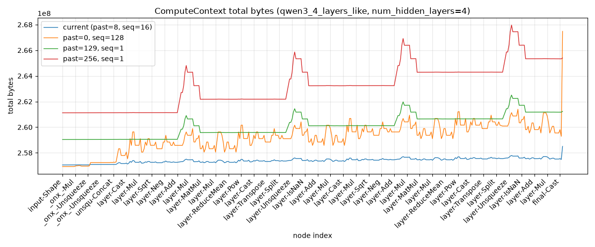

Note
Go to the end to download the full example code.
Qwen3-like ComputeContext memory profile#
This example builds a random-weight Qwen3-like model aligned with
test_cc_shape_inference_big_qwen3_4_layers_like by retrieving it from
backend test cases through onnx_light.onnx.backend.collect_test_case(),
computes ComputeContext memory
events, saves them to Excel, and prints the same profile as a table.

-- get the model from the backend tests
-- run every analysis (shapes, tags, in-place reuse/release, peak memory)
-- write inferred shapes and annotations back to the model
-- saves the model again
-- create export
Converted model with 393 nodes.
Peak ComputeContext total bytes: 258,503,642
node index node type input output memory memory_without_initializers event already_allocated_bytes initializers inputs intermediates output_allocation_bytes outputs
0 Shape input_ids input_ids::Shape1:2 257053666 131400 16384*batch_size*past_sequence_length+8*batch_size*sequence_length+8*batch_size*total_sequence_length+256922266 {'ambiguous': 8, 'axes': 152, 'shape': 184, 'weight': 256921922} {'weight': '16384*batch_size*past_sequence_length+8*batch_size*sequence_length+8*batch_size*total_sequence_length'} {} 8 {'shape': 8}
1 Shape past_key_values_key_0 past_key_values_key_0::Shape2:3 257053674 131408 16384*batch_size*past_sequence_length+8*batch_size*sequence_length+8*batch_size*total_sequence_length+256922274 {'ambiguous': 8, 'axes': 152, 'shape': 184, 'weight': 256921922} {'weight': '16384*batch_size*past_sequence_length+8*batch_size*sequence_length+8*batch_size*total_sequence_length'} {'shape': 8} 8 {'shape': 8}
2 Shape past_key_values_value_2 past_key_values_value_2::Shape:1 257053682 131416 16384*batch_size*past_sequence_length+8*batch_size*sequence_length+8*batch_size*total_sequence_length+256922282 {'ambiguous': 8, 'axes': 152, 'shape': 184, 'weight': 256921922} {'weight': '16384*batch_size*past_sequence_length+8*batch_size*sequence_length+8*batch_size*total_sequence_length'} {'shape': 16} 8 {'shape': 8}
3 Add input_ids::Shape1:2, past_key_values_key_0::Shape2:3 SqueezeAddPattern_SwapRangeAddScalarPattern--sym_size_int_25 257053682 131416 16384*batch_size*past_sequence_length+8*batch_size*sequence_length+8*batch_size*total_sequence_length+256922290 {'ambiguous': 8, 'axes': 152, 'shape': 184, 'weight': 256921922} {'weight': '16384*batch_size*past_sequence_length+8*batch_size*sequence_length+8*batch_size*total_sequence_length'} {'shape': 24} 0 {}
4 Squeeze past_key_values_key_0::Shape2:3 dim1::Sq__1 257053690 131424 16384*batch_size*past_sequence_length+8*batch_size*sequence_length+8*batch_size*total_sequence_length+256922290 {'ambiguous': 8, 'axes': 152, 'shape': 184, 'weight': 256921922} {'weight': '16384*batch_size*past_sequence_length+8*batch_size*sequence_length+8*batch_size*total_sequence_length'} {'shape': 24} 8 {'shape': 8}
5 Squeeze SqueezeAddPattern_SwapRangeAddScalarPattern--sym_size_int_25 dim2::Sq__1 257053698 131432 16384*batch_size*past_sequence_length+8*batch_size*sequence_length+8*batch_size*total_sequence_length+256922298 {'ambiguous': 8, 'axes': 152, 'shape': 184, 'weight': 256921922} {'weight': '16384*batch_size*past_sequence_length+8*batch_size*sequence_length+8*batch_size*total_sequence_length'} {'shape': 32} 8 {'shape': 8}
6 Range dim1::Sq__1, dim2::Sq__1, init7_s_1__1 _onx_range_dim1::Sq__1 257053826 131560 16384*batch_size*past_sequence_length+8*batch_size*sequence_length+8*batch_size*total_sequence_length+256922306 {'ambiguous': 8, 'axes': 152, 'shape': 184, 'weight': 256921922} {'weight': '16384*batch_size*past_sequence_length+8*batch_size*sequence_length+8*batch_size*total_sequence_length'} {'shape': 40} 8*sequence_length {'shape': '8*sequence_length'}
7 Unsqueeze _onx_range_dim1::Sq__1, init7_s2_0_1__1 _onx_range_dim1::Sq::UnSq0x1__1 257053810 131544 16384*batch_size*past_sequence_length+8*batch_size*sequence_length+8*batch_size*total_sequence_length+8*sequence_length+256922290 {'ambiguous': 8, 'axes': 152, 'shape': 184, 'weight': 256921922} {'weight': '16384*batch_size*past_sequence_length+8*batch_size*sequence_length+8*batch_size*total_sequence_length'} {'shape': '8*sequence_length+24'} 0 {}
8 Cast _onx_range_dim1::Sq::UnSq0x1__1 _onx_range_dim1::Sq::UnSq0x1::C1__1 257053874 131608 16384*batch_size*past_sequence_length+8*batch_size*sequence_length+8*batch_size*total_sequence_length+8*sequence_length+256922290 {'ambiguous': 8, 'axes': 152, 'shape': 184, 'weight': 256921922} {'weight': '16384*batch_size*past_sequence_length+8*batch_size*sequence_length+8*batch_size*total_sequence_length'} {'shape': '8*sequence_length+24'} 4*sequence_length {'shape': '4*sequence_length'}
9 Reshape _onx_range_dim1::Sq::UnSq0x1::C1__1, init7_s3_0_-1_1__1 _onx_range_dim1::Sq::UnSq0x1::C1::RSh0x-1x1__1 257053746 131480 16384*batch_size*past_sequence_length+4*sequence_length+8*batch_size*sequence_length+8*batch_size*total_sequence_length+256922290 {'ambiguous': 8, 'axes': 152, 'shape': 184, 'weight': 256921922} {'weight': '16384*batch_size*past_sequence_length+8*batch_size*sequence_length+8*batch_size*total_sequence_length'} {'shape': '4*sequence_length+24'} 0 {}
10 Mul to_322, _onx_range_dim1::Sq::UnSq0x1::C1::RSh0x-1x1__1 _onx_mul_weights__1 257057842 135576 16384*batch_size*past_sequence_length+4*sequence_length+8*batch_size*sequence_length+8*batch_size*total_sequence_length+256922290 {'ambiguous': 8, 'axes': 152, 'shape': 184, 'weight': 256921922} {'weight': '16384*batch_size*past_sequence_length+8*batch_size*sequence_length+8*batch_size*total_sequence_length'} {'shape': '4*sequence_length+24'} 256*sequence_length {'weight': '256*sequence_length'}
11 Cos _onx_mul_weights__1 _onx_cos_mul_weights__1 257061874 139608 16384*batch_size*past_sequence_length+256*sequence_length+8*batch_size*sequence_length+8*batch_size*total_sequence_length+256922290 {'ambiguous': 8, 'axes': 152, 'shape': 184, 'weight': 256921922} {'weight': '16384*batch_size*past_sequence_length+8*batch_size*sequence_length+8*batch_size*total_sequence_length'} {'shape': 24, 'weight': '256*sequence_length'} 256*sequence_length {'weight': '256*sequence_length'}
12 Sin _onx_mul_weights__1 _onx_sin_mul_weights__1 257061874 139608 16384*batch_size*past_sequence_length+512*sequence_length+8*batch_size*sequence_length+8*batch_size*total_sequence_length+256922290 {'ambiguous': 8, 'axes': 152, 'shape': 184, 'weight': 256921922} {'weight': '16384*batch_size*past_sequence_length+8*batch_size*sequence_length+8*batch_size*total_sequence_length'} {'shape': 24, 'weight': '512*sequence_length'} 0 {}
13 Cast _onx_cos_mul_weights__1 uoutput_0 257063922 141656 16384*batch_size*past_sequence_length+512*sequence_length+8*batch_size*sequence_length+8*batch_size*total_sequence_length+256922290 {'ambiguous': 8, 'axes': 152, 'shape': 184, 'weight': 256921922} {'weight': '16384*batch_size*past_sequence_length+8*batch_size*sequence_length+8*batch_size*total_sequence_length'} {'shape': 24, 'weight': '512*sequence_length'} 128*sequence_length {'weight': '128*sequence_length'}
14 Cast _onx_sin_mul_weights__1 uoutput_1 257061874 139608 384*sequence_length+16384*batch_size*past_sequence_length+8*batch_size*sequence_length+8*batch_size*total_sequence_length+256922290 {'ambiguous': 8, 'axes': 152, 'shape': 184, 'weight': 256921922} {'weight': '16384*batch_size*past_sequence_length+8*batch_size*sequence_length+8*batch_size*total_sequence_length'} {'shape': 24, 'weight': '384*sequence_length'} 128*sequence_length {'weight': '128*sequence_length'}
15 Squeeze past_key_values_key_0::Shape2:3 A::Sq__2 257057778 135512 16384*batch_size*past_sequence_length+256*sequence_length+8*batch_size*sequence_length+8*batch_size*total_sequence_length+256922290 {'ambiguous': 8, 'axes': 152, 'shape': 184, 'weight': 256921922} {'weight': '16384*batch_size*past_sequence_length+8*batch_size*sequence_length+8*batch_size*total_sequence_length'} {'shape': 24, 'weight': '256*sequence_length'} 0 {}
16 Squeeze SqueezeAddPattern_SwapRangeAddScalarPattern--sym_size_int_25 B::Sq__2 257057786 135520 16384*batch_size*past_sequence_length+256*sequence_length+8*batch_size*sequence_length+8*batch_size*total_sequence_length+256922290 {'ambiguous': 8, 'axes': 152, 'shape': 184, 'weight': 256921922} {'weight': '16384*batch_size*past_sequence_length+8*batch_size*sequence_length+8*batch_size*total_sequence_length'} {'shape': 24, 'weight': '256*sequence_length'} 8 {'shape': 8}
17 Range init7_s_0__2, B::Sq__2, init7_s_1__2 _onx_range_init7_s_0__2 257057978 135712 16384*batch_size*past_sequence_length+256*sequence_length+8*batch_size*sequence_length+8*batch_size*total_sequence_length+256922298 {'ambiguous': 8, 'axes': 152, 'shape': 184, 'weight': 256921922} {'weight': '16384*batch_size*past_sequence_length+8*batch_size*sequence_length+8*batch_size*total_sequence_length'} {'shape': 32, 'weight': '256*sequence_length'} 8*past_sequence_length+8*sequence_length {'weight': '8*past_sequence_length+8*sequence_length'}
18 Range A::Sq__2, B::Sq__2, init7_s_1__2 _onx_range_A::Sq__2 257058106 135840 16384*batch_size*past_sequence_length+264*sequence_length+8*batch_size*sequence_length+8*batch_size*total_sequence_length+8*past_sequence_length+256922298 {'ambiguous': 8, 'axes': 152, 'shape': 184, 'weight': 256921922} {'weight': '16384*batch_size*past_sequence_length+8*batch_size*sequence_length+8*batch_size*total_sequence_length'} {'shape': 32, 'weight': '264*sequence_length+8*past_sequence_length'} 8*sequence_length {'shape': '8*sequence_length'}
19 Unsqueeze _onx_range_init7_s_0__2, init7_s3_0_1_2__2 _onx_range_init7_s_0::UnSq0x1x2__2 257058090 135824 16384*batch_size*past_sequence_length+272*sequence_length+8*batch_size*sequence_length+8*batch_size*total_sequence_length+8*past_sequence_length+256922282 {'ambiguous': 8, 'axes': 152, 'shape': 184, 'weight': 256921922} {'weight': '16384*batch_size*past_sequence_length+8*batch_size*sequence_length+8*batch_size*total_sequence_length'} {'shape': '8*sequence_length+16', 'weight': '264*sequence_length+8*past_sequence_length'} 0 {}
20 Unsqueeze _onx_range_A::Sq__2, init7_s3_0_1_3__2 _onx_range_A::Sq::UnSq0x1x3__2 257058090 135824 16384*batch_size*past_sequence_length+272*sequence_length+8*batch_size*sequence_length+8*batch_size*total_sequence_length+8*past_sequence_length+256922282 {'ambiguous': 8, 'axes': 152, 'shape': 184, 'weight': 256921922} {'weight': '16384*batch_size*past_sequence_length+8*batch_size*sequence_length+8*batch_size*total_sequence_length'} {'shape': '8*sequence_length+16', 'weight': '264*sequence_length+8*past_sequence_length'} 0 {}
21 LessOrEqual _onx_range_init7_s_0::UnSq0x1x2__2, _onx_range_A::Sq::UnSq0x1x3__2 le_3 257058474 136208 16384*batch_size*past_sequence_length+272*sequence_length+8*batch_size*sequence_length+8*batch_size*total_sequence_length+8*past_sequence_length+256922282 {'ambiguous': 8, 'axes': 152, 'shape': 184, 'weight': 256921922} {'weight': '16384*batch_size*past_sequence_length+8*batch_size*sequence_length+8*batch_size*total_sequence_length'} {'shape': '8*sequence_length+16', 'weight': '264*sequence_length+8*past_sequence_length'} (past_sequence_length+sequence_length)*sequence_length {'weight': '(past_sequence_length+sequence_length)*sequence_length'}
22 Gather lm_head.weight, input_ids embedding 257090922 168656 (past_sequence_length+sequence_length)*sequence_length+16384*batch_size*past_sequence_length+256*sequence_length+8*batch_size*sequence_length+8*batch_size*total_sequence_length+256922282 {'ambiguous': 8, 'axes': 152, 'shape': 184, 'weight': 256921922} {'weight': '16384*batch_size*past_sequence_length+8*batch_size*sequence_length+8*batch_size*total_sequence_length'} {'shape': 16, 'weight': '(past_sequence_length+sequence_length)*sequence_length+256*sequence_length'} 2048*batch_size*sequence_length {'weight': '2048*batch_size*sequence_length'}
23 Cast attention_mask to 257090946 168680 (past_sequence_length+sequence_length)*sequence_length+16384*batch_size*past_sequence_length+2056*batch_size*sequence_length+256*sequence_length+8*batch_size*total_sequence_length+256922282 {'ambiguous': 8, 'axes': 152, 'shape': 184, 'weight': 256921922} {'weight': '16384*batch_size*past_sequence_length+8*batch_size*sequence_length+8*batch_size*total_sequence_length'} {'shape': 16, 'weight': '(past_sequence_length+sequence_length)*sequence_length+2048*batch_size*sequence_length+256*sequence_length'} batch_size*total_sequence_length {'weight': 'batch_size*total_sequence_length'}
24 Shape to to::Shape-1: 257090954 168688 (past_sequence_length+sequence_length)*sequence_length+16384*batch_size*past_sequence_length+2056*batch_size*sequence_length+256*sequence_length+9*batch_size*total_sequence_length+256922282 {'ambiguous': 8, 'axes': 152, 'shape': 184, 'weight': 256921922} {'weight': '16384*batch_size*past_sequence_length+8*batch_size*sequence_length+8*batch_size*total_sequence_length'} {'shape': 16, 'weight': '(past_sequence_length+sequence_length)*sequence_length+2048*batch_size*sequence_length+256*sequence_length+batch_size*total_sequence_length'} 8 {'shape': 8}
25 Squeeze SqueezeAddPattern_SwapRangeAddScalarPattern--sym_size_int_25 A::Sq__3 257090954 168688 (past_sequence_length+sequence_length)*sequence_length+16384*batch_size*past_sequence_length+2056*batch_size*sequence_length+256*sequence_length+9*batch_size*total_sequence_length+256922290 {'ambiguous': 8, 'axes': 152, 'shape': 184, 'weight': 256921922} {'weight': '16384*batch_size*past_sequence_length+8*batch_size*sequence_length+8*batch_size*total_sequence_length'} {'shape': 24, 'weight': '(past_sequence_length+sequence_length)*sequence_length+2048*batch_size*sequence_length+256*sequence_length+batch_size*total_sequence_length'} 0 {}
26 Squeeze past_key_values_value_2::Shape:1 B::Sq__3 257090954 168688 (past_sequence_length+sequence_length)*sequence_length+16384*batch_size*past_sequence_length+2056*batch_size*sequence_length+256*sequence_length+9*batch_size*total_sequence_length+256922290 {'ambiguous': 8, 'axes': 152, 'shape': 184, 'weight': 256921922} {'weight': '16384*batch_size*past_sequence_length+8*batch_size*sequence_length+8*batch_size*total_sequence_length'} {'shape': 24, 'weight': '(past_sequence_length+sequence_length)*sequence_length+2048*batch_size*sequence_length+256*sequence_length+batch_size*total_sequence_length'} 0 {}
27 Range init7_s_0__3, A::Sq__3, init7_s_1__3 _onx_range_init7_s_0__3 257091146 168880 (past_sequence_length+sequence_length)*sequence_length+16384*batch_size*past_sequence_length+2056*batch_size*sequence_length+256*sequence_length+9*batch_size*total_sequence_length+256922290 {'ambiguous': 8, 'axes': 152, 'shape': 184, 'weight': 256921922} {'weight': '16384*batch_size*past_sequence_length+8*batch_size*sequence_length+8*batch_size*total_sequence_length'} {'shape': 24, 'weight': '(past_sequence_length+sequence_length)*sequence_length+2048*batch_size*sequence_length+256*sequence_length+batch_size*total_sequence_length'} 8*past_sequence_length+8*sequence_length {'weight': '8*past_sequence_length+8*sequence_length'}
28 Range init7_s_0__3, B::Sq__3, init7_s_1__3 _onx_range_init7_s_02__3 257091146 168880 (past_sequence_length+sequence_length)*sequence_length+16384*batch_size*past_sequence_length+2056*batch_size*sequence_length+264*sequence_length+9*batch_size*total_sequence_length+8*past_sequence_length+256922282 {'ambiguous': 8, 'axes': 152, 'shape': 184, 'weight': 256921922} {'weight': '16384*batch_size*past_sequence_length+8*batch_size*sequence_length+8*batch_size*total_sequence_length'} {'shape': 16, 'weight': '(past_sequence_length+sequence_length)*sequence_length+2048*batch_size*sequence_length+264*sequence_length+8*past_sequence_length+batch_size*total_sequence_length'} 8*batch_size {'weight': '8*batch_size'}
29 Unsqueeze _onx_range_init7_s_0__3, init7_s3_0_1_2__3 _onx_range_init7_s_0::UnSq0x1x2__3 257091138 168872 (past_sequence_length+sequence_length)*sequence_length+16384*batch_size*past_sequence_length+2056*batch_size*sequence_length+264*sequence_length+8*batch_size+9*batch_size*total_sequence_length+8*past_sequence_length+256922274 {'ambiguous': 8, 'axes': 152, 'shape': 184, 'weight': 256921922} {'weight': '16384*batch_size*past_sequence_length+8*batch_size*sequence_length+8*batch_size*total_sequence_length'} {'shape': 8, 'weight': '(past_sequence_length+sequence_length)*sequence_length+2048*batch_size*sequence_length+264*sequence_length+8*batch_size+8*past_sequence_length+batch_size*total_sequence_length'} 0 {}
30 Unsqueeze _onx_range_init7_s_02__3, init7_s3_1_2_3__3 _onx_range_init7_s_02::UnSq1x2x3__3 257091138 168872 (past_sequence_length+sequence_length)*sequence_length+16384*batch_size*past_sequence_length+2056*batch_size*sequence_length+264*sequence_length+8*batch_size+9*batch_size*total_sequence_length+8*past_sequence_length+256922274 {'ambiguous': 8, 'axes': 152, 'shape': 184, 'weight': 256921922} {'weight': '16384*batch_size*past_sequence_length+8*batch_size*sequence_length+8*batch_size*total_sequence_length'} {'shape': 8, 'weight': '(past_sequence_length+sequence_length)*sequence_length+2048*batch_size*sequence_length+264*sequence_length+8*batch_size+8*past_sequence_length+batch_size*total_sequence_length'} 0 {}
31 Mul _onx_range_init7_s_02::UnSq1x2x3__3, to::Shape-1: _onx_mul_range_init7_s_02::UnSq1x2x3__3 257091138 168872 (past_sequence_length+sequence_length)*sequence_length+16384*batch_size*past_sequence_length+2056*batch_size*sequence_length+264*sequence_length+8*batch_size+9*batch_size*total_sequence_length+8*past_sequence_length+256922274 {'ambiguous': 8, 'axes': 152, 'shape': 184, 'weight': 256921922} {'weight': '16384*batch_size*past_sequence_length+8*batch_size*sequence_length+8*batch_size*total_sequence_length'} {'shape': 8, 'weight': '(past_sequence_length+sequence_length)*sequence_length+2048*batch_size*sequence_length+264*sequence_length+8*batch_size+8*past_sequence_length+batch_size*total_sequence_length'} 0 {}
32 Add _onx_mul_range_init7_s_02::UnSq1x2x3__3, _onx_range_init7_s_0::UnSq0x1x2__3 _onx_add_unsqueeze_12 257091322 169056 (past_sequence_length+sequence_length)*sequence_length+16384*batch_size*past_sequence_length+2056*batch_size*sequence_length+264*sequence_length+8*batch_size+9*batch_size*total_sequence_length+8*past_sequence_length+256922266 {'ambiguous': 8, 'axes': 152, 'shape': 184, 'weight': 256921922} {'weight': '16384*batch_size*past_sequence_length+8*batch_size*sequence_length+8*batch_size*total_sequence_length'} {'weight': '(past_sequence_length+sequence_length)*sequence_length+2048*batch_size*sequence_length+264*sequence_length+8*batch_size+8*past_sequence_length+batch_size*total_sequence_length'} 8*batch_size*(past_sequence_length+sequence_length) {'weight': '8*batch_size*(past_sequence_length+sequence_length)'}
33 Shape _onx_add_unsqueeze_12 _onx_add_unsqueeze_12::Shape: 257091154 168888 (past_sequence_length+sequence_length)*sequence_length+16384*batch_size*past_sequence_length+2056*batch_size*sequence_length+256*sequence_length+8*batch_size*(past_sequence_length+sequence_length)+9*batch_size*total_sequence_length+256922266 {'ambiguous': 8, 'axes': 152, 'shape': 184, 'weight': 256921922} {'weight': '16384*batch_size*past_sequence_length+8*batch_size*sequence_length+8*batch_size*total_sequence_length'} {'weight': '(past_sequence_length+sequence_length)*sequence_length+2048*batch_size*sequence_length+256*sequence_length+8*batch_size*(past_sequence_length+sequence_length)+batch_size*total_sequence_length'} 32 {'shape': 32}
34 Reshape to, init7_s1_-1 to::RSh-1 257091154 168888 (past_sequence_length+sequence_length)*sequence_length+16384*batch_size*past_sequence_length+2056*batch_size*sequence_length+256*sequence_length+8*batch_size*(past_sequence_length+sequence_length)+9*batch_size*total_sequence_length+256922298 {'ambiguous': 8, 'axes': 152, 'shape': 184, 'weight': 256921922} {'weight': '16384*batch_size*past_sequence_length+8*batch_size*sequence_length+8*batch_size*total_sequence_length'} {'shape': 32, 'weight': '(past_sequence_length+sequence_length)*sequence_length+2048*batch_size*sequence_length+256*sequence_length+8*batch_size*(past_sequence_length+sequence_length)+batch_size*total_sequence_length'} 0 {}
35 Reshape _onx_add_unsqueeze_12, init7_s1_-1 _onx_add_unsqueeze_12::RSh-1 257091154 168888 (past_sequence_length+sequence_length)*sequence_length+16384*batch_size*past_sequence_length+2056*batch_size*sequence_length+256*sequence_length+8*batch_size*(past_sequence_length+sequence_length)+9*batch_size*total_sequence_length+256922298 {'ambiguous': 8, 'axes': 152, 'shape': 184, 'weight': 256921922} {'weight': '16384*batch_size*past_sequence_length+8*batch_size*sequence_length+8*batch_size*total_sequence_length'} {'shape': 32, 'weight': '(past_sequence_length+sequence_length)*sequence_length+2048*batch_size*sequence_length+256*sequence_length+8*batch_size*(past_sequence_length+sequence_length)+batch_size*total_sequence_length'} 0 {}
36 Gather to::RSh-1, _onx_add_unsqueeze_12::RSh-1 _onx_gather_to::RSh-1 257091178 168912 (past_sequence_length+sequence_length)*sequence_length+16384*batch_size*past_sequence_length+2056*batch_size*sequence_length+256*sequence_length+8*batch_size*(past_sequence_length+sequence_length)+9*batch_size*total_sequence_length+256922298 {'ambiguous': 8, 'axes': 152, 'shape': 184, 'weight': 256921922} {'weight': '16384*batch_size*past_sequence_length+8*batch_size*sequence_length+8*batch_size*total_sequence_length'} {'shape': 32, 'weight': '(past_sequence_length+sequence_length)*sequence_length+2048*batch_size*sequence_length+256*sequence_length+8*batch_size*(past_sequence_length+sequence_length)+batch_size*total_sequence_length'} batch_size*(past_sequence_length+sequence_length) {'weight': 'batch_size*(past_sequence_length+sequence_length)'}
37 Reshape _onx_gather_to::RSh-1, _onx_add_unsqueeze_12::Shape: index 257090962 168696 (past_sequence_length+sequence_length)*sequence_length+16384*batch_size*past_sequence_length+2056*batch_size*sequence_length+256*sequence_length+8*batch_size*total_sequence_length+batch_size*(past_sequence_length+sequence_length)+256922298 {'ambiguous': 8, 'axes': 152, 'shape': 184, 'weight': 256921922} {'weight': '16384*batch_size*past_sequence_length+8*batch_size*sequence_length+8*batch_size*total_sequence_length'} {'shape': 32, 'weight': '(past_sequence_length+sequence_length)*sequence_length+2048*batch_size*sequence_length+256*sequence_length+batch_size*(past_sequence_length+sequence_length)'} 0 {}
38 And le_3, index and_2 257091314 169048 (past_sequence_length+sequence_length)*sequence_length+16384*batch_size*past_sequence_length+2056*batch_size*sequence_length+256*sequence_length+8*batch_size*total_sequence_length+batch_size*(past_sequence_length+sequence_length)+256922266 {'ambiguous': 8, 'axes': 152, 'shape': 184, 'weight': 256921922} {'weight': '16384*batch_size*past_sequence_length+8*batch_size*sequence_length+8*batch_size*total_sequence_length'} {'weight': '(past_sequence_length+sequence_length)*sequence_length+2048*batch_size*sequence_length+256*sequence_length+batch_size*(past_sequence_length+sequence_length)'} batch_size*(past_sequence_length+sequence_length)*sequence_length {'weight': 'batch_size*(past_sequence_length+sequence_length)*sequence_length'}
39 Unsqueeze uoutput_0, init7_s1_1 uunsqueeze_16 257090906 168640 16384*batch_size*past_sequence_length+2056*batch_size*sequence_length+256*sequence_length+8*batch_size*total_sequence_length+batch_size*(past_sequence_length+sequence_length)*sequence_length+256922266 {'ambiguous': 8, 'axes': 152, 'shape': 184, 'weight': 256921922} {'weight': '16384*batch_size*past_sequence_length+8*batch_size*sequence_length+8*batch_size*total_sequence_length'} {'weight': '2048*batch_size*sequence_length+256*sequence_length+batch_size*(past_sequence_length+sequence_length)*sequence_length'} 0 {}
40 Concat uunsqueeze_16, uunsqueeze_16 unsqueeze_16 257095002 172736 16384*batch_size*past_sequence_length+2056*batch_size*sequence_length+256*sequence_length+8*batch_size*total_sequence_length+batch_size*(past_sequence_length+sequence_length)*sequence_length+256922266 {'ambiguous': 8, 'axes': 152, 'shape': 184, 'weight': 256921922} {'weight': '16384*batch_size*past_sequence_length+8*batch_size*sequence_length+8*batch_size*total_sequence_length'} {'weight': '2048*batch_size*sequence_length+256*sequence_length+batch_size*(past_sequence_length+sequence_length)*sequence_length'} 256*sequence_length {'weight': '256*sequence_length'}
41 Unsqueeze uoutput_1, init7_s1_1 uunsqueeze_17 257092954 170688 384*sequence_length+16384*batch_size*past_sequence_length+2056*batch_size*sequence_length+8*batch_size*total_sequence_length+batch_size*(past_sequence_length+sequence_length)*sequence_length+256922266 {'ambiguous': 8, 'axes': 152, 'shape': 184, 'weight': 256921922} {'weight': '16384*batch_size*past_sequence_length+8*batch_size*sequence_length+8*batch_size*total_sequence_length'} {'weight': '384*sequence_length+2048*batch_size*sequence_length+batch_size*(past_sequence_length+sequence_length)*sequence_length'} 0 {}
42 Concat uunsqueeze_17, uunsqueeze_17 unsqueeze_17 257097050 174784 384*sequence_length+16384*batch_size*past_sequence_length+2056*batch_size*sequence_length+8*batch_size*total_sequence_length+batch_size*(past_sequence_length+sequence_length)*sequence_length+256922266 {'ambiguous': 8, 'axes': 152, 'shape': 184, 'weight': 256921922} {'weight': '16384*batch_size*past_sequence_length+8*batch_size*sequence_length+8*batch_size*total_sequence_length'} {'weight': '384*sequence_length+2048*batch_size*sequence_length+batch_size*(past_sequence_length+sequence_length)*sequence_length'} 256*sequence_length {'weight': '256*sequence_length'}
43 Cast embedding layer_0_f32 257160538 238272 16384*batch_size*past_sequence_length+2056*batch_size*sequence_length+512*sequence_length+8*batch_size*total_sequence_length+batch_size*(past_sequence_length+sequence_length)*sequence_length+256922266 {'ambiguous': 8, 'axes': 152, 'shape': 184, 'weight': 256921922} {'weight': '16384*batch_size*past_sequence_length+8*batch_size*sequence_length+8*batch_size*total_sequence_length'} {'weight': '2048*batch_size*sequence_length+512*sequence_length+batch_size*(past_sequence_length+sequence_length)*sequence_length'} 4096*batch_size*sequence_length {'weight': '4096*batch_size*sequence_length'}
44 Pow layer_0_f32, init1_s_ layer_0_pow_pre 257226074 303808 16384*batch_size*past_sequence_length+6152*batch_size*sequence_length+512*sequence_length+8*batch_size*total_sequence_length+batch_size*(past_sequence_length+sequence_length)*sequence_length+256922266 {'ambiguous': 8, 'axes': 152, 'shape': 184, 'weight': 256921922} {'weight': '16384*batch_size*past_sequence_length+8*batch_size*sequence_length+8*batch_size*total_sequence_length'} {'weight': '6144*batch_size*sequence_length+512*sequence_length+batch_size*(past_sequence_length+sequence_length)*sequence_length'} 4096*batch_size*sequence_length {'weight': '4096*batch_size*sequence_length'}
45 ReduceMean layer_0_pow_pre, init7_s1_-1 layer_0_mean_pre 257226138 303872 16384*batch_size*past_sequence_length+10248*batch_size*sequence_length+512*sequence_length+8*batch_size*total_sequence_length+batch_size*(past_sequence_length+sequence_length)*sequence_length+256922266 {'ambiguous': 8, 'axes': 152, 'shape': 184, 'weight': 256921922} {'weight': '16384*batch_size*past_sequence_length+8*batch_size*sequence_length+8*batch_size*total_sequence_length'} {'weight': '10240*batch_size*sequence_length+512*sequence_length+batch_size*(past_sequence_length+sequence_length)*sequence_length'} 4*batch_size*sequence_length {'weight': '4*batch_size*sequence_length'}
46 Add layer_0_mean_pre, init1_s_2::RSh1 layer_0_add_pre 257160602 238336 16384*batch_size*past_sequence_length+6156*batch_size*sequence_length+512*sequence_length+8*batch_size*total_sequence_length+batch_size*(past_sequence_length+sequence_length)*sequence_length+256922266 {'ambiguous': 8, 'axes': 152, 'shape': 184, 'weight': 256921922} {'weight': '16384*batch_size*past_sequence_length+8*batch_size*sequence_length+8*batch_size*total_sequence_length'} {'weight': '6148*batch_size*sequence_length+512*sequence_length+batch_size*(past_sequence_length+sequence_length)*sequence_length'} 0 {}
47 Sqrt layer_0_add_pre layer_0_sqrt_pre 257160602 238336 16384*batch_size*past_sequence_length+6156*batch_size*sequence_length+512*sequence_length+8*batch_size*total_sequence_length+batch_size*(past_sequence_length+sequence_length)*sequence_length+256922266 {'ambiguous': 8, 'axes': 152, 'shape': 184, 'weight': 256921922} {'weight': '16384*batch_size*past_sequence_length+8*batch_size*sequence_length+8*batch_size*total_sequence_length'} {'weight': '6148*batch_size*sequence_length+512*sequence_length+batch_size*(past_sequence_length+sequence_length)*sequence_length'} 0 {}
48 Reciprocal layer_0_sqrt_pre layer_0_rsqrt_pre 257160602 238336 16384*batch_size*past_sequence_length+6156*batch_size*sequence_length+512*sequence_length+8*batch_size*total_sequence_length+batch_size*(past_sequence_length+sequence_length)*sequence_length+256922266 {'ambiguous': 8, 'axes': 152, 'shape': 184, 'weight': 256921922} {'weight': '16384*batch_size*past_sequence_length+8*batch_size*sequence_length+8*batch_size*total_sequence_length'} {'weight': '6148*batch_size*sequence_length+512*sequence_length+batch_size*(past_sequence_length+sequence_length)*sequence_length'} 0 {}
49 Mul layer_0_f32, layer_0_rsqrt_pre layer_0_mul_pre 257160602 238336 16384*batch_size*past_sequence_length+6156*batch_size*sequence_length+512*sequence_length+8*batch_size*total_sequence_length+batch_size*(past_sequence_length+sequence_length)*sequence_length+256922266 {'ambiguous': 8, 'axes': 152, 'shape': 184, 'weight': 256921922} {'weight': '16384*batch_size*past_sequence_length+8*batch_size*sequence_length+8*batch_size*total_sequence_length'} {'weight': '6148*batch_size*sequence_length+512*sequence_length+batch_size*(past_sequence_length+sequence_length)*sequence_length'} 0 {}
50 Cast layer_0_mul_pre layer_0_normed_half 257193306 271040 16384*batch_size*past_sequence_length+6152*batch_size*sequence_length+512*sequence_length+8*batch_size*total_sequence_length+batch_size*(past_sequence_length+sequence_length)*sequence_length+256922266 {'ambiguous': 8, 'axes': 152, 'shape': 184, 'weight': 256921922} {'weight': '16384*batch_size*past_sequence_length+8*batch_size*sequence_length+8*batch_size*total_sequence_length'} {'weight': '6144*batch_size*sequence_length+512*sequence_length+batch_size*(past_sequence_length+sequence_length)*sequence_length'} 2048*batch_size*sequence_length {'weight': '2048*batch_size*sequence_length'}
51 Mul model.layers.0.input_layernorm.weight, layer_0_normed_half layer_0_normed 257127770 205504 16384*batch_size*past_sequence_length+4104*batch_size*sequence_length+512*sequence_length+8*batch_size*total_sequence_length+batch_size*(past_sequence_length+sequence_length)*sequence_length+256922266 {'ambiguous': 8, 'axes': 152, 'shape': 184, 'weight': 256921922} {'weight': '16384*batch_size*past_sequence_length+8*batch_size*sequence_length+8*batch_size*total_sequence_length'} {'weight': '4096*batch_size*sequence_length+512*sequence_length+batch_size*(past_sequence_length+sequence_length)*sequence_length'} 0 {}
52 MatMul layer_0_normed, p_model_layers_0_self_attn_q_proj_weight::T10 layer_0_q_mm 257193306 271040 16384*batch_size*past_sequence_length+4104*batch_size*sequence_length+512*sequence_length+8*batch_size*total_sequence_length+batch_size*(past_sequence_length+sequence_length)*sequence_length+256922266 {'ambiguous': 8, 'axes': 152, 'shape': 184, 'weight': 256921922} {'weight': '16384*batch_size*past_sequence_length+8*batch_size*sequence_length+8*batch_size*total_sequence_length'} {'weight': '4096*batch_size*sequence_length+512*sequence_length+batch_size*(past_sequence_length+sequence_length)*sequence_length'} 4096*batch_size*sequence_length {'weight': '4096*batch_size*sequence_length'}
53 Cast layer_0_q_mm layer_0_q_f32 257324378 402112 16384*batch_size*past_sequence_length+8200*batch_size*sequence_length+512*sequence_length+8*batch_size*total_sequence_length+batch_size*(past_sequence_length+sequence_length)*sequence_length+256922266 {'ambiguous': 8, 'axes': 152, 'shape': 184, 'weight': 256921922} {'weight': '16384*batch_size*past_sequence_length+8*batch_size*sequence_length+8*batch_size*total_sequence_length'} {'weight': '8192*batch_size*sequence_length+512*sequence_length+batch_size*(past_sequence_length+sequence_length)*sequence_length'} 8192*batch_size*sequence_length {'weight': '8192*batch_size*sequence_length'}
54 Reshape layer_0_q_f32, init7_s4_0_0_16_128 layer_0_q_4d 257258842 336576 16384*batch_size*past_sequence_length+12296*batch_size*sequence_length+512*sequence_length+8*batch_size*total_sequence_length+batch_size*(past_sequence_length+sequence_length)*sequence_length+256922266 {'ambiguous': 8, 'axes': 152, 'shape': 184, 'weight': 256921922} {'weight': '16384*batch_size*past_sequence_length+8*batch_size*sequence_length+8*batch_size*total_sequence_length'} {'weight': '12288*batch_size*sequence_length+512*sequence_length+batch_size*(past_sequence_length+sequence_length)*sequence_length'} 0 {}
55 Pow layer_0_q_4d, init1_s_ layer_0_pow_q 257389914 467648 16384*batch_size*past_sequence_length+12296*batch_size*sequence_length+512*sequence_length+8*batch_size*total_sequence_length+batch_size*(past_sequence_length+sequence_length)*sequence_length+256922266 {'ambiguous': 8, 'axes': 152, 'shape': 184, 'weight': 256921922} {'weight': '16384*batch_size*past_sequence_length+8*batch_size*sequence_length+8*batch_size*total_sequence_length'} {'weight': '12288*batch_size*sequence_length+512*sequence_length+batch_size*(past_sequence_length+sequence_length)*sequence_length'} 8192*batch_size*sequence_length {'weight': '8192*batch_size*sequence_length'}
56 ReduceMean layer_0_pow_q, init7_s1_-1 layer_0_mean_q 257390938 468672 16384*batch_size*past_sequence_length+20488*batch_size*sequence_length+512*sequence_length+8*batch_size*total_sequence_length+batch_size*(past_sequence_length+sequence_length)*sequence_length+256922266 {'ambiguous': 8, 'axes': 152, 'shape': 184, 'weight': 256921922} {'weight': '16384*batch_size*past_sequence_length+8*batch_size*sequence_length+8*batch_size*total_sequence_length'} {'weight': '20480*batch_size*sequence_length+512*sequence_length+batch_size*(past_sequence_length+sequence_length)*sequence_length'} 64*batch_size*sequence_length {'weight': '64*batch_size*sequence_length'}
57 Add layer_0_mean_q, init1_s_2::RSh1 layer_0_add_q 257259866 337600 16384*batch_size*past_sequence_length+12360*batch_size*sequence_length+512*sequence_length+8*batch_size*total_sequence_length+batch_size*(past_sequence_length+sequence_length)*sequence_length+256922266 {'ambiguous': 8, 'axes': 152, 'shape': 184, 'weight': 256921922} {'weight': '16384*batch_size*past_sequence_length+8*batch_size*sequence_length+8*batch_size*total_sequence_length'} {'weight': '12352*batch_size*sequence_length+512*sequence_length+batch_size*(past_sequence_length+sequence_length)*sequence_length'} 0 {}
58 Sqrt layer_0_add_q layer_0_sqrt_q 257259866 337600 16384*batch_size*past_sequence_length+12360*batch_size*sequence_length+512*sequence_length+8*batch_size*total_sequence_length+batch_size*(past_sequence_length+sequence_length)*sequence_length+256922266 {'ambiguous': 8, 'axes': 152, 'shape': 184, 'weight': 256921922} {'weight': '16384*batch_size*past_sequence_length+8*batch_size*sequence_length+8*batch_size*total_sequence_length'} {'weight': '12352*batch_size*sequence_length+512*sequence_length+batch_size*(past_sequence_length+sequence_length)*sequence_length'} 0 {}
59 Reciprocal layer_0_sqrt_q layer_0_rsqrt_q 257259866 337600 16384*batch_size*past_sequence_length+12360*batch_size*sequence_length+512*sequence_length+8*batch_size*total_sequence_length+batch_size*(past_sequence_length+sequence_length)*sequence_length+256922266 {'ambiguous': 8, 'axes': 152, 'shape': 184, 'weight': 256921922} {'weight': '16384*batch_size*past_sequence_length+8*batch_size*sequence_length+8*batch_size*total_sequence_length'} {'weight': '12352*batch_size*sequence_length+512*sequence_length+batch_size*(past_sequence_length+sequence_length)*sequence_length'} 0 {}
60 Mul layer_0_q_4d, layer_0_rsqrt_q layer_0_mul_q 257259866 337600 16384*batch_size*past_sequence_length+12360*batch_size*sequence_length+512*sequence_length+8*batch_size*total_sequence_length+batch_size*(past_sequence_length+sequence_length)*sequence_length+256922266 {'ambiguous': 8, 'axes': 152, 'shape': 184, 'weight': 256921922} {'weight': '16384*batch_size*past_sequence_length+8*batch_size*sequence_length+8*batch_size*total_sequence_length'} {'weight': '12352*batch_size*sequence_length+512*sequence_length+batch_size*(past_sequence_length+sequence_length)*sequence_length'} 0 {}
61 Cast layer_0_mul_q layer_0_q_normed_half 257324378 402112 16384*batch_size*past_sequence_length+12296*batch_size*sequence_length+512*sequence_length+8*batch_size*total_sequence_length+batch_size*(past_sequence_length+sequence_length)*sequence_length+256922266 {'ambiguous': 8, 'axes': 152, 'shape': 184, 'weight': 256921922} {'weight': '16384*batch_size*past_sequence_length+8*batch_size*sequence_length+8*batch_size*total_sequence_length'} {'weight': '12288*batch_size*sequence_length+512*sequence_length+batch_size*(past_sequence_length+sequence_length)*sequence_length'} 4096*batch_size*sequence_length {'weight': '4096*batch_size*sequence_length'}
62 Mul model.layers.0.self_attn.q_norm.weight, layer_0_q_normed_half layer_0_q_normed 257193306 271040 16384*batch_size*past_sequence_length+8200*batch_size*sequence_length+512*sequence_length+8*batch_size*total_sequence_length+batch_size*(past_sequence_length+sequence_length)*sequence_length+256922266 {'ambiguous': 8, 'axes': 152, 'shape': 184, 'weight': 256921922} {'weight': '16384*batch_size*past_sequence_length+8*batch_size*sequence_length+8*batch_size*total_sequence_length'} {'weight': '8192*batch_size*sequence_length+512*sequence_length+batch_size*(past_sequence_length+sequence_length)*sequence_length'} 0 {}
63 Transpose layer_0_q_normed layer_0_q_T 257193306 271040 16384*batch_size*past_sequence_length+8200*batch_size*sequence_length+512*sequence_length+8*batch_size*total_sequence_length+batch_size*(past_sequence_length+sequence_length)*sequence_length+256922266 {'ambiguous': 8, 'axes': 152, 'shape': 184, 'weight': 256921922} {'weight': '16384*batch_size*past_sequence_length+8*batch_size*sequence_length+8*batch_size*total_sequence_length'} {'weight': '8192*batch_size*sequence_length+512*sequence_length+batch_size*(past_sequence_length+sequence_length)*sequence_length'} 0 {}
64 MatMul layer_0_normed, p_model_layers_0_self_attn_k_proj_weight::T10 layer_0_k_mm 257226074 303808 16384*batch_size*past_sequence_length+8200*batch_size*sequence_length+512*sequence_length+8*batch_size*total_sequence_length+batch_size*(past_sequence_length+sequence_length)*sequence_length+256922266 {'ambiguous': 8, 'axes': 152, 'shape': 184, 'weight': 256921922} {'weight': '16384*batch_size*past_sequence_length+8*batch_size*sequence_length+8*batch_size*total_sequence_length'} {'weight': '8192*batch_size*sequence_length+512*sequence_length+batch_size*(past_sequence_length+sequence_length)*sequence_length'} 2048*batch_size*sequence_length {'weight': '2048*batch_size*sequence_length'}
65 Cast layer_0_k_mm layer_0_k_f32 257291610 369344 16384*batch_size*past_sequence_length+10248*batch_size*sequence_length+512*sequence_length+8*batch_size*total_sequence_length+batch_size*(past_sequence_length+sequence_length)*sequence_length+256922266 {'ambiguous': 8, 'axes': 152, 'shape': 184, 'weight': 256921922} {'weight': '16384*batch_size*past_sequence_length+8*batch_size*sequence_length+8*batch_size*total_sequence_length'} {'weight': '10240*batch_size*sequence_length+512*sequence_length+batch_size*(past_sequence_length+sequence_length)*sequence_length'} 4096*batch_size*sequence_length {'weight': '4096*batch_size*sequence_length'}
66 Reshape layer_0_k_f32, init7_s4_0_0_8_128 layer_0_k_4d 257258842 336576 16384*batch_size*past_sequence_length+12296*batch_size*sequence_length+512*sequence_length+8*batch_size*total_sequence_length+batch_size*(past_sequence_length+sequence_length)*sequence_length+256922266 {'ambiguous': 8, 'axes': 152, 'shape': 184, 'weight': 256921922} {'weight': '16384*batch_size*past_sequence_length+8*batch_size*sequence_length+8*batch_size*total_sequence_length'} {'weight': '12288*batch_size*sequence_length+512*sequence_length+batch_size*(past_sequence_length+sequence_length)*sequence_length'} 0 {}
67 Pow layer_0_k_4d, init1_s_ layer_0_pow_k 257324378 402112 16384*batch_size*past_sequence_length+12296*batch_size*sequence_length+512*sequence_length+8*batch_size*total_sequence_length+batch_size*(past_sequence_length+sequence_length)*sequence_length+256922266 {'ambiguous': 8, 'axes': 152, 'shape': 184, 'weight': 256921922} {'weight': '16384*batch_size*past_sequence_length+8*batch_size*sequence_length+8*batch_size*total_sequence_length'} {'weight': '12288*batch_size*sequence_length+512*sequence_length+batch_size*(past_sequence_length+sequence_length)*sequence_length'} 4096*batch_size*sequence_length {'weight': '4096*batch_size*sequence_length'}
68 ReduceMean layer_0_pow_k, init7_s1_-1 layer_0_mean_k 257324890 402624 16392*batch_size*sequence_length+16384*batch_size*past_sequence_length+512*sequence_length+8*batch_size*total_sequence_length+batch_size*(past_sequence_length+sequence_length)*sequence_length+256922266 {'ambiguous': 8, 'axes': 152, 'shape': 184, 'weight': 256921922} {'weight': '16384*batch_size*past_sequence_length+8*batch_size*sequence_length+8*batch_size*total_sequence_length'} {'weight': '16384*batch_size*sequence_length+512*sequence_length+batch_size*(past_sequence_length+sequence_length)*sequence_length'} 32*batch_size*sequence_length {'weight': '32*batch_size*sequence_length'}
69 Add layer_0_mean_k, init1_s_2::RSh1 layer_0_add_k 257259354 337088 16384*batch_size*past_sequence_length+12328*batch_size*sequence_length+512*sequence_length+8*batch_size*total_sequence_length+batch_size*(past_sequence_length+sequence_length)*sequence_length+256922266 {'ambiguous': 8, 'axes': 152, 'shape': 184, 'weight': 256921922} {'weight': '16384*batch_size*past_sequence_length+8*batch_size*sequence_length+8*batch_size*total_sequence_length'} {'weight': '12320*batch_size*sequence_length+512*sequence_length+batch_size*(past_sequence_length+sequence_length)*sequence_length'} 0 {}
70 Sqrt layer_0_add_k layer_0_sqrt_k 257259354 337088 16384*batch_size*past_sequence_length+12328*batch_size*sequence_length+512*sequence_length+8*batch_size*total_sequence_length+batch_size*(past_sequence_length+sequence_length)*sequence_length+256922266 {'ambiguous': 8, 'axes': 152, 'shape': 184, 'weight': 256921922} {'weight': '16384*batch_size*past_sequence_length+8*batch_size*sequence_length+8*batch_size*total_sequence_length'} {'weight': '12320*batch_size*sequence_length+512*sequence_length+batch_size*(past_sequence_length+sequence_length)*sequence_length'} 0 {}
71 Reciprocal layer_0_sqrt_k layer_0_rsqrt_k 257259354 337088 16384*batch_size*past_sequence_length+12328*batch_size*sequence_length+512*sequence_length+8*batch_size*total_sequence_length+batch_size*(past_sequence_length+sequence_length)*sequence_length+256922266 {'ambiguous': 8, 'axes': 152, 'shape': 184, 'weight': 256921922} {'weight': '16384*batch_size*past_sequence_length+8*batch_size*sequence_length+8*batch_size*total_sequence_length'} {'weight': '12320*batch_size*sequence_length+512*sequence_length+batch_size*(past_sequence_length+sequence_length)*sequence_length'} 0 {}
72 Mul layer_0_k_4d, layer_0_rsqrt_k layer_0_mul_k 257259354 337088 16384*batch_size*past_sequence_length+12328*batch_size*sequence_length+512*sequence_length+8*batch_size*total_sequence_length+batch_size*(past_sequence_length+sequence_length)*sequence_length+256922266 {'ambiguous': 8, 'axes': 152, 'shape': 184, 'weight': 256921922} {'weight': '16384*batch_size*past_sequence_length+8*batch_size*sequence_length+8*batch_size*total_sequence_length'} {'weight': '12320*batch_size*sequence_length+512*sequence_length+batch_size*(past_sequence_length+sequence_length)*sequence_length'} 0 {}
73 Cast layer_0_mul_k layer_0_k_normed_half 257291610 369344 16384*batch_size*past_sequence_length+12296*batch_size*sequence_length+512*sequence_length+8*batch_size*total_sequence_length+batch_size*(past_sequence_length+sequence_length)*sequence_length+256922266 {'ambiguous': 8, 'axes': 152, 'shape': 184, 'weight': 256921922} {'weight': '16384*batch_size*past_sequence_length+8*batch_size*sequence_length+8*batch_size*total_sequence_length'} {'weight': '12288*batch_size*sequence_length+512*sequence_length+batch_size*(past_sequence_length+sequence_length)*sequence_length'} 2048*batch_size*sequence_length {'weight': '2048*batch_size*sequence_length'}
74 Mul model.layers.0.self_attn.k_norm.weight, layer_0_k_normed_half layer_0_k_normed 257226074 303808 16384*batch_size*past_sequence_length+10248*batch_size*sequence_length+512*sequence_length+8*batch_size*total_sequence_length+batch_size*(past_sequence_length+sequence_length)*sequence_length+256922266 {'ambiguous': 8, 'axes': 152, 'shape': 184, 'weight': 256921922} {'weight': '16384*batch_size*past_sequence_length+8*batch_size*sequence_length+8*batch_size*total_sequence_length'} {'weight': '10240*batch_size*sequence_length+512*sequence_length+batch_size*(past_sequence_length+sequence_length)*sequence_length'} 0 {}
75 Transpose layer_0_k_normed layer_0_k_T 257226074 303808 16384*batch_size*past_sequence_length+10248*batch_size*sequence_length+512*sequence_length+8*batch_size*total_sequence_length+batch_size*(past_sequence_length+sequence_length)*sequence_length+256922266 {'ambiguous': 8, 'axes': 152, 'shape': 184, 'weight': 256921922} {'weight': '16384*batch_size*past_sequence_length+8*batch_size*sequence_length+8*batch_size*total_sequence_length'} {'weight': '10240*batch_size*sequence_length+512*sequence_length+batch_size*(past_sequence_length+sequence_length)*sequence_length'} 0 {}
76 MatMul layer_0_normed, p_model_layers_0_self_attn_v_proj_weight::T10 layer_0_v_mm 257226074 303808 16384*batch_size*past_sequence_length+10248*batch_size*sequence_length+512*sequence_length+8*batch_size*total_sequence_length+batch_size*(past_sequence_length+sequence_length)*sequence_length+256922266 {'ambiguous': 8, 'axes': 152, 'shape': 184, 'weight': 256921922} {'weight': '16384*batch_size*past_sequence_length+8*batch_size*sequence_length+8*batch_size*total_sequence_length'} {'weight': '10240*batch_size*sequence_length+512*sequence_length+batch_size*(past_sequence_length+sequence_length)*sequence_length'} 0 {}
77 Reshape layer_0_v_mm, init7_s4_0_0_8_128 layer_0_v_4d 257226074 303808 16384*batch_size*past_sequence_length+10248*batch_size*sequence_length+512*sequence_length+8*batch_size*total_sequence_length+batch_size*(past_sequence_length+sequence_length)*sequence_length+256922266 {'ambiguous': 8, 'axes': 152, 'shape': 184, 'weight': 256921922} {'weight': '16384*batch_size*past_sequence_length+8*batch_size*sequence_length+8*batch_size*total_sequence_length'} {'weight': '10240*batch_size*sequence_length+512*sequence_length+batch_size*(past_sequence_length+sequence_length)*sequence_length'} 0 {}
78 Transpose layer_0_v_4d layer_0_v_T 257226074 303808 16384*batch_size*past_sequence_length+10248*batch_size*sequence_length+512*sequence_length+8*batch_size*total_sequence_length+batch_size*(past_sequence_length+sequence_length)*sequence_length+256922266 {'ambiguous': 8, 'axes': 152, 'shape': 184, 'weight': 256921922} {'weight': '16384*batch_size*past_sequence_length+8*batch_size*sequence_length+8*batch_size*total_sequence_length'} {'weight': '10240*batch_size*sequence_length+512*sequence_length+batch_size*(past_sequence_length+sequence_length)*sequence_length'} 0 {}
79 Split layer_0_q_T layer_0_q_half0, layer_0_q_half1 257291610 369344 16384*batch_size*past_sequence_length+10248*batch_size*sequence_length+512*sequence_length+8*batch_size*total_sequence_length+batch_size*(past_sequence_length+sequence_length)*sequence_length+256922266 {'ambiguous': 8, 'axes': 152, 'shape': 184, 'weight': 256921922} {'weight': '16384*batch_size*past_sequence_length+8*batch_size*sequence_length+8*batch_size*total_sequence_length'} {'weight': '10240*batch_size*sequence_length+512*sequence_length+batch_size*(past_sequence_length+sequence_length)*sequence_length'} 4096*batch_size*sequence_length {'weight': '4096*batch_size*sequence_length'}
80 Neg layer_0_q_half1 layer_0_neg_q 257291610 369344 14344*batch_size*sequence_length+16384*batch_size*past_sequence_length+512*sequence_length+8*batch_size*total_sequence_length+batch_size*(past_sequence_length+sequence_length)*sequence_length+256922266 {'ambiguous': 8, 'axes': 152, 'shape': 184, 'weight': 256921922} {'weight': '16384*batch_size*past_sequence_length+8*batch_size*sequence_length+8*batch_size*total_sequence_length'} {'weight': '14336*batch_size*sequence_length+512*sequence_length+batch_size*(past_sequence_length+sequence_length)*sequence_length'} 0 {}
81 Concat layer_0_neg_q, layer_0_q_half0 layer_0_q_rot 257357146 434880 14344*batch_size*sequence_length+16384*batch_size*past_sequence_length+512*sequence_length+8*batch_size*total_sequence_length+batch_size*(past_sequence_length+sequence_length)*sequence_length+256922266 {'ambiguous': 8, 'axes': 152, 'shape': 184, 'weight': 256921922} {'weight': '16384*batch_size*past_sequence_length+8*batch_size*sequence_length+8*batch_size*total_sequence_length'} {'weight': '14336*batch_size*sequence_length+512*sequence_length+batch_size*(past_sequence_length+sequence_length)*sequence_length'} 4096*batch_size*sequence_length {'weight': '4096*batch_size*sequence_length'}
82 Mul layer_0_q_T, unsqueeze_16 layer_0_q_cos 257291610 369344 16384*batch_size*past_sequence_length+512*sequence_length+14344*batch_size*sequence_length+8*batch_size*total_sequence_length+batch_size*(past_sequence_length+sequence_length)*sequence_length+256922266 {'ambiguous': 8, 'axes': 152, 'shape': 184, 'weight': 256921922} {'weight': '16384*batch_size*past_sequence_length+8*batch_size*sequence_length+8*batch_size*total_sequence_length'} {'weight': '512*sequence_length+14336*batch_size*sequence_length+batch_size*(past_sequence_length+sequence_length)*sequence_length'} 0 {}
83 Mul layer_0_q_rot, unsqueeze_17 layer_0_q_sin 257291610 369344 16384*batch_size*past_sequence_length+512*sequence_length+14344*batch_size*sequence_length+8*batch_size*total_sequence_length+batch_size*(past_sequence_length+sequence_length)*sequence_length+256922266 {'ambiguous': 8, 'axes': 152, 'shape': 184, 'weight': 256921922} {'weight': '16384*batch_size*past_sequence_length+8*batch_size*sequence_length+8*batch_size*total_sequence_length'} {'weight': '512*sequence_length+14336*batch_size*sequence_length+batch_size*(past_sequence_length+sequence_length)*sequence_length'} 0 {}
84 Add layer_0_q_cos, layer_0_q_sin layer_0_q_rope 257291610 369344 16384*batch_size*past_sequence_length+512*sequence_length+14344*batch_size*sequence_length+8*batch_size*total_sequence_length+batch_size*(past_sequence_length+sequence_length)*sequence_length+256922266 {'ambiguous': 8, 'axes': 152, 'shape': 184, 'weight': 256921922} {'weight': '16384*batch_size*past_sequence_length+8*batch_size*sequence_length+8*batch_size*total_sequence_length'} {'weight': '512*sequence_length+14336*batch_size*sequence_length+batch_size*(past_sequence_length+sequence_length)*sequence_length'} 0 {}
85 Split layer_0_k_T layer_0_k_half0, layer_0_k_half1 257258842 336576 16384*batch_size*past_sequence_length+10248*batch_size*sequence_length+512*sequence_length+8*batch_size*total_sequence_length+batch_size*(past_sequence_length+sequence_length)*sequence_length+256922266 {'ambiguous': 8, 'axes': 152, 'shape': 184, 'weight': 256921922} {'weight': '16384*batch_size*past_sequence_length+8*batch_size*sequence_length+8*batch_size*total_sequence_length'} {'weight': '10240*batch_size*sequence_length+512*sequence_length+batch_size*(past_sequence_length+sequence_length)*sequence_length'} 2048*batch_size*sequence_length {'weight': '2048*batch_size*sequence_length'}
86 Neg layer_0_k_half1 layer_0_neg_k 257258842 336576 16384*batch_size*past_sequence_length+12296*batch_size*sequence_length+512*sequence_length+8*batch_size*total_sequence_length+batch_size*(past_sequence_length+sequence_length)*sequence_length+256922266 {'ambiguous': 8, 'axes': 152, 'shape': 184, 'weight': 256921922} {'weight': '16384*batch_size*past_sequence_length+8*batch_size*sequence_length+8*batch_size*total_sequence_length'} {'weight': '12288*batch_size*sequence_length+512*sequence_length+batch_size*(past_sequence_length+sequence_length)*sequence_length'} 0 {}
87 Concat layer_0_neg_k, layer_0_k_half0 layer_0_k_rot 257291610 369344 16384*batch_size*past_sequence_length+12296*batch_size*sequence_length+512*sequence_length+8*batch_size*total_sequence_length+batch_size*(past_sequence_length+sequence_length)*sequence_length+256922266 {'ambiguous': 8, 'axes': 152, 'shape': 184, 'weight': 256921922} {'weight': '16384*batch_size*past_sequence_length+8*batch_size*sequence_length+8*batch_size*total_sequence_length'} {'weight': '12288*batch_size*sequence_length+512*sequence_length+batch_size*(past_sequence_length+sequence_length)*sequence_length'} 2048*batch_size*sequence_length {'weight': '2048*batch_size*sequence_length'}
88 Mul layer_0_k_T, unsqueeze_16 layer_0_k_cos 257258842 336576 16384*batch_size*past_sequence_length+12296*batch_size*sequence_length+512*sequence_length+8*batch_size*total_sequence_length+batch_size*(past_sequence_length+sequence_length)*sequence_length+256922266 {'ambiguous': 8, 'axes': 152, 'shape': 184, 'weight': 256921922} {'weight': '16384*batch_size*past_sequence_length+8*batch_size*sequence_length+8*batch_size*total_sequence_length'} {'weight': '12288*batch_size*sequence_length+512*sequence_length+batch_size*(past_sequence_length+sequence_length)*sequence_length'} 0 {}
89 Mul layer_0_k_rot, unsqueeze_17 layer_0_k_sin 257258842 336576 16384*batch_size*past_sequence_length+12296*batch_size*sequence_length+512*sequence_length+8*batch_size*total_sequence_length+batch_size*(past_sequence_length+sequence_length)*sequence_length+256922266 {'ambiguous': 8, 'axes': 152, 'shape': 184, 'weight': 256921922} {'weight': '16384*batch_size*past_sequence_length+8*batch_size*sequence_length+8*batch_size*total_sequence_length'} {'weight': '12288*batch_size*sequence_length+512*sequence_length+batch_size*(past_sequence_length+sequence_length)*sequence_length'} 0 {}
90 Add layer_0_k_cos, layer_0_k_sin layer_0_k_rope 257258842 336576 16384*batch_size*past_sequence_length+12296*batch_size*sequence_length+512*sequence_length+8*batch_size*total_sequence_length+batch_size*(past_sequence_length+sequence_length)*sequence_length+256922266 {'ambiguous': 8, 'axes': 152, 'shape': 184, 'weight': 256921922} {'weight': '16384*batch_size*past_sequence_length+8*batch_size*sequence_length+8*batch_size*total_sequence_length'} {'weight': '12288*batch_size*sequence_length+512*sequence_length+batch_size*(past_sequence_length+sequence_length)*sequence_length'} 0 {}
91 Concat past_key_values_key_0, layer_0_k_rope present_key_values_key_0 257275226 352960 16384*batch_size*past_sequence_length+10248*batch_size*sequence_length+512*sequence_length+8*batch_size*total_sequence_length+batch_size*(past_sequence_length+sequence_length)*sequence_length+256922266 {'ambiguous': 8, 'axes': 152, 'shape': 184, 'weight': 256921922} {'weight': '16384*batch_size*past_sequence_length+8*batch_size*sequence_length+8*batch_size*total_sequence_length'} {'weight': '10240*batch_size*sequence_length+512*sequence_length+batch_size*(past_sequence_length+sequence_length)*sequence_length'} 2048*batch_size*(past_sequence_length+sequence_length) {'weight': '2048*batch_size*(past_sequence_length+sequence_length)'}
92 Concat past_key_values_value_0, layer_0_v_T present_key_values_value_0 257291610 369344 16384*batch_size*past_sequence_length+2048*batch_size*(past_sequence_length+sequence_length)+8200*batch_size*sequence_length+512*sequence_length+8*batch_size*total_sequence_length+batch_size*(past_sequence_length+sequence_length)*sequence_length+256922266 {'ambiguous': 8, 'axes': 152, 'shape': 184, 'weight': 256921922} {'weight': '16384*batch_size*past_sequence_length+8*batch_size*sequence_length+8*batch_size*total_sequence_length'} {'weight': '2048*batch_size*(past_sequence_length+sequence_length)+8192*batch_size*sequence_length+512*sequence_length+batch_size*(past_sequence_length+sequence_length)*sequence_length'} 2048*batch_size*(past_sequence_length+sequence_length) {'weight': '2048*batch_size*(past_sequence_length+sequence_length)'}
93 Mul present_key_values_key_0, init10_s1_ layer_0_scaled_k 257307994 385728 16384*batch_size*past_sequence_length+6152*batch_size*sequence_length+4096*batch_size*(past_sequence_length+sequence_length)+512*sequence_length+8*batch_size*total_sequence_length+batch_size*(past_sequence_length+sequence_length)*sequence_length+256922266 {'ambiguous': 8, 'axes': 152, 'shape': 184, 'weight': 256921922} {'weight': '16384*batch_size*past_sequence_length+8*batch_size*sequence_length+8*batch_size*total_sequence_length'} {'weight': '6144*batch_size*sequence_length+4096*batch_size*(past_sequence_length+sequence_length)+512*sequence_length+batch_size*(past_sequence_length+sequence_length)*sequence_length'} 2048*batch_size*(past_sequence_length+sequence_length) {'weight': '2048*batch_size*(past_sequence_length+sequence_length)'}
94 Unsqueeze layer_0_scaled_k, init7_s1_2__layer_0 layer_0_scaled_k_unsq 257307994 385728 16384*batch_size*past_sequence_length+6152*batch_size*sequence_length+512*sequence_length+6144*batch_size*(past_sequence_length+sequence_length)+8*batch_size*total_sequence_length+batch_size*(past_sequence_length+sequence_length)*sequence_length+256922266 {'ambiguous': 8, 'axes': 152, 'shape': 184, 'weight': 256921922} {'weight': '16384*batch_size*past_sequence_length+8*batch_size*sequence_length+8*batch_size*total_sequence_length'} {'weight': '6144*batch_size*sequence_length+512*sequence_length+6144*batch_size*(past_sequence_length+sequence_length)+batch_size*(past_sequence_length+sequence_length)*sequence_length'} 0 {}
95 Unsqueeze present_key_values_value_0, init7_s1_2__layer_0 layer_0_v_unsq 257357146 434880 16384*batch_size*past_sequence_length+6152*batch_size*sequence_length+512*sequence_length+6144*batch_size*(past_sequence_length+sequence_length)+8*batch_size*total_sequence_length+batch_size*(past_sequence_length+sequence_length)*sequence_length+256922266 {'ambiguous': 8, 'axes': 152, 'shape': 184, 'weight': 256921922} {'weight': '16384*batch_size*past_sequence_length+8*batch_size*sequence_length+8*batch_size*total_sequence_length'} {'weight': '6144*batch_size*sequence_length+512*sequence_length+6144*batch_size*(past_sequence_length+sequence_length)+batch_size*(past_sequence_length+sequence_length)*sequence_length'} 2048*batch_size*(past_sequence_length+sequence_length) {'weight': '2048*batch_size*(past_sequence_length+sequence_length)'}
96 Expand layer_0_scaled_k_unsq, init7_s5_1_1_2_1_1 layer_0_scaled_k_exp 257455450 533184 16384*batch_size*past_sequence_length+6152*batch_size*sequence_length+512*sequence_length+8*batch_size*total_sequence_length+8192*batch_size*(past_sequence_length+sequence_length)+batch_size*(past_sequence_length+sequence_length)*sequence_length+256922266 {'ambiguous': 8, 'axes': 152, 'shape': 184, 'weight': 256921922} {'weight': '16384*batch_size*past_sequence_length+8*batch_size*sequence_length+8*batch_size*total_sequence_length'} {'weight': '6144*batch_size*sequence_length+512*sequence_length+8192*batch_size*(past_sequence_length+sequence_length)+batch_size*(past_sequence_length+sequence_length)*sequence_length'} 4096*batch_size*(past_sequence_length+sequence_length) {'weight': '4096*batch_size*(past_sequence_length+sequence_length)'}
97 Expand layer_0_v_unsq, init7_s5_1_1_2_1_1 layer_0_v_exp 257504602 582336 16384*batch_size*past_sequence_length+6152*batch_size*sequence_length+10240*batch_size*(past_sequence_length+sequence_length)+512*sequence_length+8*batch_size*total_sequence_length+batch_size*(past_sequence_length+sequence_length)*sequence_length+256922266 {'ambiguous': 8, 'axes': 152, 'shape': 184, 'weight': 256921922} {'weight': '16384*batch_size*past_sequence_length+8*batch_size*sequence_length+8*batch_size*total_sequence_length'} {'weight': '6144*batch_size*sequence_length+10240*batch_size*(past_sequence_length+sequence_length)+512*sequence_length+batch_size*(past_sequence_length+sequence_length)*sequence_length'} 4096*batch_size*(past_sequence_length+sequence_length) {'weight': '4096*batch_size*(past_sequence_length+sequence_length)'}
98 Reshape layer_0_scaled_k_exp, init7_s4_0_16_-1_128 layer_0_k_gqa 257455450 533184 16384*batch_size*past_sequence_length+6152*batch_size*sequence_length+12288*batch_size*(past_sequence_length+sequence_length)+512*sequence_length+8*batch_size*total_sequence_length+batch_size*(past_sequence_length+sequence_length)*sequence_length+256922266 {'ambiguous': 8, 'axes': 152, 'shape': 184, 'weight': 256921922} {'weight': '16384*batch_size*past_sequence_length+8*batch_size*sequence_length+8*batch_size*total_sequence_length'} {'weight': '6144*batch_size*sequence_length+12288*batch_size*(past_sequence_length+sequence_length)+512*sequence_length+batch_size*(past_sequence_length+sequence_length)*sequence_length'} 0 {}
99 Reshape layer_0_v_exp, init7_s4_0_16_-1_128 layer_0_v_gqa 257455450 533184 16384*batch_size*past_sequence_length+6152*batch_size*sequence_length+12288*batch_size*(past_sequence_length+sequence_length)+512*sequence_length+8*batch_size*total_sequence_length+batch_size*(past_sequence_length+sequence_length)*sequence_length+256922266 {'ambiguous': 8, 'axes': 152, 'shape': 184, 'weight': 256921922} {'weight': '16384*batch_size*past_sequence_length+8*batch_size*sequence_length+8*batch_size*total_sequence_length'} {'weight': '6144*batch_size*sequence_length+12288*batch_size*(past_sequence_length+sequence_length)+512*sequence_length+batch_size*(past_sequence_length+sequence_length)*sequence_length'} 0 {}
100 Mul layer_0_q_rope, init10_s1_ layer_0_scaled_q 257455450 533184 16384*batch_size*past_sequence_length+6152*batch_size*sequence_length+12288*batch_size*(past_sequence_length+sequence_length)+512*sequence_length+8*batch_size*total_sequence_length+batch_size*(past_sequence_length+sequence_length)*sequence_length+256922266 {'ambiguous': 8, 'axes': 152, 'shape': 184, 'weight': 256921922} {'weight': '16384*batch_size*past_sequence_length+8*batch_size*sequence_length+8*batch_size*total_sequence_length'} {'weight': '6144*batch_size*sequence_length+12288*batch_size*(past_sequence_length+sequence_length)+512*sequence_length+batch_size*(past_sequence_length+sequence_length)*sequence_length'} 0 {}
101 Transpose layer_0_k_gqa layer_0_k_gqa_T 257455450 533184 16384*batch_size*past_sequence_length+6152*batch_size*sequence_length+12288*batch_size*(past_sequence_length+sequence_length)+512*sequence_length+8*batch_size*total_sequence_length+batch_size*(past_sequence_length+sequence_length)*sequence_length+256922266 {'ambiguous': 8, 'axes': 152, 'shape': 184, 'weight': 256921922} {'weight': '16384*batch_size*past_sequence_length+8*batch_size*sequence_length+8*batch_size*total_sequence_length'} {'weight': '6144*batch_size*sequence_length+12288*batch_size*(past_sequence_length+sequence_length)+512*sequence_length+batch_size*(past_sequence_length+sequence_length)*sequence_length'} 0 {}
102 MatMul layer_0_scaled_q, layer_0_k_gqa_T layer_0_attn_scores 257467738 545472 16384*batch_size*past_sequence_length+6152*batch_size*sequence_length+12288*batch_size*(past_sequence_length+sequence_length)+512*sequence_length+8*batch_size*total_sequence_length+batch_size*(past_sequence_length+sequence_length)*sequence_length+256922266 {'ambiguous': 8, 'axes': 152, 'shape': 184, 'weight': 256921922} {'weight': '16384*batch_size*past_sequence_length+8*batch_size*sequence_length+8*batch_size*total_sequence_length'} {'weight': '6144*batch_size*sequence_length+12288*batch_size*(past_sequence_length+sequence_length)+512*sequence_length+batch_size*(past_sequence_length+sequence_length)*sequence_length'} 32*batch_size*(past_sequence_length+sequence_length)*sequence_length {'weight': '32*batch_size*(past_sequence_length+sequence_length)*sequence_length'}
103 Where and_2, layer_0_attn_scores, init10_s1___layer_0 layer_0_masked 257303898 381632 16384*batch_size*past_sequence_length+2056*batch_size*sequence_length+33*batch_size*(past_sequence_length+sequence_length)*sequence_length+8192*batch_size*(past_sequence_length+sequence_length)+512*sequence_length+8*batch_size*total_sequence_length+256922266 {'ambiguous': 8, 'axes': 152, 'shape': 184, 'weight': 256921922} {'weight': '16384*batch_size*past_sequence_length+8*batch_size*sequence_length+8*batch_size*total_sequence_length'} {'weight': '2048*batch_size*sequence_length+33*batch_size*(past_sequence_length+sequence_length)*sequence_length+8192*batch_size*(past_sequence_length+sequence_length)+512*sequence_length'} 0 {}
104 Softmax layer_0_masked layer_0_softmax 257303898 381632 16384*batch_size*past_sequence_length+2056*batch_size*sequence_length+33*batch_size*(past_sequence_length+sequence_length)*sequence_length+8192*batch_size*(past_sequence_length+sequence_length)+512*sequence_length+8*batch_size*total_sequence_length+256922266 {'ambiguous': 8, 'axes': 152, 'shape': 184, 'weight': 256921922} {'weight': '16384*batch_size*past_sequence_length+8*batch_size*sequence_length+8*batch_size*total_sequence_length'} {'weight': '2048*batch_size*sequence_length+33*batch_size*(past_sequence_length+sequence_length)*sequence_length+8192*batch_size*(past_sequence_length+sequence_length)+512*sequence_length'} 0 {}
105 IsNaN layer_0_softmax layer_0_is_nan 257310042 387776 16384*batch_size*past_sequence_length+2056*batch_size*sequence_length+33*batch_size*(past_sequence_length+sequence_length)*sequence_length+8192*batch_size*(past_sequence_length+sequence_length)+512*sequence_length+8*batch_size*total_sequence_length+256922266 {'ambiguous': 8, 'axes': 152, 'shape': 184, 'weight': 256921922} {'weight': '16384*batch_size*past_sequence_length+8*batch_size*sequence_length+8*batch_size*total_sequence_length'} {'weight': '2048*batch_size*sequence_length+33*batch_size*(past_sequence_length+sequence_length)*sequence_length+8192*batch_size*(past_sequence_length+sequence_length)+512*sequence_length'} 16*batch_size*(past_sequence_length+sequence_length)*sequence_length {'weight': '16*batch_size*(past_sequence_length+sequence_length)*sequence_length'}
106 Where layer_0_is_nan, init10_s1_2__layer_0, layer_0_softmax layer_0_attn_w 257310042 387776 49*batch_size*(past_sequence_length+sequence_length)*sequence_length+16384*batch_size*past_sequence_length+2056*batch_size*sequence_length+8192*batch_size*(past_sequence_length+sequence_length)+512*sequence_length+8*batch_size*total_sequence_length+256922266 {'ambiguous': 8, 'axes': 152, 'shape': 184, 'weight': 256921922} {'weight': '16384*batch_size*past_sequence_length+8*batch_size*sequence_length+8*batch_size*total_sequence_length'} {'weight': '49*batch_size*(past_sequence_length+sequence_length)*sequence_length+2048*batch_size*sequence_length+8192*batch_size*(past_sequence_length+sequence_length)+512*sequence_length'} 0 {}
107 MatMul layer_0_attn_w, layer_0_v_gqa layer_0_attn_out 257369434 447168 16384*batch_size*past_sequence_length+2056*batch_size*sequence_length+33*batch_size*(past_sequence_length+sequence_length)*sequence_length+8192*batch_size*(past_sequence_length+sequence_length)+512*sequence_length+8*batch_size*total_sequence_length+256922266 {'ambiguous': 8, 'axes': 152, 'shape': 184, 'weight': 256921922} {'weight': '16384*batch_size*past_sequence_length+8*batch_size*sequence_length+8*batch_size*total_sequence_length'} {'weight': '2048*batch_size*sequence_length+33*batch_size*(past_sequence_length+sequence_length)*sequence_length+8192*batch_size*(past_sequence_length+sequence_length)+512*sequence_length'} 4096*batch_size*sequence_length {'weight': '4096*batch_size*sequence_length'}
108 Transpose layer_0_attn_out layer_0_attn_out_T 257258842 336576 16384*batch_size*past_sequence_length+6152*batch_size*sequence_length+4096*batch_size*(past_sequence_length+sequence_length)+512*sequence_length+8*batch_size*total_sequence_length+batch_size*(past_sequence_length+sequence_length)*sequence_length+256922266 {'ambiguous': 8, 'axes': 152, 'shape': 184, 'weight': 256921922} {'weight': '16384*batch_size*past_sequence_length+8*batch_size*sequence_length+8*batch_size*total_sequence_length'} {'weight': '6144*batch_size*sequence_length+4096*batch_size*(past_sequence_length+sequence_length)+512*sequence_length+batch_size*(past_sequence_length+sequence_length)*sequence_length'} 0 {}
109 Reshape layer_0_attn_out_T, init7_s3_0_0_2048 layer_0_attn_2d 257258842 336576 16384*batch_size*past_sequence_length+6152*batch_size*sequence_length+4096*batch_size*(past_sequence_length+sequence_length)+512*sequence_length+8*batch_size*total_sequence_length+batch_size*(past_sequence_length+sequence_length)*sequence_length+256922266 {'ambiguous': 8, 'axes': 152, 'shape': 184, 'weight': 256921922} {'weight': '16384*batch_size*past_sequence_length+8*batch_size*sequence_length+8*batch_size*total_sequence_length'} {'weight': '6144*batch_size*sequence_length+4096*batch_size*(past_sequence_length+sequence_length)+512*sequence_length+batch_size*(past_sequence_length+sequence_length)*sequence_length'} 0 {}
110 MatMul layer_0_attn_2d, p_model_layers_0_self_attn_o_proj_weight::T10 layer_0_attn_proj 257291610 369344 16384*batch_size*past_sequence_length+6152*batch_size*sequence_length+4096*batch_size*(past_sequence_length+sequence_length)+512*sequence_length+8*batch_size*total_sequence_length+batch_size*(past_sequence_length+sequence_length)*sequence_length+256922266 {'ambiguous': 8, 'axes': 152, 'shape': 184, 'weight': 256921922} {'weight': '16384*batch_size*past_sequence_length+8*batch_size*sequence_length+8*batch_size*total_sequence_length'} {'weight': '6144*batch_size*sequence_length+4096*batch_size*(past_sequence_length+sequence_length)+512*sequence_length+batch_size*(past_sequence_length+sequence_length)*sequence_length'} 2048*batch_size*sequence_length {'weight': '2048*batch_size*sequence_length'}
111 Add embedding, layer_0_attn_proj layer_0_resid_attn 257226074 303808 16384*batch_size*past_sequence_length+4096*batch_size*(past_sequence_length+sequence_length)+4104*batch_size*sequence_length+512*sequence_length+8*batch_size*total_sequence_length+batch_size*(past_sequence_length+sequence_length)*sequence_length+256922266 {'ambiguous': 8, 'axes': 152, 'shape': 184, 'weight': 256921922} {'weight': '16384*batch_size*past_sequence_length+8*batch_size*sequence_length+8*batch_size*total_sequence_length'} {'weight': '4096*batch_size*(past_sequence_length+sequence_length)+4096*batch_size*sequence_length+512*sequence_length+batch_size*(past_sequence_length+sequence_length)*sequence_length'} 0 {}
112 Cast layer_0_resid_attn layer_0_post_f32 257258842 336576 16384*batch_size*past_sequence_length+2056*batch_size*sequence_length+4096*batch_size*(past_sequence_length+sequence_length)+512*sequence_length+8*batch_size*total_sequence_length+batch_size*(past_sequence_length+sequence_length)*sequence_length+256922266 {'ambiguous': 8, 'axes': 152, 'shape': 184, 'weight': 256921922} {'weight': '16384*batch_size*past_sequence_length+8*batch_size*sequence_length+8*batch_size*total_sequence_length'} {'weight': '2048*batch_size*sequence_length+4096*batch_size*(past_sequence_length+sequence_length)+512*sequence_length+batch_size*(past_sequence_length+sequence_length)*sequence_length'} 4096*batch_size*sequence_length {'weight': '4096*batch_size*sequence_length'}
113 Pow layer_0_post_f32, init1_s_ layer_0_pow_post 257324378 402112 16384*batch_size*past_sequence_length+6152*batch_size*sequence_length+4096*batch_size*(past_sequence_length+sequence_length)+512*sequence_length+8*batch_size*total_sequence_length+batch_size*(past_sequence_length+sequence_length)*sequence_length+256922266 {'ambiguous': 8, 'axes': 152, 'shape': 184, 'weight': 256921922} {'weight': '16384*batch_size*past_sequence_length+8*batch_size*sequence_length+8*batch_size*total_sequence_length'} {'weight': '6144*batch_size*sequence_length+4096*batch_size*(past_sequence_length+sequence_length)+512*sequence_length+batch_size*(past_sequence_length+sequence_length)*sequence_length'} 4096*batch_size*sequence_length {'weight': '4096*batch_size*sequence_length'}
114 ReduceMean layer_0_pow_post, init7_s1_-1 layer_0_mean_post 257324442 402176 16384*batch_size*past_sequence_length+10248*batch_size*sequence_length+4096*batch_size*(past_sequence_length+sequence_length)+512*sequence_length+8*batch_size*total_sequence_length+batch_size*(past_sequence_length+sequence_length)*sequence_length+256922266 {'ambiguous': 8, 'axes': 152, 'shape': 184, 'weight': 256921922} {'weight': '16384*batch_size*past_sequence_length+8*batch_size*sequence_length+8*batch_size*total_sequence_length'} {'weight': '10240*batch_size*sequence_length+4096*batch_size*(past_sequence_length+sequence_length)+512*sequence_length+batch_size*(past_sequence_length+sequence_length)*sequence_length'} 4*batch_size*sequence_length {'weight': '4*batch_size*sequence_length'}
115 Add layer_0_mean_post, init1_s_2::RSh1 layer_0_add_post 257258906 336640 16384*batch_size*past_sequence_length+6156*batch_size*sequence_length+4096*batch_size*(past_sequence_length+sequence_length)+512*sequence_length+8*batch_size*total_sequence_length+batch_size*(past_sequence_length+sequence_length)*sequence_length+256922266 {'ambiguous': 8, 'axes': 152, 'shape': 184, 'weight': 256921922} {'weight': '16384*batch_size*past_sequence_length+8*batch_size*sequence_length+8*batch_size*total_sequence_length'} {'weight': '6148*batch_size*sequence_length+4096*batch_size*(past_sequence_length+sequence_length)+512*sequence_length+batch_size*(past_sequence_length+sequence_length)*sequence_length'} 0 {}
116 Sqrt layer_0_add_post layer_0_sqrt_post 257258906 336640 16384*batch_size*past_sequence_length+6156*batch_size*sequence_length+4096*batch_size*(past_sequence_length+sequence_length)+512*sequence_length+8*batch_size*total_sequence_length+batch_size*(past_sequence_length+sequence_length)*sequence_length+256922266 {'ambiguous': 8, 'axes': 152, 'shape': 184, 'weight': 256921922} {'weight': '16384*batch_size*past_sequence_length+8*batch_size*sequence_length+8*batch_size*total_sequence_length'} {'weight': '6148*batch_size*sequence_length+4096*batch_size*(past_sequence_length+sequence_length)+512*sequence_length+batch_size*(past_sequence_length+sequence_length)*sequence_length'} 0 {}
117 Reciprocal layer_0_sqrt_post layer_0_rsqrt_post 257258906 336640 16384*batch_size*past_sequence_length+6156*batch_size*sequence_length+4096*batch_size*(past_sequence_length+sequence_length)+512*sequence_length+8*batch_size*total_sequence_length+batch_size*(past_sequence_length+sequence_length)*sequence_length+256922266 {'ambiguous': 8, 'axes': 152, 'shape': 184, 'weight': 256921922} {'weight': '16384*batch_size*past_sequence_length+8*batch_size*sequence_length+8*batch_size*total_sequence_length'} {'weight': '6148*batch_size*sequence_length+4096*batch_size*(past_sequence_length+sequence_length)+512*sequence_length+batch_size*(past_sequence_length+sequence_length)*sequence_length'} 0 {}
118 Mul layer_0_post_f32, layer_0_rsqrt_post layer_0_mul_post 257258906 336640 16384*batch_size*past_sequence_length+6156*batch_size*sequence_length+4096*batch_size*(past_sequence_length+sequence_length)+512*sequence_length+8*batch_size*total_sequence_length+batch_size*(past_sequence_length+sequence_length)*sequence_length+256922266 {'ambiguous': 8, 'axes': 152, 'shape': 184, 'weight': 256921922} {'weight': '16384*batch_size*past_sequence_length+8*batch_size*sequence_length+8*batch_size*total_sequence_length'} {'weight': '6148*batch_size*sequence_length+4096*batch_size*(past_sequence_length+sequence_length)+512*sequence_length+batch_size*(past_sequence_length+sequence_length)*sequence_length'} 0 {}
119 Cast layer_0_mul_post layer_0_post_half 257291610 369344 16384*batch_size*past_sequence_length+6152*batch_size*sequence_length+4096*batch_size*(past_sequence_length+sequence_length)+512*sequence_length+8*batch_size*total_sequence_length+batch_size*(past_sequence_length+sequence_length)*sequence_length+256922266 {'ambiguous': 8, 'axes': 152, 'shape': 184, 'weight': 256921922} {'weight': '16384*batch_size*past_sequence_length+8*batch_size*sequence_length+8*batch_size*total_sequence_length'} {'weight': '6144*batch_size*sequence_length+4096*batch_size*(past_sequence_length+sequence_length)+512*sequence_length+batch_size*(past_sequence_length+sequence_length)*sequence_length'} 2048*batch_size*sequence_length {'weight': '2048*batch_size*sequence_length'}
120 Mul model.layers.0.post_attention_layernorm.weight, layer_0_post_half layer_0_mlp_in 257226074 303808 16384*batch_size*past_sequence_length+4096*batch_size*(past_sequence_length+sequence_length)+4104*batch_size*sequence_length+512*sequence_length+8*batch_size*total_sequence_length+batch_size*(past_sequence_length+sequence_length)*sequence_length+256922266 {'ambiguous': 8, 'axes': 152, 'shape': 184, 'weight': 256921922} {'weight': '16384*batch_size*past_sequence_length+8*batch_size*sequence_length+8*batch_size*total_sequence_length'} {'weight': '4096*batch_size*(past_sequence_length+sequence_length)+4096*batch_size*sequence_length+512*sequence_length+batch_size*(past_sequence_length+sequence_length)*sequence_length'} 0 {}
121 MatMul layer_0_mlp_in, p_model_layers_0_mlp_gate_proj_weight::T10 layer_0_gate 257324378 402112 16384*batch_size*past_sequence_length+4096*batch_size*(past_sequence_length+sequence_length)+4104*batch_size*sequence_length+512*sequence_length+8*batch_size*total_sequence_length+batch_size*(past_sequence_length+sequence_length)*sequence_length+256922266 {'ambiguous': 8, 'axes': 152, 'shape': 184, 'weight': 256921922} {'weight': '16384*batch_size*past_sequence_length+8*batch_size*sequence_length+8*batch_size*total_sequence_length'} {'weight': '4096*batch_size*(past_sequence_length+sequence_length)+4096*batch_size*sequence_length+512*sequence_length+batch_size*(past_sequence_length+sequence_length)*sequence_length'} 6144*batch_size*sequence_length {'weight': '6144*batch_size*sequence_length'}
122 Sigmoid layer_0_gate layer_0_gate_act 257422682 500416 16384*batch_size*past_sequence_length+4096*batch_size*(past_sequence_length+sequence_length)+10248*batch_size*sequence_length+512*sequence_length+8*batch_size*total_sequence_length+batch_size*(past_sequence_length+sequence_length)*sequence_length+256922266 {'ambiguous': 8, 'axes': 152, 'shape': 184, 'weight': 256921922} {'weight': '16384*batch_size*past_sequence_length+8*batch_size*sequence_length+8*batch_size*total_sequence_length'} {'weight': '4096*batch_size*(past_sequence_length+sequence_length)+10240*batch_size*sequence_length+512*sequence_length+batch_size*(past_sequence_length+sequence_length)*sequence_length'} 6144*batch_size*sequence_length {'weight': '6144*batch_size*sequence_length'}
123 Mul layer_0_gate, layer_0_gate_act layer_0_silu 257422682 500416 16392*batch_size*sequence_length+16384*batch_size*past_sequence_length+4096*batch_size*(past_sequence_length+sequence_length)+512*sequence_length+8*batch_size*total_sequence_length+batch_size*(past_sequence_length+sequence_length)*sequence_length+256922266 {'ambiguous': 8, 'axes': 152, 'shape': 184, 'weight': 256921922} {'weight': '16384*batch_size*past_sequence_length+8*batch_size*sequence_length+8*batch_size*total_sequence_length'} {'weight': '16384*batch_size*sequence_length+4096*batch_size*(past_sequence_length+sequence_length)+512*sequence_length+batch_size*(past_sequence_length+sequence_length)*sequence_length'} 0 {}
124 MatMul layer_0_mlp_in, p_model_layers_0_mlp_up_proj_weight::T10 layer_0_up 257422682 500416 16384*batch_size*past_sequence_length+4096*batch_size*(past_sequence_length+sequence_length)+10248*batch_size*sequence_length+512*sequence_length+8*batch_size*total_sequence_length+batch_size*(past_sequence_length+sequence_length)*sequence_length+256922266 {'ambiguous': 8, 'axes': 152, 'shape': 184, 'weight': 256921922} {'weight': '16384*batch_size*past_sequence_length+8*batch_size*sequence_length+8*batch_size*total_sequence_length'} {'weight': '4096*batch_size*(past_sequence_length+sequence_length)+10240*batch_size*sequence_length+512*sequence_length+batch_size*(past_sequence_length+sequence_length)*sequence_length'} 6144*batch_size*sequence_length {'weight': '6144*batch_size*sequence_length'}
125 Mul layer_0_silu, layer_0_up layer_0_swiglu 257389914 467648 14344*batch_size*sequence_length+16384*batch_size*past_sequence_length+4096*batch_size*(past_sequence_length+sequence_length)+512*sequence_length+8*batch_size*total_sequence_length+batch_size*(past_sequence_length+sequence_length)*sequence_length+256922266 {'ambiguous': 8, 'axes': 152, 'shape': 184, 'weight': 256921922} {'weight': '16384*batch_size*past_sequence_length+8*batch_size*sequence_length+8*batch_size*total_sequence_length'} {'weight': '14336*batch_size*sequence_length+4096*batch_size*(past_sequence_length+sequence_length)+512*sequence_length+batch_size*(past_sequence_length+sequence_length)*sequence_length'} 0 {}
126 MatMul layer_0_swiglu, p_model_layers_0_mlp_down_proj_weight::T10 layer_0_down 257324378 402112 16384*batch_size*past_sequence_length+8200*batch_size*sequence_length+4096*batch_size*(past_sequence_length+sequence_length)+512*sequence_length+8*batch_size*total_sequence_length+batch_size*(past_sequence_length+sequence_length)*sequence_length+256922266 {'ambiguous': 8, 'axes': 152, 'shape': 184, 'weight': 256921922} {'weight': '16384*batch_size*past_sequence_length+8*batch_size*sequence_length+8*batch_size*total_sequence_length'} {'weight': '8192*batch_size*sequence_length+4096*batch_size*(past_sequence_length+sequence_length)+512*sequence_length+batch_size*(past_sequence_length+sequence_length)*sequence_length'} 2048*batch_size*sequence_length {'weight': '2048*batch_size*sequence_length'}
127 Add layer_0_resid_attn, layer_0_down layer_0_out 257226074 303808 16384*batch_size*past_sequence_length+4096*batch_size*(past_sequence_length+sequence_length)+4104*batch_size*sequence_length+512*sequence_length+8*batch_size*total_sequence_length+batch_size*(past_sequence_length+sequence_length)*sequence_length+256922266 {'ambiguous': 8, 'axes': 152, 'shape': 184, 'weight': 256921922} {'weight': '16384*batch_size*past_sequence_length+8*batch_size*sequence_length+8*batch_size*total_sequence_length'} {'weight': '4096*batch_size*(past_sequence_length+sequence_length)+4096*batch_size*sequence_length+512*sequence_length+batch_size*(past_sequence_length+sequence_length)*sequence_length'} 0 {}
128 Cast layer_0_out layer_1_f32 257258842 336576 16384*batch_size*past_sequence_length+2056*batch_size*sequence_length+4096*batch_size*(past_sequence_length+sequence_length)+512*sequence_length+8*batch_size*total_sequence_length+batch_size*(past_sequence_length+sequence_length)*sequence_length+256922266 {'ambiguous': 8, 'axes': 152, 'shape': 184, 'weight': 256921922} {'weight': '16384*batch_size*past_sequence_length+8*batch_size*sequence_length+8*batch_size*total_sequence_length'} {'weight': '2048*batch_size*sequence_length+4096*batch_size*(past_sequence_length+sequence_length)+512*sequence_length+batch_size*(past_sequence_length+sequence_length)*sequence_length'} 4096*batch_size*sequence_length {'weight': '4096*batch_size*sequence_length'}
129 Pow layer_1_f32, init1_s_ layer_1_pow_pre 257324378 402112 16384*batch_size*past_sequence_length+6152*batch_size*sequence_length+4096*batch_size*(past_sequence_length+sequence_length)+512*sequence_length+8*batch_size*total_sequence_length+batch_size*(past_sequence_length+sequence_length)*sequence_length+256922266 {'ambiguous': 8, 'axes': 152, 'shape': 184, 'weight': 256921922} {'weight': '16384*batch_size*past_sequence_length+8*batch_size*sequence_length+8*batch_size*total_sequence_length'} {'weight': '6144*batch_size*sequence_length+4096*batch_size*(past_sequence_length+sequence_length)+512*sequence_length+batch_size*(past_sequence_length+sequence_length)*sequence_length'} 4096*batch_size*sequence_length {'weight': '4096*batch_size*sequence_length'}
130 ReduceMean layer_1_pow_pre, init7_s1_-1 layer_1_mean_pre 257324442 402176 16384*batch_size*past_sequence_length+10248*batch_size*sequence_length+4096*batch_size*(past_sequence_length+sequence_length)+512*sequence_length+8*batch_size*total_sequence_length+batch_size*(past_sequence_length+sequence_length)*sequence_length+256922266 {'ambiguous': 8, 'axes': 152, 'shape': 184, 'weight': 256921922} {'weight': '16384*batch_size*past_sequence_length+8*batch_size*sequence_length+8*batch_size*total_sequence_length'} {'weight': '10240*batch_size*sequence_length+4096*batch_size*(past_sequence_length+sequence_length)+512*sequence_length+batch_size*(past_sequence_length+sequence_length)*sequence_length'} 4*batch_size*sequence_length {'weight': '4*batch_size*sequence_length'}
131 Add layer_1_mean_pre, init1_s_2::RSh1 layer_1_add_pre 257258906 336640 16384*batch_size*past_sequence_length+6156*batch_size*sequence_length+4096*batch_size*(past_sequence_length+sequence_length)+512*sequence_length+8*batch_size*total_sequence_length+batch_size*(past_sequence_length+sequence_length)*sequence_length+256922266 {'ambiguous': 8, 'axes': 152, 'shape': 184, 'weight': 256921922} {'weight': '16384*batch_size*past_sequence_length+8*batch_size*sequence_length+8*batch_size*total_sequence_length'} {'weight': '6148*batch_size*sequence_length+4096*batch_size*(past_sequence_length+sequence_length)+512*sequence_length+batch_size*(past_sequence_length+sequence_length)*sequence_length'} 0 {}
132 Sqrt layer_1_add_pre layer_1_sqrt_pre 257258906 336640 16384*batch_size*past_sequence_length+6156*batch_size*sequence_length+4096*batch_size*(past_sequence_length+sequence_length)+512*sequence_length+8*batch_size*total_sequence_length+batch_size*(past_sequence_length+sequence_length)*sequence_length+256922266 {'ambiguous': 8, 'axes': 152, 'shape': 184, 'weight': 256921922} {'weight': '16384*batch_size*past_sequence_length+8*batch_size*sequence_length+8*batch_size*total_sequence_length'} {'weight': '6148*batch_size*sequence_length+4096*batch_size*(past_sequence_length+sequence_length)+512*sequence_length+batch_size*(past_sequence_length+sequence_length)*sequence_length'} 0 {}
133 Reciprocal layer_1_sqrt_pre layer_1_rsqrt_pre 257258906 336640 16384*batch_size*past_sequence_length+6156*batch_size*sequence_length+4096*batch_size*(past_sequence_length+sequence_length)+512*sequence_length+8*batch_size*total_sequence_length+batch_size*(past_sequence_length+sequence_length)*sequence_length+256922266 {'ambiguous': 8, 'axes': 152, 'shape': 184, 'weight': 256921922} {'weight': '16384*batch_size*past_sequence_length+8*batch_size*sequence_length+8*batch_size*total_sequence_length'} {'weight': '6148*batch_size*sequence_length+4096*batch_size*(past_sequence_length+sequence_length)+512*sequence_length+batch_size*(past_sequence_length+sequence_length)*sequence_length'} 0 {}
134 Mul layer_1_f32, layer_1_rsqrt_pre layer_1_mul_pre 257258906 336640 16384*batch_size*past_sequence_length+6156*batch_size*sequence_length+4096*batch_size*(past_sequence_length+sequence_length)+512*sequence_length+8*batch_size*total_sequence_length+batch_size*(past_sequence_length+sequence_length)*sequence_length+256922266 {'ambiguous': 8, 'axes': 152, 'shape': 184, 'weight': 256921922} {'weight': '16384*batch_size*past_sequence_length+8*batch_size*sequence_length+8*batch_size*total_sequence_length'} {'weight': '6148*batch_size*sequence_length+4096*batch_size*(past_sequence_length+sequence_length)+512*sequence_length+batch_size*(past_sequence_length+sequence_length)*sequence_length'} 0 {}
135 Cast layer_1_mul_pre layer_1_normed_half 257291610 369344 16384*batch_size*past_sequence_length+6152*batch_size*sequence_length+4096*batch_size*(past_sequence_length+sequence_length)+512*sequence_length+8*batch_size*total_sequence_length+batch_size*(past_sequence_length+sequence_length)*sequence_length+256922266 {'ambiguous': 8, 'axes': 152, 'shape': 184, 'weight': 256921922} {'weight': '16384*batch_size*past_sequence_length+8*batch_size*sequence_length+8*batch_size*total_sequence_length'} {'weight': '6144*batch_size*sequence_length+4096*batch_size*(past_sequence_length+sequence_length)+512*sequence_length+batch_size*(past_sequence_length+sequence_length)*sequence_length'} 2048*batch_size*sequence_length {'weight': '2048*batch_size*sequence_length'}
136 Mul model.layers.1.input_layernorm.weight, layer_1_normed_half layer_1_normed 257226074 303808 16384*batch_size*past_sequence_length+4096*batch_size*(past_sequence_length+sequence_length)+4104*batch_size*sequence_length+512*sequence_length+8*batch_size*total_sequence_length+batch_size*(past_sequence_length+sequence_length)*sequence_length+256922266 {'ambiguous': 8, 'axes': 152, 'shape': 184, 'weight': 256921922} {'weight': '16384*batch_size*past_sequence_length+8*batch_size*sequence_length+8*batch_size*total_sequence_length'} {'weight': '4096*batch_size*(past_sequence_length+sequence_length)+4096*batch_size*sequence_length+512*sequence_length+batch_size*(past_sequence_length+sequence_length)*sequence_length'} 0 {}
137 MatMul layer_1_normed, p_model_layers_1_self_attn_q_proj_weight::T10 layer_1_q_mm 257291610 369344 16384*batch_size*past_sequence_length+4096*batch_size*(past_sequence_length+sequence_length)+4104*batch_size*sequence_length+512*sequence_length+8*batch_size*total_sequence_length+batch_size*(past_sequence_length+sequence_length)*sequence_length+256922266 {'ambiguous': 8, 'axes': 152, 'shape': 184, 'weight': 256921922} {'weight': '16384*batch_size*past_sequence_length+8*batch_size*sequence_length+8*batch_size*total_sequence_length'} {'weight': '4096*batch_size*(past_sequence_length+sequence_length)+4096*batch_size*sequence_length+512*sequence_length+batch_size*(past_sequence_length+sequence_length)*sequence_length'} 4096*batch_size*sequence_length {'weight': '4096*batch_size*sequence_length'}
138 Cast layer_1_q_mm layer_1_q_f32 257422682 500416 16384*batch_size*past_sequence_length+4096*batch_size*(past_sequence_length+sequence_length)+8200*batch_size*sequence_length+512*sequence_length+8*batch_size*total_sequence_length+batch_size*(past_sequence_length+sequence_length)*sequence_length+256922266 {'ambiguous': 8, 'axes': 152, 'shape': 184, 'weight': 256921922} {'weight': '16384*batch_size*past_sequence_length+8*batch_size*sequence_length+8*batch_size*total_sequence_length'} {'weight': '4096*batch_size*(past_sequence_length+sequence_length)+8192*batch_size*sequence_length+512*sequence_length+batch_size*(past_sequence_length+sequence_length)*sequence_length'} 8192*batch_size*sequence_length {'weight': '8192*batch_size*sequence_length'}
139 Reshape layer_1_q_f32, init7_s4_0_0_16_128 layer_1_q_4d 257357146 434880 16384*batch_size*past_sequence_length+4096*batch_size*(past_sequence_length+sequence_length)+12296*batch_size*sequence_length+512*sequence_length+8*batch_size*total_sequence_length+batch_size*(past_sequence_length+sequence_length)*sequence_length+256922266 {'ambiguous': 8, 'axes': 152, 'shape': 184, 'weight': 256921922} {'weight': '16384*batch_size*past_sequence_length+8*batch_size*sequence_length+8*batch_size*total_sequence_length'} {'weight': '4096*batch_size*(past_sequence_length+sequence_length)+12288*batch_size*sequence_length+512*sequence_length+batch_size*(past_sequence_length+sequence_length)*sequence_length'} 0 {}
140 Pow layer_1_q_4d, init1_s_ layer_1_pow_q 257488218 565952 16384*batch_size*past_sequence_length+4096*batch_size*(past_sequence_length+sequence_length)+12296*batch_size*sequence_length+512*sequence_length+8*batch_size*total_sequence_length+batch_size*(past_sequence_length+sequence_length)*sequence_length+256922266 {'ambiguous': 8, 'axes': 152, 'shape': 184, 'weight': 256921922} {'weight': '16384*batch_size*past_sequence_length+8*batch_size*sequence_length+8*batch_size*total_sequence_length'} {'weight': '4096*batch_size*(past_sequence_length+sequence_length)+12288*batch_size*sequence_length+512*sequence_length+batch_size*(past_sequence_length+sequence_length)*sequence_length'} 8192*batch_size*sequence_length {'weight': '8192*batch_size*sequence_length'}
141 ReduceMean layer_1_pow_q, init7_s1_-1 layer_1_mean_q 257489242 566976 16384*batch_size*past_sequence_length+20488*batch_size*sequence_length+4096*batch_size*(past_sequence_length+sequence_length)+512*sequence_length+8*batch_size*total_sequence_length+batch_size*(past_sequence_length+sequence_length)*sequence_length+256922266 {'ambiguous': 8, 'axes': 152, 'shape': 184, 'weight': 256921922} {'weight': '16384*batch_size*past_sequence_length+8*batch_size*sequence_length+8*batch_size*total_sequence_length'} {'weight': '20480*batch_size*sequence_length+4096*batch_size*(past_sequence_length+sequence_length)+512*sequence_length+batch_size*(past_sequence_length+sequence_length)*sequence_length'} 64*batch_size*sequence_length {'weight': '64*batch_size*sequence_length'}
142 Add layer_1_mean_q, init1_s_2::RSh1 layer_1_add_q 257358170 435904 16384*batch_size*past_sequence_length+4096*batch_size*(past_sequence_length+sequence_length)+12360*batch_size*sequence_length+512*sequence_length+8*batch_size*total_sequence_length+batch_size*(past_sequence_length+sequence_length)*sequence_length+256922266 {'ambiguous': 8, 'axes': 152, 'shape': 184, 'weight': 256921922} {'weight': '16384*batch_size*past_sequence_length+8*batch_size*sequence_length+8*batch_size*total_sequence_length'} {'weight': '4096*batch_size*(past_sequence_length+sequence_length)+12352*batch_size*sequence_length+512*sequence_length+batch_size*(past_sequence_length+sequence_length)*sequence_length'} 0 {}
143 Sqrt layer_1_add_q layer_1_sqrt_q 257358170 435904 16384*batch_size*past_sequence_length+4096*batch_size*(past_sequence_length+sequence_length)+12360*batch_size*sequence_length+512*sequence_length+8*batch_size*total_sequence_length+batch_size*(past_sequence_length+sequence_length)*sequence_length+256922266 {'ambiguous': 8, 'axes': 152, 'shape': 184, 'weight': 256921922} {'weight': '16384*batch_size*past_sequence_length+8*batch_size*sequence_length+8*batch_size*total_sequence_length'} {'weight': '4096*batch_size*(past_sequence_length+sequence_length)+12352*batch_size*sequence_length+512*sequence_length+batch_size*(past_sequence_length+sequence_length)*sequence_length'} 0 {}
144 Reciprocal layer_1_sqrt_q layer_1_rsqrt_q 257358170 435904 16384*batch_size*past_sequence_length+4096*batch_size*(past_sequence_length+sequence_length)+12360*batch_size*sequence_length+512*sequence_length+8*batch_size*total_sequence_length+batch_size*(past_sequence_length+sequence_length)*sequence_length+256922266 {'ambiguous': 8, 'axes': 152, 'shape': 184, 'weight': 256921922} {'weight': '16384*batch_size*past_sequence_length+8*batch_size*sequence_length+8*batch_size*total_sequence_length'} {'weight': '4096*batch_size*(past_sequence_length+sequence_length)+12352*batch_size*sequence_length+512*sequence_length+batch_size*(past_sequence_length+sequence_length)*sequence_length'} 0 {}
145 Mul layer_1_q_4d, layer_1_rsqrt_q layer_1_mul_q 257358170 435904 16384*batch_size*past_sequence_length+4096*batch_size*(past_sequence_length+sequence_length)+12360*batch_size*sequence_length+512*sequence_length+8*batch_size*total_sequence_length+batch_size*(past_sequence_length+sequence_length)*sequence_length+256922266 {'ambiguous': 8, 'axes': 152, 'shape': 184, 'weight': 256921922} {'weight': '16384*batch_size*past_sequence_length+8*batch_size*sequence_length+8*batch_size*total_sequence_length'} {'weight': '4096*batch_size*(past_sequence_length+sequence_length)+12352*batch_size*sequence_length+512*sequence_length+batch_size*(past_sequence_length+sequence_length)*sequence_length'} 0 {}
146 Cast layer_1_mul_q layer_1_q_normed_half 257422682 500416 16384*batch_size*past_sequence_length+4096*batch_size*(past_sequence_length+sequence_length)+12296*batch_size*sequence_length+512*sequence_length+8*batch_size*total_sequence_length+batch_size*(past_sequence_length+sequence_length)*sequence_length+256922266 {'ambiguous': 8, 'axes': 152, 'shape': 184, 'weight': 256921922} {'weight': '16384*batch_size*past_sequence_length+8*batch_size*sequence_length+8*batch_size*total_sequence_length'} {'weight': '4096*batch_size*(past_sequence_length+sequence_length)+12288*batch_size*sequence_length+512*sequence_length+batch_size*(past_sequence_length+sequence_length)*sequence_length'} 4096*batch_size*sequence_length {'weight': '4096*batch_size*sequence_length'}
147 Mul model.layers.1.self_attn.q_norm.weight, layer_1_q_normed_half layer_1_q_normed 257291610 369344 16384*batch_size*past_sequence_length+4096*batch_size*(past_sequence_length+sequence_length)+8200*batch_size*sequence_length+512*sequence_length+8*batch_size*total_sequence_length+batch_size*(past_sequence_length+sequence_length)*sequence_length+256922266 {'ambiguous': 8, 'axes': 152, 'shape': 184, 'weight': 256921922} {'weight': '16384*batch_size*past_sequence_length+8*batch_size*sequence_length+8*batch_size*total_sequence_length'} {'weight': '4096*batch_size*(past_sequence_length+sequence_length)+8192*batch_size*sequence_length+512*sequence_length+batch_size*(past_sequence_length+sequence_length)*sequence_length'} 0 {}
148 Transpose layer_1_q_normed layer_1_q_T 257291610 369344 16384*batch_size*past_sequence_length+4096*batch_size*(past_sequence_length+sequence_length)+8200*batch_size*sequence_length+512*sequence_length+8*batch_size*total_sequence_length+batch_size*(past_sequence_length+sequence_length)*sequence_length+256922266 {'ambiguous': 8, 'axes': 152, 'shape': 184, 'weight': 256921922} {'weight': '16384*batch_size*past_sequence_length+8*batch_size*sequence_length+8*batch_size*total_sequence_length'} {'weight': '4096*batch_size*(past_sequence_length+sequence_length)+8192*batch_size*sequence_length+512*sequence_length+batch_size*(past_sequence_length+sequence_length)*sequence_length'} 0 {}
149 MatMul layer_1_normed, p_model_layers_1_self_attn_k_proj_weight::T10 layer_1_k_mm 257324378 402112 16384*batch_size*past_sequence_length+4096*batch_size*(past_sequence_length+sequence_length)+8200*batch_size*sequence_length+512*sequence_length+8*batch_size*total_sequence_length+batch_size*(past_sequence_length+sequence_length)*sequence_length+256922266 {'ambiguous': 8, 'axes': 152, 'shape': 184, 'weight': 256921922} {'weight': '16384*batch_size*past_sequence_length+8*batch_size*sequence_length+8*batch_size*total_sequence_length'} {'weight': '4096*batch_size*(past_sequence_length+sequence_length)+8192*batch_size*sequence_length+512*sequence_length+batch_size*(past_sequence_length+sequence_length)*sequence_length'} 2048*batch_size*sequence_length {'weight': '2048*batch_size*sequence_length'}
150 Cast layer_1_k_mm layer_1_k_f32 257389914 467648 16384*batch_size*past_sequence_length+4096*batch_size*(past_sequence_length+sequence_length)+10248*batch_size*sequence_length+512*sequence_length+8*batch_size*total_sequence_length+batch_size*(past_sequence_length+sequence_length)*sequence_length+256922266 {'ambiguous': 8, 'axes': 152, 'shape': 184, 'weight': 256921922} {'weight': '16384*batch_size*past_sequence_length+8*batch_size*sequence_length+8*batch_size*total_sequence_length'} {'weight': '4096*batch_size*(past_sequence_length+sequence_length)+10240*batch_size*sequence_length+512*sequence_length+batch_size*(past_sequence_length+sequence_length)*sequence_length'} 4096*batch_size*sequence_length {'weight': '4096*batch_size*sequence_length'}
151 Reshape layer_1_k_f32, init7_s4_0_0_8_128 layer_1_k_4d 257357146 434880 16384*batch_size*past_sequence_length+4096*batch_size*(past_sequence_length+sequence_length)+12296*batch_size*sequence_length+512*sequence_length+8*batch_size*total_sequence_length+batch_size*(past_sequence_length+sequence_length)*sequence_length+256922266 {'ambiguous': 8, 'axes': 152, 'shape': 184, 'weight': 256921922} {'weight': '16384*batch_size*past_sequence_length+8*batch_size*sequence_length+8*batch_size*total_sequence_length'} {'weight': '4096*batch_size*(past_sequence_length+sequence_length)+12288*batch_size*sequence_length+512*sequence_length+batch_size*(past_sequence_length+sequence_length)*sequence_length'} 0 {}
152 Pow layer_1_k_4d, init1_s_ layer_1_pow_k 257422682 500416 16384*batch_size*past_sequence_length+4096*batch_size*(past_sequence_length+sequence_length)+12296*batch_size*sequence_length+512*sequence_length+8*batch_size*total_sequence_length+batch_size*(past_sequence_length+sequence_length)*sequence_length+256922266 {'ambiguous': 8, 'axes': 152, 'shape': 184, 'weight': 256921922} {'weight': '16384*batch_size*past_sequence_length+8*batch_size*sequence_length+8*batch_size*total_sequence_length'} {'weight': '4096*batch_size*(past_sequence_length+sequence_length)+12288*batch_size*sequence_length+512*sequence_length+batch_size*(past_sequence_length+sequence_length)*sequence_length'} 4096*batch_size*sequence_length {'weight': '4096*batch_size*sequence_length'}
153 ReduceMean layer_1_pow_k, init7_s1_-1 layer_1_mean_k 257423194 500928 16392*batch_size*sequence_length+16384*batch_size*past_sequence_length+4096*batch_size*(past_sequence_length+sequence_length)+512*sequence_length+8*batch_size*total_sequence_length+batch_size*(past_sequence_length+sequence_length)*sequence_length+256922266 {'ambiguous': 8, 'axes': 152, 'shape': 184, 'weight': 256921922} {'weight': '16384*batch_size*past_sequence_length+8*batch_size*sequence_length+8*batch_size*total_sequence_length'} {'weight': '16384*batch_size*sequence_length+4096*batch_size*(past_sequence_length+sequence_length)+512*sequence_length+batch_size*(past_sequence_length+sequence_length)*sequence_length'} 32*batch_size*sequence_length {'weight': '32*batch_size*sequence_length'}
154 Add layer_1_mean_k, init1_s_2::RSh1 layer_1_add_k 257357658 435392 16384*batch_size*past_sequence_length+12328*batch_size*sequence_length+4096*batch_size*(past_sequence_length+sequence_length)+512*sequence_length+8*batch_size*total_sequence_length+batch_size*(past_sequence_length+sequence_length)*sequence_length+256922266 {'ambiguous': 8, 'axes': 152, 'shape': 184, 'weight': 256921922} {'weight': '16384*batch_size*past_sequence_length+8*batch_size*sequence_length+8*batch_size*total_sequence_length'} {'weight': '12320*batch_size*sequence_length+4096*batch_size*(past_sequence_length+sequence_length)+512*sequence_length+batch_size*(past_sequence_length+sequence_length)*sequence_length'} 0 {}
155 Sqrt layer_1_add_k layer_1_sqrt_k 257357658 435392 16384*batch_size*past_sequence_length+12328*batch_size*sequence_length+4096*batch_size*(past_sequence_length+sequence_length)+512*sequence_length+8*batch_size*total_sequence_length+batch_size*(past_sequence_length+sequence_length)*sequence_length+256922266 {'ambiguous': 8, 'axes': 152, 'shape': 184, 'weight': 256921922} {'weight': '16384*batch_size*past_sequence_length+8*batch_size*sequence_length+8*batch_size*total_sequence_length'} {'weight': '12320*batch_size*sequence_length+4096*batch_size*(past_sequence_length+sequence_length)+512*sequence_length+batch_size*(past_sequence_length+sequence_length)*sequence_length'} 0 {}
156 Reciprocal layer_1_sqrt_k layer_1_rsqrt_k 257357658 435392 16384*batch_size*past_sequence_length+12328*batch_size*sequence_length+4096*batch_size*(past_sequence_length+sequence_length)+512*sequence_length+8*batch_size*total_sequence_length+batch_size*(past_sequence_length+sequence_length)*sequence_length+256922266 {'ambiguous': 8, 'axes': 152, 'shape': 184, 'weight': 256921922} {'weight': '16384*batch_size*past_sequence_length+8*batch_size*sequence_length+8*batch_size*total_sequence_length'} {'weight': '12320*batch_size*sequence_length+4096*batch_size*(past_sequence_length+sequence_length)+512*sequence_length+batch_size*(past_sequence_length+sequence_length)*sequence_length'} 0 {}
157 Mul layer_1_k_4d, layer_1_rsqrt_k layer_1_mul_k 257357658 435392 16384*batch_size*past_sequence_length+12328*batch_size*sequence_length+4096*batch_size*(past_sequence_length+sequence_length)+512*sequence_length+8*batch_size*total_sequence_length+batch_size*(past_sequence_length+sequence_length)*sequence_length+256922266 {'ambiguous': 8, 'axes': 152, 'shape': 184, 'weight': 256921922} {'weight': '16384*batch_size*past_sequence_length+8*batch_size*sequence_length+8*batch_size*total_sequence_length'} {'weight': '12320*batch_size*sequence_length+4096*batch_size*(past_sequence_length+sequence_length)+512*sequence_length+batch_size*(past_sequence_length+sequence_length)*sequence_length'} 0 {}
158 Cast layer_1_mul_k layer_1_k_normed_half 257389914 467648 16384*batch_size*past_sequence_length+4096*batch_size*(past_sequence_length+sequence_length)+12296*batch_size*sequence_length+512*sequence_length+8*batch_size*total_sequence_length+batch_size*(past_sequence_length+sequence_length)*sequence_length+256922266 {'ambiguous': 8, 'axes': 152, 'shape': 184, 'weight': 256921922} {'weight': '16384*batch_size*past_sequence_length+8*batch_size*sequence_length+8*batch_size*total_sequence_length'} {'weight': '4096*batch_size*(past_sequence_length+sequence_length)+12288*batch_size*sequence_length+512*sequence_length+batch_size*(past_sequence_length+sequence_length)*sequence_length'} 2048*batch_size*sequence_length {'weight': '2048*batch_size*sequence_length'}
159 Mul model.layers.1.self_attn.k_norm.weight, layer_1_k_normed_half layer_1_k_normed 257324378 402112 16384*batch_size*past_sequence_length+4096*batch_size*(past_sequence_length+sequence_length)+10248*batch_size*sequence_length+512*sequence_length+8*batch_size*total_sequence_length+batch_size*(past_sequence_length+sequence_length)*sequence_length+256922266 {'ambiguous': 8, 'axes': 152, 'shape': 184, 'weight': 256921922} {'weight': '16384*batch_size*past_sequence_length+8*batch_size*sequence_length+8*batch_size*total_sequence_length'} {'weight': '4096*batch_size*(past_sequence_length+sequence_length)+10240*batch_size*sequence_length+512*sequence_length+batch_size*(past_sequence_length+sequence_length)*sequence_length'} 0 {}
160 Transpose layer_1_k_normed layer_1_k_T 257324378 402112 16384*batch_size*past_sequence_length+4096*batch_size*(past_sequence_length+sequence_length)+10248*batch_size*sequence_length+512*sequence_length+8*batch_size*total_sequence_length+batch_size*(past_sequence_length+sequence_length)*sequence_length+256922266 {'ambiguous': 8, 'axes': 152, 'shape': 184, 'weight': 256921922} {'weight': '16384*batch_size*past_sequence_length+8*batch_size*sequence_length+8*batch_size*total_sequence_length'} {'weight': '4096*batch_size*(past_sequence_length+sequence_length)+10240*batch_size*sequence_length+512*sequence_length+batch_size*(past_sequence_length+sequence_length)*sequence_length'} 0 {}
161 MatMul layer_1_normed, p_model_layers_1_self_attn_v_proj_weight::T10 layer_1_v_mm 257324378 402112 16384*batch_size*past_sequence_length+4096*batch_size*(past_sequence_length+sequence_length)+10248*batch_size*sequence_length+512*sequence_length+8*batch_size*total_sequence_length+batch_size*(past_sequence_length+sequence_length)*sequence_length+256922266 {'ambiguous': 8, 'axes': 152, 'shape': 184, 'weight': 256921922} {'weight': '16384*batch_size*past_sequence_length+8*batch_size*sequence_length+8*batch_size*total_sequence_length'} {'weight': '4096*batch_size*(past_sequence_length+sequence_length)+10240*batch_size*sequence_length+512*sequence_length+batch_size*(past_sequence_length+sequence_length)*sequence_length'} 0 {}
162 Reshape layer_1_v_mm, init7_s4_0_0_8_128 layer_1_v_4d 257324378 402112 16384*batch_size*past_sequence_length+4096*batch_size*(past_sequence_length+sequence_length)+10248*batch_size*sequence_length+512*sequence_length+8*batch_size*total_sequence_length+batch_size*(past_sequence_length+sequence_length)*sequence_length+256922266 {'ambiguous': 8, 'axes': 152, 'shape': 184, 'weight': 256921922} {'weight': '16384*batch_size*past_sequence_length+8*batch_size*sequence_length+8*batch_size*total_sequence_length'} {'weight': '4096*batch_size*(past_sequence_length+sequence_length)+10240*batch_size*sequence_length+512*sequence_length+batch_size*(past_sequence_length+sequence_length)*sequence_length'} 0 {}
163 Transpose layer_1_v_4d layer_1_v_T 257324378 402112 16384*batch_size*past_sequence_length+4096*batch_size*(past_sequence_length+sequence_length)+10248*batch_size*sequence_length+512*sequence_length+8*batch_size*total_sequence_length+batch_size*(past_sequence_length+sequence_length)*sequence_length+256922266 {'ambiguous': 8, 'axes': 152, 'shape': 184, 'weight': 256921922} {'weight': '16384*batch_size*past_sequence_length+8*batch_size*sequence_length+8*batch_size*total_sequence_length'} {'weight': '4096*batch_size*(past_sequence_length+sequence_length)+10240*batch_size*sequence_length+512*sequence_length+batch_size*(past_sequence_length+sequence_length)*sequence_length'} 0 {}
164 Split layer_1_q_T layer_1_q_half0, layer_1_q_half1 257389914 467648 16384*batch_size*past_sequence_length+4096*batch_size*(past_sequence_length+sequence_length)+10248*batch_size*sequence_length+512*sequence_length+8*batch_size*total_sequence_length+batch_size*(past_sequence_length+sequence_length)*sequence_length+256922266 {'ambiguous': 8, 'axes': 152, 'shape': 184, 'weight': 256921922} {'weight': '16384*batch_size*past_sequence_length+8*batch_size*sequence_length+8*batch_size*total_sequence_length'} {'weight': '4096*batch_size*(past_sequence_length+sequence_length)+10240*batch_size*sequence_length+512*sequence_length+batch_size*(past_sequence_length+sequence_length)*sequence_length'} 4096*batch_size*sequence_length {'weight': '4096*batch_size*sequence_length'}
165 Neg layer_1_q_half1 layer_1_neg_q 257389914 467648 14344*batch_size*sequence_length+16384*batch_size*past_sequence_length+4096*batch_size*(past_sequence_length+sequence_length)+512*sequence_length+8*batch_size*total_sequence_length+batch_size*(past_sequence_length+sequence_length)*sequence_length+256922266 {'ambiguous': 8, 'axes': 152, 'shape': 184, 'weight': 256921922} {'weight': '16384*batch_size*past_sequence_length+8*batch_size*sequence_length+8*batch_size*total_sequence_length'} {'weight': '14336*batch_size*sequence_length+4096*batch_size*(past_sequence_length+sequence_length)+512*sequence_length+batch_size*(past_sequence_length+sequence_length)*sequence_length'} 0 {}
166 Concat layer_1_neg_q, layer_1_q_half0 layer_1_q_rot 257455450 533184 14344*batch_size*sequence_length+16384*batch_size*past_sequence_length+4096*batch_size*(past_sequence_length+sequence_length)+512*sequence_length+8*batch_size*total_sequence_length+batch_size*(past_sequence_length+sequence_length)*sequence_length+256922266 {'ambiguous': 8, 'axes': 152, 'shape': 184, 'weight': 256921922} {'weight': '16384*batch_size*past_sequence_length+8*batch_size*sequence_length+8*batch_size*total_sequence_length'} {'weight': '14336*batch_size*sequence_length+4096*batch_size*(past_sequence_length+sequence_length)+512*sequence_length+batch_size*(past_sequence_length+sequence_length)*sequence_length'} 4096*batch_size*sequence_length {'weight': '4096*batch_size*sequence_length'}
167 Mul layer_1_q_T, unsqueeze_16 layer_1_q_cos 257389914 467648 16384*batch_size*past_sequence_length+4096*batch_size*(past_sequence_length+sequence_length)+512*sequence_length+14344*batch_size*sequence_length+8*batch_size*total_sequence_length+batch_size*(past_sequence_length+sequence_length)*sequence_length+256922266 {'ambiguous': 8, 'axes': 152, 'shape': 184, 'weight': 256921922} {'weight': '16384*batch_size*past_sequence_length+8*batch_size*sequence_length+8*batch_size*total_sequence_length'} {'weight': '4096*batch_size*(past_sequence_length+sequence_length)+512*sequence_length+14336*batch_size*sequence_length+batch_size*(past_sequence_length+sequence_length)*sequence_length'} 0 {}
168 Mul layer_1_q_rot, unsqueeze_17 layer_1_q_sin 257389914 467648 16384*batch_size*past_sequence_length+4096*batch_size*(past_sequence_length+sequence_length)+512*sequence_length+14344*batch_size*sequence_length+8*batch_size*total_sequence_length+batch_size*(past_sequence_length+sequence_length)*sequence_length+256922266 {'ambiguous': 8, 'axes': 152, 'shape': 184, 'weight': 256921922} {'weight': '16384*batch_size*past_sequence_length+8*batch_size*sequence_length+8*batch_size*total_sequence_length'} {'weight': '4096*batch_size*(past_sequence_length+sequence_length)+512*sequence_length+14336*batch_size*sequence_length+batch_size*(past_sequence_length+sequence_length)*sequence_length'} 0 {}
169 Add layer_1_q_cos, layer_1_q_sin layer_1_q_rope 257389914 467648 16384*batch_size*past_sequence_length+4096*batch_size*(past_sequence_length+sequence_length)+512*sequence_length+14344*batch_size*sequence_length+8*batch_size*total_sequence_length+batch_size*(past_sequence_length+sequence_length)*sequence_length+256922266 {'ambiguous': 8, 'axes': 152, 'shape': 184, 'weight': 256921922} {'weight': '16384*batch_size*past_sequence_length+8*batch_size*sequence_length+8*batch_size*total_sequence_length'} {'weight': '4096*batch_size*(past_sequence_length+sequence_length)+512*sequence_length+14336*batch_size*sequence_length+batch_size*(past_sequence_length+sequence_length)*sequence_length'} 0 {}
170 Split layer_1_k_T layer_1_k_half0, layer_1_k_half1 257357146 434880 16384*batch_size*past_sequence_length+4096*batch_size*(past_sequence_length+sequence_length)+10248*batch_size*sequence_length+512*sequence_length+8*batch_size*total_sequence_length+batch_size*(past_sequence_length+sequence_length)*sequence_length+256922266 {'ambiguous': 8, 'axes': 152, 'shape': 184, 'weight': 256921922} {'weight': '16384*batch_size*past_sequence_length+8*batch_size*sequence_length+8*batch_size*total_sequence_length'} {'weight': '4096*batch_size*(past_sequence_length+sequence_length)+10240*batch_size*sequence_length+512*sequence_length+batch_size*(past_sequence_length+sequence_length)*sequence_length'} 2048*batch_size*sequence_length {'weight': '2048*batch_size*sequence_length'}
171 Neg layer_1_k_half1 layer_1_neg_k 257357146 434880 16384*batch_size*past_sequence_length+12296*batch_size*sequence_length+4096*batch_size*(past_sequence_length+sequence_length)+512*sequence_length+8*batch_size*total_sequence_length+batch_size*(past_sequence_length+sequence_length)*sequence_length+256922266 {'ambiguous': 8, 'axes': 152, 'shape': 184, 'weight': 256921922} {'weight': '16384*batch_size*past_sequence_length+8*batch_size*sequence_length+8*batch_size*total_sequence_length'} {'weight': '12288*batch_size*sequence_length+4096*batch_size*(past_sequence_length+sequence_length)+512*sequence_length+batch_size*(past_sequence_length+sequence_length)*sequence_length'} 0 {}
172 Concat layer_1_neg_k, layer_1_k_half0 layer_1_k_rot 257389914 467648 16384*batch_size*past_sequence_length+12296*batch_size*sequence_length+4096*batch_size*(past_sequence_length+sequence_length)+512*sequence_length+8*batch_size*total_sequence_length+batch_size*(past_sequence_length+sequence_length)*sequence_length+256922266 {'ambiguous': 8, 'axes': 152, 'shape': 184, 'weight': 256921922} {'weight': '16384*batch_size*past_sequence_length+8*batch_size*sequence_length+8*batch_size*total_sequence_length'} {'weight': '12288*batch_size*sequence_length+4096*batch_size*(past_sequence_length+sequence_length)+512*sequence_length+batch_size*(past_sequence_length+sequence_length)*sequence_length'} 2048*batch_size*sequence_length {'weight': '2048*batch_size*sequence_length'}
173 Mul layer_1_k_T, unsqueeze_16 layer_1_k_cos 257357146 434880 16384*batch_size*past_sequence_length+4096*batch_size*(past_sequence_length+sequence_length)+12296*batch_size*sequence_length+512*sequence_length+8*batch_size*total_sequence_length+batch_size*(past_sequence_length+sequence_length)*sequence_length+256922266 {'ambiguous': 8, 'axes': 152, 'shape': 184, 'weight': 256921922} {'weight': '16384*batch_size*past_sequence_length+8*batch_size*sequence_length+8*batch_size*total_sequence_length'} {'weight': '4096*batch_size*(past_sequence_length+sequence_length)+12288*batch_size*sequence_length+512*sequence_length+batch_size*(past_sequence_length+sequence_length)*sequence_length'} 0 {}
174 Mul layer_1_k_rot, unsqueeze_17 layer_1_k_sin 257357146 434880 16384*batch_size*past_sequence_length+4096*batch_size*(past_sequence_length+sequence_length)+12296*batch_size*sequence_length+512*sequence_length+8*batch_size*total_sequence_length+batch_size*(past_sequence_length+sequence_length)*sequence_length+256922266 {'ambiguous': 8, 'axes': 152, 'shape': 184, 'weight': 256921922} {'weight': '16384*batch_size*past_sequence_length+8*batch_size*sequence_length+8*batch_size*total_sequence_length'} {'weight': '4096*batch_size*(past_sequence_length+sequence_length)+12288*batch_size*sequence_length+512*sequence_length+batch_size*(past_sequence_length+sequence_length)*sequence_length'} 0 {}
175 Add layer_1_k_cos, layer_1_k_sin layer_1_k_rope 257357146 434880 16384*batch_size*past_sequence_length+4096*batch_size*(past_sequence_length+sequence_length)+12296*batch_size*sequence_length+512*sequence_length+8*batch_size*total_sequence_length+batch_size*(past_sequence_length+sequence_length)*sequence_length+256922266 {'ambiguous': 8, 'axes': 152, 'shape': 184, 'weight': 256921922} {'weight': '16384*batch_size*past_sequence_length+8*batch_size*sequence_length+8*batch_size*total_sequence_length'} {'weight': '4096*batch_size*(past_sequence_length+sequence_length)+12288*batch_size*sequence_length+512*sequence_length+batch_size*(past_sequence_length+sequence_length)*sequence_length'} 0 {}
176 Concat past_key_values_key_1, layer_1_k_rope present_key_values_key_1 257373530 451264 16384*batch_size*past_sequence_length+4096*batch_size*(past_sequence_length+sequence_length)+10248*batch_size*sequence_length+512*sequence_length+8*batch_size*total_sequence_length+batch_size*(past_sequence_length+sequence_length)*sequence_length+256922266 {'ambiguous': 8, 'axes': 152, 'shape': 184, 'weight': 256921922} {'weight': '16384*batch_size*past_sequence_length+8*batch_size*sequence_length+8*batch_size*total_sequence_length'} {'weight': '4096*batch_size*(past_sequence_length+sequence_length)+10240*batch_size*sequence_length+512*sequence_length+batch_size*(past_sequence_length+sequence_length)*sequence_length'} 2048*batch_size*(past_sequence_length+sequence_length) {'weight': '2048*batch_size*(past_sequence_length+sequence_length)'}
177 Concat past_key_values_value_1, layer_1_v_T present_key_values_value_1 257389914 467648 16384*batch_size*past_sequence_length+8200*batch_size*sequence_length+512*sequence_length+6144*batch_size*(past_sequence_length+sequence_length)+8*batch_size*total_sequence_length+batch_size*(past_sequence_length+sequence_length)*sequence_length+256922266 {'ambiguous': 8, 'axes': 152, 'shape': 184, 'weight': 256921922} {'weight': '16384*batch_size*past_sequence_length+8*batch_size*sequence_length+8*batch_size*total_sequence_length'} {'weight': '8192*batch_size*sequence_length+512*sequence_length+6144*batch_size*(past_sequence_length+sequence_length)+batch_size*(past_sequence_length+sequence_length)*sequence_length'} 2048*batch_size*(past_sequence_length+sequence_length) {'weight': '2048*batch_size*(past_sequence_length+sequence_length)'}
178 Mul present_key_values_key_1, init10_s1_ layer_1_scaled_k 257406298 484032 16384*batch_size*past_sequence_length+6152*batch_size*sequence_length+512*sequence_length+8*batch_size*total_sequence_length+8192*batch_size*(past_sequence_length+sequence_length)+batch_size*(past_sequence_length+sequence_length)*sequence_length+256922266 {'ambiguous': 8, 'axes': 152, 'shape': 184, 'weight': 256921922} {'weight': '16384*batch_size*past_sequence_length+8*batch_size*sequence_length+8*batch_size*total_sequence_length'} {'weight': '6144*batch_size*sequence_length+512*sequence_length+8192*batch_size*(past_sequence_length+sequence_length)+batch_size*(past_sequence_length+sequence_length)*sequence_length'} 2048*batch_size*(past_sequence_length+sequence_length) {'weight': '2048*batch_size*(past_sequence_length+sequence_length)'}
179 Unsqueeze layer_1_scaled_k, init7_s1_2__layer_1 layer_1_scaled_k_unsq 257406298 484032 10240*batch_size*(past_sequence_length+sequence_length)+16384*batch_size*past_sequence_length+6152*batch_size*sequence_length+512*sequence_length+8*batch_size*total_sequence_length+batch_size*(past_sequence_length+sequence_length)*sequence_length+256922266 {'ambiguous': 8, 'axes': 152, 'shape': 184, 'weight': 256921922} {'weight': '16384*batch_size*past_sequence_length+8*batch_size*sequence_length+8*batch_size*total_sequence_length'} {'weight': '10240*batch_size*(past_sequence_length+sequence_length)+6144*batch_size*sequence_length+512*sequence_length+batch_size*(past_sequence_length+sequence_length)*sequence_length'} 0 {}
180 Unsqueeze present_key_values_value_1, init7_s1_2__layer_1 layer_1_v_unsq 257455450 533184 10240*batch_size*(past_sequence_length+sequence_length)+16384*batch_size*past_sequence_length+6152*batch_size*sequence_length+512*sequence_length+8*batch_size*total_sequence_length+batch_size*(past_sequence_length+sequence_length)*sequence_length+256922266 {'ambiguous': 8, 'axes': 152, 'shape': 184, 'weight': 256921922} {'weight': '16384*batch_size*past_sequence_length+8*batch_size*sequence_length+8*batch_size*total_sequence_length'} {'weight': '10240*batch_size*(past_sequence_length+sequence_length)+6144*batch_size*sequence_length+512*sequence_length+batch_size*(past_sequence_length+sequence_length)*sequence_length'} 2048*batch_size*(past_sequence_length+sequence_length) {'weight': '2048*batch_size*(past_sequence_length+sequence_length)'}
181 Expand layer_1_scaled_k_unsq, init7_s5_1_1_2_1_1 layer_1_scaled_k_exp 257553754 631488 12288*batch_size*(past_sequence_length+sequence_length)+16384*batch_size*past_sequence_length+6152*batch_size*sequence_length+512*sequence_length+8*batch_size*total_sequence_length+batch_size*(past_sequence_length+sequence_length)*sequence_length+256922266 {'ambiguous': 8, 'axes': 152, 'shape': 184, 'weight': 256921922} {'weight': '16384*batch_size*past_sequence_length+8*batch_size*sequence_length+8*batch_size*total_sequence_length'} {'weight': '12288*batch_size*(past_sequence_length+sequence_length)+6144*batch_size*sequence_length+512*sequence_length+batch_size*(past_sequence_length+sequence_length)*sequence_length'} 4096*batch_size*(past_sequence_length+sequence_length) {'weight': '4096*batch_size*(past_sequence_length+sequence_length)'}
182 Expand layer_1_v_unsq, init7_s5_1_1_2_1_1 layer_1_v_exp 257602906 680640 14336*batch_size*(past_sequence_length+sequence_length)+16384*batch_size*past_sequence_length+6152*batch_size*sequence_length+512*sequence_length+8*batch_size*total_sequence_length+batch_size*(past_sequence_length+sequence_length)*sequence_length+256922266 {'ambiguous': 8, 'axes': 152, 'shape': 184, 'weight': 256921922} {'weight': '16384*batch_size*past_sequence_length+8*batch_size*sequence_length+8*batch_size*total_sequence_length'} {'weight': '14336*batch_size*(past_sequence_length+sequence_length)+6144*batch_size*sequence_length+512*sequence_length+batch_size*(past_sequence_length+sequence_length)*sequence_length'} 4096*batch_size*(past_sequence_length+sequence_length) {'weight': '4096*batch_size*(past_sequence_length+sequence_length)'}
183 Reshape layer_1_scaled_k_exp, init7_s4_0_16_-1_128 layer_1_k_gqa 257553754 631488 16384*batch_size*past_sequence_length+6152*batch_size*sequence_length+512*sequence_length+8*batch_size*total_sequence_length+16384*batch_size*(past_sequence_length+sequence_length)+batch_size*(past_sequence_length+sequence_length)*sequence_length+256922266 {'ambiguous': 8, 'axes': 152, 'shape': 184, 'weight': 256921922} {'weight': '16384*batch_size*past_sequence_length+8*batch_size*sequence_length+8*batch_size*total_sequence_length'} {'weight': '6144*batch_size*sequence_length+512*sequence_length+16384*batch_size*(past_sequence_length+sequence_length)+batch_size*(past_sequence_length+sequence_length)*sequence_length'} 0 {}
184 Reshape layer_1_v_exp, init7_s4_0_16_-1_128 layer_1_v_gqa 257553754 631488 16384*batch_size*past_sequence_length+6152*batch_size*sequence_length+512*sequence_length+8*batch_size*total_sequence_length+16384*batch_size*(past_sequence_length+sequence_length)+batch_size*(past_sequence_length+sequence_length)*sequence_length+256922266 {'ambiguous': 8, 'axes': 152, 'shape': 184, 'weight': 256921922} {'weight': '16384*batch_size*past_sequence_length+8*batch_size*sequence_length+8*batch_size*total_sequence_length'} {'weight': '6144*batch_size*sequence_length+512*sequence_length+16384*batch_size*(past_sequence_length+sequence_length)+batch_size*(past_sequence_length+sequence_length)*sequence_length'} 0 {}
185 Mul layer_1_q_rope, init10_s1_ layer_1_scaled_q 257553754 631488 16384*batch_size*past_sequence_length+6152*batch_size*sequence_length+512*sequence_length+8*batch_size*total_sequence_length+16384*batch_size*(past_sequence_length+sequence_length)+batch_size*(past_sequence_length+sequence_length)*sequence_length+256922266 {'ambiguous': 8, 'axes': 152, 'shape': 184, 'weight': 256921922} {'weight': '16384*batch_size*past_sequence_length+8*batch_size*sequence_length+8*batch_size*total_sequence_length'} {'weight': '6144*batch_size*sequence_length+512*sequence_length+16384*batch_size*(past_sequence_length+sequence_length)+batch_size*(past_sequence_length+sequence_length)*sequence_length'} 0 {}
186 Transpose layer_1_k_gqa layer_1_k_gqa_T 257553754 631488 16384*batch_size*past_sequence_length+6152*batch_size*sequence_length+512*sequence_length+8*batch_size*total_sequence_length+16384*batch_size*(past_sequence_length+sequence_length)+batch_size*(past_sequence_length+sequence_length)*sequence_length+256922266 {'ambiguous': 8, 'axes': 152, 'shape': 184, 'weight': 256921922} {'weight': '16384*batch_size*past_sequence_length+8*batch_size*sequence_length+8*batch_size*total_sequence_length'} {'weight': '6144*batch_size*sequence_length+512*sequence_length+16384*batch_size*(past_sequence_length+sequence_length)+batch_size*(past_sequence_length+sequence_length)*sequence_length'} 0 {}
187 MatMul layer_1_scaled_q, layer_1_k_gqa_T layer_1_attn_scores 257566042 643776 16384*batch_size*past_sequence_length+6152*batch_size*sequence_length+512*sequence_length+8*batch_size*total_sequence_length+16384*batch_size*(past_sequence_length+sequence_length)+batch_size*(past_sequence_length+sequence_length)*sequence_length+256922266 {'ambiguous': 8, 'axes': 152, 'shape': 184, 'weight': 256921922} {'weight': '16384*batch_size*past_sequence_length+8*batch_size*sequence_length+8*batch_size*total_sequence_length'} {'weight': '6144*batch_size*sequence_length+512*sequence_length+16384*batch_size*(past_sequence_length+sequence_length)+batch_size*(past_sequence_length+sequence_length)*sequence_length'} 32*batch_size*(past_sequence_length+sequence_length)*sequence_length {'weight': '32*batch_size*(past_sequence_length+sequence_length)*sequence_length'}
188 Where and_2, layer_1_attn_scores, init10_s1___layer_1 layer_1_masked 257402202 479936 16384*batch_size*past_sequence_length+2056*batch_size*sequence_length+33*batch_size*(past_sequence_length+sequence_length)*sequence_length+12288*batch_size*(past_sequence_length+sequence_length)+512*sequence_length+8*batch_size*total_sequence_length+256922266 {'ambiguous': 8, 'axes': 152, 'shape': 184, 'weight': 256921922} {'weight': '16384*batch_size*past_sequence_length+8*batch_size*sequence_length+8*batch_size*total_sequence_length'} {'weight': '2048*batch_size*sequence_length+33*batch_size*(past_sequence_length+sequence_length)*sequence_length+12288*batch_size*(past_sequence_length+sequence_length)+512*sequence_length'} 0 {}
189 Softmax layer_1_masked layer_1_softmax 257402202 479936 16384*batch_size*past_sequence_length+2056*batch_size*sequence_length+33*batch_size*(past_sequence_length+sequence_length)*sequence_length+12288*batch_size*(past_sequence_length+sequence_length)+512*sequence_length+8*batch_size*total_sequence_length+256922266 {'ambiguous': 8, 'axes': 152, 'shape': 184, 'weight': 256921922} {'weight': '16384*batch_size*past_sequence_length+8*batch_size*sequence_length+8*batch_size*total_sequence_length'} {'weight': '2048*batch_size*sequence_length+33*batch_size*(past_sequence_length+sequence_length)*sequence_length+12288*batch_size*(past_sequence_length+sequence_length)+512*sequence_length'} 0 {}
190 IsNaN layer_1_softmax layer_1_is_nan 257408346 486080 16384*batch_size*past_sequence_length+2056*batch_size*sequence_length+33*batch_size*(past_sequence_length+sequence_length)*sequence_length+12288*batch_size*(past_sequence_length+sequence_length)+512*sequence_length+8*batch_size*total_sequence_length+256922266 {'ambiguous': 8, 'axes': 152, 'shape': 184, 'weight': 256921922} {'weight': '16384*batch_size*past_sequence_length+8*batch_size*sequence_length+8*batch_size*total_sequence_length'} {'weight': '2048*batch_size*sequence_length+33*batch_size*(past_sequence_length+sequence_length)*sequence_length+12288*batch_size*(past_sequence_length+sequence_length)+512*sequence_length'} 16*batch_size*(past_sequence_length+sequence_length)*sequence_length {'weight': '16*batch_size*(past_sequence_length+sequence_length)*sequence_length'}
191 Where layer_1_is_nan, init10_s1_2__layer_1, layer_1_softmax layer_1_attn_w 257408346 486080 49*batch_size*(past_sequence_length+sequence_length)*sequence_length+16384*batch_size*past_sequence_length+2056*batch_size*sequence_length+12288*batch_size*(past_sequence_length+sequence_length)+512*sequence_length+8*batch_size*total_sequence_length+256922266 {'ambiguous': 8, 'axes': 152, 'shape': 184, 'weight': 256921922} {'weight': '16384*batch_size*past_sequence_length+8*batch_size*sequence_length+8*batch_size*total_sequence_length'} {'weight': '49*batch_size*(past_sequence_length+sequence_length)*sequence_length+2048*batch_size*sequence_length+12288*batch_size*(past_sequence_length+sequence_length)+512*sequence_length'} 0 {}
192 MatMul layer_1_attn_w, layer_1_v_gqa layer_1_attn_out 257467738 545472 16384*batch_size*past_sequence_length+2056*batch_size*sequence_length+33*batch_size*(past_sequence_length+sequence_length)*sequence_length+12288*batch_size*(past_sequence_length+sequence_length)+512*sequence_length+8*batch_size*total_sequence_length+256922266 {'ambiguous': 8, 'axes': 152, 'shape': 184, 'weight': 256921922} {'weight': '16384*batch_size*past_sequence_length+8*batch_size*sequence_length+8*batch_size*total_sequence_length'} {'weight': '2048*batch_size*sequence_length+33*batch_size*(past_sequence_length+sequence_length)*sequence_length+12288*batch_size*(past_sequence_length+sequence_length)+512*sequence_length'} 4096*batch_size*sequence_length {'weight': '4096*batch_size*sequence_length'}
193 Transpose layer_1_attn_out layer_1_attn_out_T 257357146 434880 16384*batch_size*past_sequence_length+6152*batch_size*sequence_length+512*sequence_length+8*batch_size*total_sequence_length+8192*batch_size*(past_sequence_length+sequence_length)+batch_size*(past_sequence_length+sequence_length)*sequence_length+256922266 {'ambiguous': 8, 'axes': 152, 'shape': 184, 'weight': 256921922} {'weight': '16384*batch_size*past_sequence_length+8*batch_size*sequence_length+8*batch_size*total_sequence_length'} {'weight': '6144*batch_size*sequence_length+512*sequence_length+8192*batch_size*(past_sequence_length+sequence_length)+batch_size*(past_sequence_length+sequence_length)*sequence_length'} 0 {}
194 Reshape layer_1_attn_out_T, init7_s3_0_0_2048 layer_1_attn_2d 257357146 434880 16384*batch_size*past_sequence_length+6152*batch_size*sequence_length+512*sequence_length+8*batch_size*total_sequence_length+8192*batch_size*(past_sequence_length+sequence_length)+batch_size*(past_sequence_length+sequence_length)*sequence_length+256922266 {'ambiguous': 8, 'axes': 152, 'shape': 184, 'weight': 256921922} {'weight': '16384*batch_size*past_sequence_length+8*batch_size*sequence_length+8*batch_size*total_sequence_length'} {'weight': '6144*batch_size*sequence_length+512*sequence_length+8192*batch_size*(past_sequence_length+sequence_length)+batch_size*(past_sequence_length+sequence_length)*sequence_length'} 0 {}
195 MatMul layer_1_attn_2d, p_model_layers_1_self_attn_o_proj_weight::T10 layer_1_attn_proj 257389914 467648 16384*batch_size*past_sequence_length+6152*batch_size*sequence_length+512*sequence_length+8*batch_size*total_sequence_length+8192*batch_size*(past_sequence_length+sequence_length)+batch_size*(past_sequence_length+sequence_length)*sequence_length+256922266 {'ambiguous': 8, 'axes': 152, 'shape': 184, 'weight': 256921922} {'weight': '16384*batch_size*past_sequence_length+8*batch_size*sequence_length+8*batch_size*total_sequence_length'} {'weight': '6144*batch_size*sequence_length+512*sequence_length+8192*batch_size*(past_sequence_length+sequence_length)+batch_size*(past_sequence_length+sequence_length)*sequence_length'} 2048*batch_size*sequence_length {'weight': '2048*batch_size*sequence_length'}
196 Add layer_0_out, layer_1_attn_proj layer_1_resid_attn 257324378 402112 16384*batch_size*past_sequence_length+4104*batch_size*sequence_length+512*sequence_length+8*batch_size*total_sequence_length+8192*batch_size*(past_sequence_length+sequence_length)+batch_size*(past_sequence_length+sequence_length)*sequence_length+256922266 {'ambiguous': 8, 'axes': 152, 'shape': 184, 'weight': 256921922} {'weight': '16384*batch_size*past_sequence_length+8*batch_size*sequence_length+8*batch_size*total_sequence_length'} {'weight': '4096*batch_size*sequence_length+512*sequence_length+8192*batch_size*(past_sequence_length+sequence_length)+batch_size*(past_sequence_length+sequence_length)*sequence_length'} 0 {}
197 Cast layer_1_resid_attn layer_1_post_f32 257357146 434880 16384*batch_size*past_sequence_length+2056*batch_size*sequence_length+512*sequence_length+8*batch_size*total_sequence_length+8192*batch_size*(past_sequence_length+sequence_length)+batch_size*(past_sequence_length+sequence_length)*sequence_length+256922266 {'ambiguous': 8, 'axes': 152, 'shape': 184, 'weight': 256921922} {'weight': '16384*batch_size*past_sequence_length+8*batch_size*sequence_length+8*batch_size*total_sequence_length'} {'weight': '2048*batch_size*sequence_length+512*sequence_length+8192*batch_size*(past_sequence_length+sequence_length)+batch_size*(past_sequence_length+sequence_length)*sequence_length'} 4096*batch_size*sequence_length {'weight': '4096*batch_size*sequence_length'}
198 Pow layer_1_post_f32, init1_s_ layer_1_pow_post 257422682 500416 16384*batch_size*past_sequence_length+6152*batch_size*sequence_length+512*sequence_length+8*batch_size*total_sequence_length+8192*batch_size*(past_sequence_length+sequence_length)+batch_size*(past_sequence_length+sequence_length)*sequence_length+256922266 {'ambiguous': 8, 'axes': 152, 'shape': 184, 'weight': 256921922} {'weight': '16384*batch_size*past_sequence_length+8*batch_size*sequence_length+8*batch_size*total_sequence_length'} {'weight': '6144*batch_size*sequence_length+512*sequence_length+8192*batch_size*(past_sequence_length+sequence_length)+batch_size*(past_sequence_length+sequence_length)*sequence_length'} 4096*batch_size*sequence_length {'weight': '4096*batch_size*sequence_length'}
199 ReduceMean layer_1_pow_post, init7_s1_-1 layer_1_mean_post 257422746 500480 16384*batch_size*past_sequence_length+10248*batch_size*sequence_length+512*sequence_length+8*batch_size*total_sequence_length+8192*batch_size*(past_sequence_length+sequence_length)+batch_size*(past_sequence_length+sequence_length)*sequence_length+256922266 {'ambiguous': 8, 'axes': 152, 'shape': 184, 'weight': 256921922} {'weight': '16384*batch_size*past_sequence_length+8*batch_size*sequence_length+8*batch_size*total_sequence_length'} {'weight': '10240*batch_size*sequence_length+512*sequence_length+8192*batch_size*(past_sequence_length+sequence_length)+batch_size*(past_sequence_length+sequence_length)*sequence_length'} 4*batch_size*sequence_length {'weight': '4*batch_size*sequence_length'}
200 Add layer_1_mean_post, init1_s_2::RSh1 layer_1_add_post 257357210 434944 16384*batch_size*past_sequence_length+6156*batch_size*sequence_length+512*sequence_length+8*batch_size*total_sequence_length+8192*batch_size*(past_sequence_length+sequence_length)+batch_size*(past_sequence_length+sequence_length)*sequence_length+256922266 {'ambiguous': 8, 'axes': 152, 'shape': 184, 'weight': 256921922} {'weight': '16384*batch_size*past_sequence_length+8*batch_size*sequence_length+8*batch_size*total_sequence_length'} {'weight': '6148*batch_size*sequence_length+512*sequence_length+8192*batch_size*(past_sequence_length+sequence_length)+batch_size*(past_sequence_length+sequence_length)*sequence_length'} 0 {}
201 Sqrt layer_1_add_post layer_1_sqrt_post 257357210 434944 16384*batch_size*past_sequence_length+6156*batch_size*sequence_length+512*sequence_length+8*batch_size*total_sequence_length+8192*batch_size*(past_sequence_length+sequence_length)+batch_size*(past_sequence_length+sequence_length)*sequence_length+256922266 {'ambiguous': 8, 'axes': 152, 'shape': 184, 'weight': 256921922} {'weight': '16384*batch_size*past_sequence_length+8*batch_size*sequence_length+8*batch_size*total_sequence_length'} {'weight': '6148*batch_size*sequence_length+512*sequence_length+8192*batch_size*(past_sequence_length+sequence_length)+batch_size*(past_sequence_length+sequence_length)*sequence_length'} 0 {}
202 Reciprocal layer_1_sqrt_post layer_1_rsqrt_post 257357210 434944 16384*batch_size*past_sequence_length+6156*batch_size*sequence_length+512*sequence_length+8*batch_size*total_sequence_length+8192*batch_size*(past_sequence_length+sequence_length)+batch_size*(past_sequence_length+sequence_length)*sequence_length+256922266 {'ambiguous': 8, 'axes': 152, 'shape': 184, 'weight': 256921922} {'weight': '16384*batch_size*past_sequence_length+8*batch_size*sequence_length+8*batch_size*total_sequence_length'} {'weight': '6148*batch_size*sequence_length+512*sequence_length+8192*batch_size*(past_sequence_length+sequence_length)+batch_size*(past_sequence_length+sequence_length)*sequence_length'} 0 {}
203 Mul layer_1_post_f32, layer_1_rsqrt_post layer_1_mul_post 257357210 434944 16384*batch_size*past_sequence_length+6156*batch_size*sequence_length+512*sequence_length+8*batch_size*total_sequence_length+8192*batch_size*(past_sequence_length+sequence_length)+batch_size*(past_sequence_length+sequence_length)*sequence_length+256922266 {'ambiguous': 8, 'axes': 152, 'shape': 184, 'weight': 256921922} {'weight': '16384*batch_size*past_sequence_length+8*batch_size*sequence_length+8*batch_size*total_sequence_length'} {'weight': '6148*batch_size*sequence_length+512*sequence_length+8192*batch_size*(past_sequence_length+sequence_length)+batch_size*(past_sequence_length+sequence_length)*sequence_length'} 0 {}
204 Cast layer_1_mul_post layer_1_post_half 257389914 467648 16384*batch_size*past_sequence_length+6152*batch_size*sequence_length+512*sequence_length+8*batch_size*total_sequence_length+8192*batch_size*(past_sequence_length+sequence_length)+batch_size*(past_sequence_length+sequence_length)*sequence_length+256922266 {'ambiguous': 8, 'axes': 152, 'shape': 184, 'weight': 256921922} {'weight': '16384*batch_size*past_sequence_length+8*batch_size*sequence_length+8*batch_size*total_sequence_length'} {'weight': '6144*batch_size*sequence_length+512*sequence_length+8192*batch_size*(past_sequence_length+sequence_length)+batch_size*(past_sequence_length+sequence_length)*sequence_length'} 2048*batch_size*sequence_length {'weight': '2048*batch_size*sequence_length'}
205 Mul model.layers.1.post_attention_layernorm.weight, layer_1_post_half layer_1_mlp_in 257324378 402112 16384*batch_size*past_sequence_length+4104*batch_size*sequence_length+512*sequence_length+8*batch_size*total_sequence_length+8192*batch_size*(past_sequence_length+sequence_length)+batch_size*(past_sequence_length+sequence_length)*sequence_length+256922266 {'ambiguous': 8, 'axes': 152, 'shape': 184, 'weight': 256921922} {'weight': '16384*batch_size*past_sequence_length+8*batch_size*sequence_length+8*batch_size*total_sequence_length'} {'weight': '4096*batch_size*sequence_length+512*sequence_length+8192*batch_size*(past_sequence_length+sequence_length)+batch_size*(past_sequence_length+sequence_length)*sequence_length'} 0 {}
206 MatMul layer_1_mlp_in, p_model_layers_1_mlp_gate_proj_weight::T10 layer_1_gate 257422682 500416 16384*batch_size*past_sequence_length+4104*batch_size*sequence_length+512*sequence_length+8*batch_size*total_sequence_length+8192*batch_size*(past_sequence_length+sequence_length)+batch_size*(past_sequence_length+sequence_length)*sequence_length+256922266 {'ambiguous': 8, 'axes': 152, 'shape': 184, 'weight': 256921922} {'weight': '16384*batch_size*past_sequence_length+8*batch_size*sequence_length+8*batch_size*total_sequence_length'} {'weight': '4096*batch_size*sequence_length+512*sequence_length+8192*batch_size*(past_sequence_length+sequence_length)+batch_size*(past_sequence_length+sequence_length)*sequence_length'} 6144*batch_size*sequence_length {'weight': '6144*batch_size*sequence_length'}
207 Sigmoid layer_1_gate layer_1_gate_act 257520986 598720 16384*batch_size*past_sequence_length+10248*batch_size*sequence_length+512*sequence_length+8*batch_size*total_sequence_length+8192*batch_size*(past_sequence_length+sequence_length)+batch_size*(past_sequence_length+sequence_length)*sequence_length+256922266 {'ambiguous': 8, 'axes': 152, 'shape': 184, 'weight': 256921922} {'weight': '16384*batch_size*past_sequence_length+8*batch_size*sequence_length+8*batch_size*total_sequence_length'} {'weight': '10240*batch_size*sequence_length+512*sequence_length+8192*batch_size*(past_sequence_length+sequence_length)+batch_size*(past_sequence_length+sequence_length)*sequence_length'} 6144*batch_size*sequence_length {'weight': '6144*batch_size*sequence_length'}
208 Mul layer_1_gate, layer_1_gate_act layer_1_silu 257520986 598720 16392*batch_size*sequence_length+16384*batch_size*past_sequence_length+512*sequence_length+8*batch_size*total_sequence_length+8192*batch_size*(past_sequence_length+sequence_length)+batch_size*(past_sequence_length+sequence_length)*sequence_length+256922266 {'ambiguous': 8, 'axes': 152, 'shape': 184, 'weight': 256921922} {'weight': '16384*batch_size*past_sequence_length+8*batch_size*sequence_length+8*batch_size*total_sequence_length'} {'weight': '16384*batch_size*sequence_length+512*sequence_length+8192*batch_size*(past_sequence_length+sequence_length)+batch_size*(past_sequence_length+sequence_length)*sequence_length'} 0 {}
209 MatMul layer_1_mlp_in, p_model_layers_1_mlp_up_proj_weight::T10 layer_1_up 257520986 598720 16384*batch_size*past_sequence_length+10248*batch_size*sequence_length+512*sequence_length+8*batch_size*total_sequence_length+8192*batch_size*(past_sequence_length+sequence_length)+batch_size*(past_sequence_length+sequence_length)*sequence_length+256922266 {'ambiguous': 8, 'axes': 152, 'shape': 184, 'weight': 256921922} {'weight': '16384*batch_size*past_sequence_length+8*batch_size*sequence_length+8*batch_size*total_sequence_length'} {'weight': '10240*batch_size*sequence_length+512*sequence_length+8192*batch_size*(past_sequence_length+sequence_length)+batch_size*(past_sequence_length+sequence_length)*sequence_length'} 6144*batch_size*sequence_length {'weight': '6144*batch_size*sequence_length'}
210 Mul layer_1_silu, layer_1_up layer_1_swiglu 257488218 565952 14344*batch_size*sequence_length+16384*batch_size*past_sequence_length+512*sequence_length+8*batch_size*total_sequence_length+8192*batch_size*(past_sequence_length+sequence_length)+batch_size*(past_sequence_length+sequence_length)*sequence_length+256922266 {'ambiguous': 8, 'axes': 152, 'shape': 184, 'weight': 256921922} {'weight': '16384*batch_size*past_sequence_length+8*batch_size*sequence_length+8*batch_size*total_sequence_length'} {'weight': '14336*batch_size*sequence_length+512*sequence_length+8192*batch_size*(past_sequence_length+sequence_length)+batch_size*(past_sequence_length+sequence_length)*sequence_length'} 0 {}
211 MatMul layer_1_swiglu, p_model_layers_1_mlp_down_proj_weight::T10 layer_1_down 257422682 500416 16384*batch_size*past_sequence_length+8200*batch_size*sequence_length+512*sequence_length+8*batch_size*total_sequence_length+8192*batch_size*(past_sequence_length+sequence_length)+batch_size*(past_sequence_length+sequence_length)*sequence_length+256922266 {'ambiguous': 8, 'axes': 152, 'shape': 184, 'weight': 256921922} {'weight': '16384*batch_size*past_sequence_length+8*batch_size*sequence_length+8*batch_size*total_sequence_length'} {'weight': '8192*batch_size*sequence_length+512*sequence_length+8192*batch_size*(past_sequence_length+sequence_length)+batch_size*(past_sequence_length+sequence_length)*sequence_length'} 2048*batch_size*sequence_length {'weight': '2048*batch_size*sequence_length'}
212 Add layer_1_resid_attn, layer_1_down layer_1_out 257324378 402112 16384*batch_size*past_sequence_length+4104*batch_size*sequence_length+512*sequence_length+8*batch_size*total_sequence_length+8192*batch_size*(past_sequence_length+sequence_length)+batch_size*(past_sequence_length+sequence_length)*sequence_length+256922266 {'ambiguous': 8, 'axes': 152, 'shape': 184, 'weight': 256921922} {'weight': '16384*batch_size*past_sequence_length+8*batch_size*sequence_length+8*batch_size*total_sequence_length'} {'weight': '4096*batch_size*sequence_length+512*sequence_length+8192*batch_size*(past_sequence_length+sequence_length)+batch_size*(past_sequence_length+sequence_length)*sequence_length'} 0 {}
213 Cast layer_1_out layer_2_f32 257357146 434880 16384*batch_size*past_sequence_length+2056*batch_size*sequence_length+512*sequence_length+8*batch_size*total_sequence_length+8192*batch_size*(past_sequence_length+sequence_length)+batch_size*(past_sequence_length+sequence_length)*sequence_length+256922266 {'ambiguous': 8, 'axes': 152, 'shape': 184, 'weight': 256921922} {'weight': '16384*batch_size*past_sequence_length+8*batch_size*sequence_length+8*batch_size*total_sequence_length'} {'weight': '2048*batch_size*sequence_length+512*sequence_length+8192*batch_size*(past_sequence_length+sequence_length)+batch_size*(past_sequence_length+sequence_length)*sequence_length'} 4096*batch_size*sequence_length {'weight': '4096*batch_size*sequence_length'}
214 Pow layer_2_f32, init1_s_ layer_2_pow_pre 257422682 500416 16384*batch_size*past_sequence_length+6152*batch_size*sequence_length+512*sequence_length+8*batch_size*total_sequence_length+8192*batch_size*(past_sequence_length+sequence_length)+batch_size*(past_sequence_length+sequence_length)*sequence_length+256922266 {'ambiguous': 8, 'axes': 152, 'shape': 184, 'weight': 256921922} {'weight': '16384*batch_size*past_sequence_length+8*batch_size*sequence_length+8*batch_size*total_sequence_length'} {'weight': '6144*batch_size*sequence_length+512*sequence_length+8192*batch_size*(past_sequence_length+sequence_length)+batch_size*(past_sequence_length+sequence_length)*sequence_length'} 4096*batch_size*sequence_length {'weight': '4096*batch_size*sequence_length'}
215 ReduceMean layer_2_pow_pre, init7_s1_-1 layer_2_mean_pre 257422746 500480 16384*batch_size*past_sequence_length+10248*batch_size*sequence_length+512*sequence_length+8*batch_size*total_sequence_length+8192*batch_size*(past_sequence_length+sequence_length)+batch_size*(past_sequence_length+sequence_length)*sequence_length+256922266 {'ambiguous': 8, 'axes': 152, 'shape': 184, 'weight': 256921922} {'weight': '16384*batch_size*past_sequence_length+8*batch_size*sequence_length+8*batch_size*total_sequence_length'} {'weight': '10240*batch_size*sequence_length+512*sequence_length+8192*batch_size*(past_sequence_length+sequence_length)+batch_size*(past_sequence_length+sequence_length)*sequence_length'} 4*batch_size*sequence_length {'weight': '4*batch_size*sequence_length'}
216 Add layer_2_mean_pre, init1_s_2::RSh1 layer_2_add_pre 257357210 434944 16384*batch_size*past_sequence_length+6156*batch_size*sequence_length+512*sequence_length+8*batch_size*total_sequence_length+8192*batch_size*(past_sequence_length+sequence_length)+batch_size*(past_sequence_length+sequence_length)*sequence_length+256922266 {'ambiguous': 8, 'axes': 152, 'shape': 184, 'weight': 256921922} {'weight': '16384*batch_size*past_sequence_length+8*batch_size*sequence_length+8*batch_size*total_sequence_length'} {'weight': '6148*batch_size*sequence_length+512*sequence_length+8192*batch_size*(past_sequence_length+sequence_length)+batch_size*(past_sequence_length+sequence_length)*sequence_length'} 0 {}
217 Sqrt layer_2_add_pre layer_2_sqrt_pre 257357210 434944 16384*batch_size*past_sequence_length+6156*batch_size*sequence_length+512*sequence_length+8*batch_size*total_sequence_length+8192*batch_size*(past_sequence_length+sequence_length)+batch_size*(past_sequence_length+sequence_length)*sequence_length+256922266 {'ambiguous': 8, 'axes': 152, 'shape': 184, 'weight': 256921922} {'weight': '16384*batch_size*past_sequence_length+8*batch_size*sequence_length+8*batch_size*total_sequence_length'} {'weight': '6148*batch_size*sequence_length+512*sequence_length+8192*batch_size*(past_sequence_length+sequence_length)+batch_size*(past_sequence_length+sequence_length)*sequence_length'} 0 {}
218 Reciprocal layer_2_sqrt_pre layer_2_rsqrt_pre 257357210 434944 16384*batch_size*past_sequence_length+6156*batch_size*sequence_length+512*sequence_length+8*batch_size*total_sequence_length+8192*batch_size*(past_sequence_length+sequence_length)+batch_size*(past_sequence_length+sequence_length)*sequence_length+256922266 {'ambiguous': 8, 'axes': 152, 'shape': 184, 'weight': 256921922} {'weight': '16384*batch_size*past_sequence_length+8*batch_size*sequence_length+8*batch_size*total_sequence_length'} {'weight': '6148*batch_size*sequence_length+512*sequence_length+8192*batch_size*(past_sequence_length+sequence_length)+batch_size*(past_sequence_length+sequence_length)*sequence_length'} 0 {}
219 Mul layer_2_f32, layer_2_rsqrt_pre layer_2_mul_pre 257357210 434944 16384*batch_size*past_sequence_length+6156*batch_size*sequence_length+512*sequence_length+8*batch_size*total_sequence_length+8192*batch_size*(past_sequence_length+sequence_length)+batch_size*(past_sequence_length+sequence_length)*sequence_length+256922266 {'ambiguous': 8, 'axes': 152, 'shape': 184, 'weight': 256921922} {'weight': '16384*batch_size*past_sequence_length+8*batch_size*sequence_length+8*batch_size*total_sequence_length'} {'weight': '6148*batch_size*sequence_length+512*sequence_length+8192*batch_size*(past_sequence_length+sequence_length)+batch_size*(past_sequence_length+sequence_length)*sequence_length'} 0 {}
220 Cast layer_2_mul_pre layer_2_normed_half 257389914 467648 16384*batch_size*past_sequence_length+6152*batch_size*sequence_length+512*sequence_length+8*batch_size*total_sequence_length+8192*batch_size*(past_sequence_length+sequence_length)+batch_size*(past_sequence_length+sequence_length)*sequence_length+256922266 {'ambiguous': 8, 'axes': 152, 'shape': 184, 'weight': 256921922} {'weight': '16384*batch_size*past_sequence_length+8*batch_size*sequence_length+8*batch_size*total_sequence_length'} {'weight': '6144*batch_size*sequence_length+512*sequence_length+8192*batch_size*(past_sequence_length+sequence_length)+batch_size*(past_sequence_length+sequence_length)*sequence_length'} 2048*batch_size*sequence_length {'weight': '2048*batch_size*sequence_length'}
221 Mul model.layers.2.input_layernorm.weight, layer_2_normed_half layer_2_normed 257324378 402112 16384*batch_size*past_sequence_length+4104*batch_size*sequence_length+512*sequence_length+8*batch_size*total_sequence_length+8192*batch_size*(past_sequence_length+sequence_length)+batch_size*(past_sequence_length+sequence_length)*sequence_length+256922266 {'ambiguous': 8, 'axes': 152, 'shape': 184, 'weight': 256921922} {'weight': '16384*batch_size*past_sequence_length+8*batch_size*sequence_length+8*batch_size*total_sequence_length'} {'weight': '4096*batch_size*sequence_length+512*sequence_length+8192*batch_size*(past_sequence_length+sequence_length)+batch_size*(past_sequence_length+sequence_length)*sequence_length'} 0 {}
222 MatMul layer_2_normed, p_model_layers_2_self_attn_q_proj_weight::T10 layer_2_q_mm 257389914 467648 16384*batch_size*past_sequence_length+4104*batch_size*sequence_length+512*sequence_length+8*batch_size*total_sequence_length+8192*batch_size*(past_sequence_length+sequence_length)+batch_size*(past_sequence_length+sequence_length)*sequence_length+256922266 {'ambiguous': 8, 'axes': 152, 'shape': 184, 'weight': 256921922} {'weight': '16384*batch_size*past_sequence_length+8*batch_size*sequence_length+8*batch_size*total_sequence_length'} {'weight': '4096*batch_size*sequence_length+512*sequence_length+8192*batch_size*(past_sequence_length+sequence_length)+batch_size*(past_sequence_length+sequence_length)*sequence_length'} 4096*batch_size*sequence_length {'weight': '4096*batch_size*sequence_length'}
223 Cast layer_2_q_mm layer_2_q_f32 257520986 598720 16384*batch_size*past_sequence_length+8200*batch_size*sequence_length+512*sequence_length+8*batch_size*total_sequence_length+8192*batch_size*(past_sequence_length+sequence_length)+batch_size*(past_sequence_length+sequence_length)*sequence_length+256922266 {'ambiguous': 8, 'axes': 152, 'shape': 184, 'weight': 256921922} {'weight': '16384*batch_size*past_sequence_length+8*batch_size*sequence_length+8*batch_size*total_sequence_length'} {'weight': '8192*batch_size*sequence_length+512*sequence_length+8192*batch_size*(past_sequence_length+sequence_length)+batch_size*(past_sequence_length+sequence_length)*sequence_length'} 8192*batch_size*sequence_length {'weight': '8192*batch_size*sequence_length'}
224 Reshape layer_2_q_f32, init7_s4_0_0_16_128 layer_2_q_4d 257455450 533184 16384*batch_size*past_sequence_length+12296*batch_size*sequence_length+512*sequence_length+8*batch_size*total_sequence_length+8192*batch_size*(past_sequence_length+sequence_length)+batch_size*(past_sequence_length+sequence_length)*sequence_length+256922266 {'ambiguous': 8, 'axes': 152, 'shape': 184, 'weight': 256921922} {'weight': '16384*batch_size*past_sequence_length+8*batch_size*sequence_length+8*batch_size*total_sequence_length'} {'weight': '12288*batch_size*sequence_length+512*sequence_length+8192*batch_size*(past_sequence_length+sequence_length)+batch_size*(past_sequence_length+sequence_length)*sequence_length'} 0 {}
225 Pow layer_2_q_4d, init1_s_ layer_2_pow_q 257586522 664256 16384*batch_size*past_sequence_length+12296*batch_size*sequence_length+512*sequence_length+8*batch_size*total_sequence_length+8192*batch_size*(past_sequence_length+sequence_length)+batch_size*(past_sequence_length+sequence_length)*sequence_length+256922266 {'ambiguous': 8, 'axes': 152, 'shape': 184, 'weight': 256921922} {'weight': '16384*batch_size*past_sequence_length+8*batch_size*sequence_length+8*batch_size*total_sequence_length'} {'weight': '12288*batch_size*sequence_length+512*sequence_length+8192*batch_size*(past_sequence_length+sequence_length)+batch_size*(past_sequence_length+sequence_length)*sequence_length'} 8192*batch_size*sequence_length {'weight': '8192*batch_size*sequence_length'}
226 ReduceMean layer_2_pow_q, init7_s1_-1 layer_2_mean_q 257587546 665280 16384*batch_size*past_sequence_length+20488*batch_size*sequence_length+512*sequence_length+8*batch_size*total_sequence_length+8192*batch_size*(past_sequence_length+sequence_length)+batch_size*(past_sequence_length+sequence_length)*sequence_length+256922266 {'ambiguous': 8, 'axes': 152, 'shape': 184, 'weight': 256921922} {'weight': '16384*batch_size*past_sequence_length+8*batch_size*sequence_length+8*batch_size*total_sequence_length'} {'weight': '20480*batch_size*sequence_length+512*sequence_length+8192*batch_size*(past_sequence_length+sequence_length)+batch_size*(past_sequence_length+sequence_length)*sequence_length'} 64*batch_size*sequence_length {'weight': '64*batch_size*sequence_length'}
227 Add layer_2_mean_q, init1_s_2::RSh1 layer_2_add_q 257456474 534208 16384*batch_size*past_sequence_length+12360*batch_size*sequence_length+512*sequence_length+8*batch_size*total_sequence_length+8192*batch_size*(past_sequence_length+sequence_length)+batch_size*(past_sequence_length+sequence_length)*sequence_length+256922266 {'ambiguous': 8, 'axes': 152, 'shape': 184, 'weight': 256921922} {'weight': '16384*batch_size*past_sequence_length+8*batch_size*sequence_length+8*batch_size*total_sequence_length'} {'weight': '12352*batch_size*sequence_length+512*sequence_length+8192*batch_size*(past_sequence_length+sequence_length)+batch_size*(past_sequence_length+sequence_length)*sequence_length'} 0 {}
228 Sqrt layer_2_add_q layer_2_sqrt_q 257456474 534208 16384*batch_size*past_sequence_length+12360*batch_size*sequence_length+512*sequence_length+8*batch_size*total_sequence_length+8192*batch_size*(past_sequence_length+sequence_length)+batch_size*(past_sequence_length+sequence_length)*sequence_length+256922266 {'ambiguous': 8, 'axes': 152, 'shape': 184, 'weight': 256921922} {'weight': '16384*batch_size*past_sequence_length+8*batch_size*sequence_length+8*batch_size*total_sequence_length'} {'weight': '12352*batch_size*sequence_length+512*sequence_length+8192*batch_size*(past_sequence_length+sequence_length)+batch_size*(past_sequence_length+sequence_length)*sequence_length'} 0 {}
229 Reciprocal layer_2_sqrt_q layer_2_rsqrt_q 257456474 534208 16384*batch_size*past_sequence_length+12360*batch_size*sequence_length+512*sequence_length+8*batch_size*total_sequence_length+8192*batch_size*(past_sequence_length+sequence_length)+batch_size*(past_sequence_length+sequence_length)*sequence_length+256922266 {'ambiguous': 8, 'axes': 152, 'shape': 184, 'weight': 256921922} {'weight': '16384*batch_size*past_sequence_length+8*batch_size*sequence_length+8*batch_size*total_sequence_length'} {'weight': '12352*batch_size*sequence_length+512*sequence_length+8192*batch_size*(past_sequence_length+sequence_length)+batch_size*(past_sequence_length+sequence_length)*sequence_length'} 0 {}
230 Mul layer_2_q_4d, layer_2_rsqrt_q layer_2_mul_q 257456474 534208 16384*batch_size*past_sequence_length+12360*batch_size*sequence_length+512*sequence_length+8*batch_size*total_sequence_length+8192*batch_size*(past_sequence_length+sequence_length)+batch_size*(past_sequence_length+sequence_length)*sequence_length+256922266 {'ambiguous': 8, 'axes': 152, 'shape': 184, 'weight': 256921922} {'weight': '16384*batch_size*past_sequence_length+8*batch_size*sequence_length+8*batch_size*total_sequence_length'} {'weight': '12352*batch_size*sequence_length+512*sequence_length+8192*batch_size*(past_sequence_length+sequence_length)+batch_size*(past_sequence_length+sequence_length)*sequence_length'} 0 {}
231 Cast layer_2_mul_q layer_2_q_normed_half 257520986 598720 16384*batch_size*past_sequence_length+12296*batch_size*sequence_length+512*sequence_length+8*batch_size*total_sequence_length+8192*batch_size*(past_sequence_length+sequence_length)+batch_size*(past_sequence_length+sequence_length)*sequence_length+256922266 {'ambiguous': 8, 'axes': 152, 'shape': 184, 'weight': 256921922} {'weight': '16384*batch_size*past_sequence_length+8*batch_size*sequence_length+8*batch_size*total_sequence_length'} {'weight': '12288*batch_size*sequence_length+512*sequence_length+8192*batch_size*(past_sequence_length+sequence_length)+batch_size*(past_sequence_length+sequence_length)*sequence_length'} 4096*batch_size*sequence_length {'weight': '4096*batch_size*sequence_length'}
232 Mul model.layers.2.self_attn.q_norm.weight, layer_2_q_normed_half layer_2_q_normed 257389914 467648 16384*batch_size*past_sequence_length+8200*batch_size*sequence_length+512*sequence_length+8*batch_size*total_sequence_length+8192*batch_size*(past_sequence_length+sequence_length)+batch_size*(past_sequence_length+sequence_length)*sequence_length+256922266 {'ambiguous': 8, 'axes': 152, 'shape': 184, 'weight': 256921922} {'weight': '16384*batch_size*past_sequence_length+8*batch_size*sequence_length+8*batch_size*total_sequence_length'} {'weight': '8192*batch_size*sequence_length+512*sequence_length+8192*batch_size*(past_sequence_length+sequence_length)+batch_size*(past_sequence_length+sequence_length)*sequence_length'} 0 {}
233 Transpose layer_2_q_normed layer_2_q_T 257389914 467648 16384*batch_size*past_sequence_length+8200*batch_size*sequence_length+512*sequence_length+8*batch_size*total_sequence_length+8192*batch_size*(past_sequence_length+sequence_length)+batch_size*(past_sequence_length+sequence_length)*sequence_length+256922266 {'ambiguous': 8, 'axes': 152, 'shape': 184, 'weight': 256921922} {'weight': '16384*batch_size*past_sequence_length+8*batch_size*sequence_length+8*batch_size*total_sequence_length'} {'weight': '8192*batch_size*sequence_length+512*sequence_length+8192*batch_size*(past_sequence_length+sequence_length)+batch_size*(past_sequence_length+sequence_length)*sequence_length'} 0 {}
234 MatMul layer_2_normed, p_model_layers_2_self_attn_k_proj_weight::T10 layer_2_k_mm 257422682 500416 16384*batch_size*past_sequence_length+8200*batch_size*sequence_length+512*sequence_length+8*batch_size*total_sequence_length+8192*batch_size*(past_sequence_length+sequence_length)+batch_size*(past_sequence_length+sequence_length)*sequence_length+256922266 {'ambiguous': 8, 'axes': 152, 'shape': 184, 'weight': 256921922} {'weight': '16384*batch_size*past_sequence_length+8*batch_size*sequence_length+8*batch_size*total_sequence_length'} {'weight': '8192*batch_size*sequence_length+512*sequence_length+8192*batch_size*(past_sequence_length+sequence_length)+batch_size*(past_sequence_length+sequence_length)*sequence_length'} 2048*batch_size*sequence_length {'weight': '2048*batch_size*sequence_length'}
235 Cast layer_2_k_mm layer_2_k_f32 257488218 565952 16384*batch_size*past_sequence_length+10248*batch_size*sequence_length+512*sequence_length+8*batch_size*total_sequence_length+8192*batch_size*(past_sequence_length+sequence_length)+batch_size*(past_sequence_length+sequence_length)*sequence_length+256922266 {'ambiguous': 8, 'axes': 152, 'shape': 184, 'weight': 256921922} {'weight': '16384*batch_size*past_sequence_length+8*batch_size*sequence_length+8*batch_size*total_sequence_length'} {'weight': '10240*batch_size*sequence_length+512*sequence_length+8192*batch_size*(past_sequence_length+sequence_length)+batch_size*(past_sequence_length+sequence_length)*sequence_length'} 4096*batch_size*sequence_length {'weight': '4096*batch_size*sequence_length'}
236 Reshape layer_2_k_f32, init7_s4_0_0_8_128 layer_2_k_4d 257455450 533184 16384*batch_size*past_sequence_length+12296*batch_size*sequence_length+512*sequence_length+8*batch_size*total_sequence_length+8192*batch_size*(past_sequence_length+sequence_length)+batch_size*(past_sequence_length+sequence_length)*sequence_length+256922266 {'ambiguous': 8, 'axes': 152, 'shape': 184, 'weight': 256921922} {'weight': '16384*batch_size*past_sequence_length+8*batch_size*sequence_length+8*batch_size*total_sequence_length'} {'weight': '12288*batch_size*sequence_length+512*sequence_length+8192*batch_size*(past_sequence_length+sequence_length)+batch_size*(past_sequence_length+sequence_length)*sequence_length'} 0 {}
237 Pow layer_2_k_4d, init1_s_ layer_2_pow_k 257520986 598720 16384*batch_size*past_sequence_length+12296*batch_size*sequence_length+512*sequence_length+8*batch_size*total_sequence_length+8192*batch_size*(past_sequence_length+sequence_length)+batch_size*(past_sequence_length+sequence_length)*sequence_length+256922266 {'ambiguous': 8, 'axes': 152, 'shape': 184, 'weight': 256921922} {'weight': '16384*batch_size*past_sequence_length+8*batch_size*sequence_length+8*batch_size*total_sequence_length'} {'weight': '12288*batch_size*sequence_length+512*sequence_length+8192*batch_size*(past_sequence_length+sequence_length)+batch_size*(past_sequence_length+sequence_length)*sequence_length'} 4096*batch_size*sequence_length {'weight': '4096*batch_size*sequence_length'}
238 ReduceMean layer_2_pow_k, init7_s1_-1 layer_2_mean_k 257521498 599232 16392*batch_size*sequence_length+16384*batch_size*past_sequence_length+512*sequence_length+8*batch_size*total_sequence_length+8192*batch_size*(past_sequence_length+sequence_length)+batch_size*(past_sequence_length+sequence_length)*sequence_length+256922266 {'ambiguous': 8, 'axes': 152, 'shape': 184, 'weight': 256921922} {'weight': '16384*batch_size*past_sequence_length+8*batch_size*sequence_length+8*batch_size*total_sequence_length'} {'weight': '16384*batch_size*sequence_length+512*sequence_length+8192*batch_size*(past_sequence_length+sequence_length)+batch_size*(past_sequence_length+sequence_length)*sequence_length'} 32*batch_size*sequence_length {'weight': '32*batch_size*sequence_length'}
239 Add layer_2_mean_k, init1_s_2::RSh1 layer_2_add_k 257455962 533696 16384*batch_size*past_sequence_length+12328*batch_size*sequence_length+512*sequence_length+8*batch_size*total_sequence_length+8192*batch_size*(past_sequence_length+sequence_length)+batch_size*(past_sequence_length+sequence_length)*sequence_length+256922266 {'ambiguous': 8, 'axes': 152, 'shape': 184, 'weight': 256921922} {'weight': '16384*batch_size*past_sequence_length+8*batch_size*sequence_length+8*batch_size*total_sequence_length'} {'weight': '12320*batch_size*sequence_length+512*sequence_length+8192*batch_size*(past_sequence_length+sequence_length)+batch_size*(past_sequence_length+sequence_length)*sequence_length'} 0 {}
240 Sqrt layer_2_add_k layer_2_sqrt_k 257455962 533696 16384*batch_size*past_sequence_length+12328*batch_size*sequence_length+512*sequence_length+8*batch_size*total_sequence_length+8192*batch_size*(past_sequence_length+sequence_length)+batch_size*(past_sequence_length+sequence_length)*sequence_length+256922266 {'ambiguous': 8, 'axes': 152, 'shape': 184, 'weight': 256921922} {'weight': '16384*batch_size*past_sequence_length+8*batch_size*sequence_length+8*batch_size*total_sequence_length'} {'weight': '12320*batch_size*sequence_length+512*sequence_length+8192*batch_size*(past_sequence_length+sequence_length)+batch_size*(past_sequence_length+sequence_length)*sequence_length'} 0 {}
241 Reciprocal layer_2_sqrt_k layer_2_rsqrt_k 257455962 533696 16384*batch_size*past_sequence_length+12328*batch_size*sequence_length+512*sequence_length+8*batch_size*total_sequence_length+8192*batch_size*(past_sequence_length+sequence_length)+batch_size*(past_sequence_length+sequence_length)*sequence_length+256922266 {'ambiguous': 8, 'axes': 152, 'shape': 184, 'weight': 256921922} {'weight': '16384*batch_size*past_sequence_length+8*batch_size*sequence_length+8*batch_size*total_sequence_length'} {'weight': '12320*batch_size*sequence_length+512*sequence_length+8192*batch_size*(past_sequence_length+sequence_length)+batch_size*(past_sequence_length+sequence_length)*sequence_length'} 0 {}
242 Mul layer_2_k_4d, layer_2_rsqrt_k layer_2_mul_k 257455962 533696 16384*batch_size*past_sequence_length+12328*batch_size*sequence_length+512*sequence_length+8*batch_size*total_sequence_length+8192*batch_size*(past_sequence_length+sequence_length)+batch_size*(past_sequence_length+sequence_length)*sequence_length+256922266 {'ambiguous': 8, 'axes': 152, 'shape': 184, 'weight': 256921922} {'weight': '16384*batch_size*past_sequence_length+8*batch_size*sequence_length+8*batch_size*total_sequence_length'} {'weight': '12320*batch_size*sequence_length+512*sequence_length+8192*batch_size*(past_sequence_length+sequence_length)+batch_size*(past_sequence_length+sequence_length)*sequence_length'} 0 {}
243 Cast layer_2_mul_k layer_2_k_normed_half 257488218 565952 16384*batch_size*past_sequence_length+12296*batch_size*sequence_length+512*sequence_length+8*batch_size*total_sequence_length+8192*batch_size*(past_sequence_length+sequence_length)+batch_size*(past_sequence_length+sequence_length)*sequence_length+256922266 {'ambiguous': 8, 'axes': 152, 'shape': 184, 'weight': 256921922} {'weight': '16384*batch_size*past_sequence_length+8*batch_size*sequence_length+8*batch_size*total_sequence_length'} {'weight': '12288*batch_size*sequence_length+512*sequence_length+8192*batch_size*(past_sequence_length+sequence_length)+batch_size*(past_sequence_length+sequence_length)*sequence_length'} 2048*batch_size*sequence_length {'weight': '2048*batch_size*sequence_length'}
244 Mul model.layers.2.self_attn.k_norm.weight, layer_2_k_normed_half layer_2_k_normed 257422682 500416 16384*batch_size*past_sequence_length+10248*batch_size*sequence_length+512*sequence_length+8*batch_size*total_sequence_length+8192*batch_size*(past_sequence_length+sequence_length)+batch_size*(past_sequence_length+sequence_length)*sequence_length+256922266 {'ambiguous': 8, 'axes': 152, 'shape': 184, 'weight': 256921922} {'weight': '16384*batch_size*past_sequence_length+8*batch_size*sequence_length+8*batch_size*total_sequence_length'} {'weight': '10240*batch_size*sequence_length+512*sequence_length+8192*batch_size*(past_sequence_length+sequence_length)+batch_size*(past_sequence_length+sequence_length)*sequence_length'} 0 {}
245 Transpose layer_2_k_normed layer_2_k_T 257422682 500416 16384*batch_size*past_sequence_length+10248*batch_size*sequence_length+512*sequence_length+8*batch_size*total_sequence_length+8192*batch_size*(past_sequence_length+sequence_length)+batch_size*(past_sequence_length+sequence_length)*sequence_length+256922266 {'ambiguous': 8, 'axes': 152, 'shape': 184, 'weight': 256921922} {'weight': '16384*batch_size*past_sequence_length+8*batch_size*sequence_length+8*batch_size*total_sequence_length'} {'weight': '10240*batch_size*sequence_length+512*sequence_length+8192*batch_size*(past_sequence_length+sequence_length)+batch_size*(past_sequence_length+sequence_length)*sequence_length'} 0 {}
246 MatMul layer_2_normed, p_model_layers_2_self_attn_v_proj_weight::T10 layer_2_v_mm 257422682 500416 16384*batch_size*past_sequence_length+10248*batch_size*sequence_length+512*sequence_length+8*batch_size*total_sequence_length+8192*batch_size*(past_sequence_length+sequence_length)+batch_size*(past_sequence_length+sequence_length)*sequence_length+256922266 {'ambiguous': 8, 'axes': 152, 'shape': 184, 'weight': 256921922} {'weight': '16384*batch_size*past_sequence_length+8*batch_size*sequence_length+8*batch_size*total_sequence_length'} {'weight': '10240*batch_size*sequence_length+512*sequence_length+8192*batch_size*(past_sequence_length+sequence_length)+batch_size*(past_sequence_length+sequence_length)*sequence_length'} 0 {}
247 Reshape layer_2_v_mm, init7_s4_0_0_8_128 layer_2_v_4d 257422682 500416 16384*batch_size*past_sequence_length+10248*batch_size*sequence_length+512*sequence_length+8*batch_size*total_sequence_length+8192*batch_size*(past_sequence_length+sequence_length)+batch_size*(past_sequence_length+sequence_length)*sequence_length+256922266 {'ambiguous': 8, 'axes': 152, 'shape': 184, 'weight': 256921922} {'weight': '16384*batch_size*past_sequence_length+8*batch_size*sequence_length+8*batch_size*total_sequence_length'} {'weight': '10240*batch_size*sequence_length+512*sequence_length+8192*batch_size*(past_sequence_length+sequence_length)+batch_size*(past_sequence_length+sequence_length)*sequence_length'} 0 {}
248 Transpose layer_2_v_4d layer_2_v_T 257422682 500416 16384*batch_size*past_sequence_length+10248*batch_size*sequence_length+512*sequence_length+8*batch_size*total_sequence_length+8192*batch_size*(past_sequence_length+sequence_length)+batch_size*(past_sequence_length+sequence_length)*sequence_length+256922266 {'ambiguous': 8, 'axes': 152, 'shape': 184, 'weight': 256921922} {'weight': '16384*batch_size*past_sequence_length+8*batch_size*sequence_length+8*batch_size*total_sequence_length'} {'weight': '10240*batch_size*sequence_length+512*sequence_length+8192*batch_size*(past_sequence_length+sequence_length)+batch_size*(past_sequence_length+sequence_length)*sequence_length'} 0 {}
249 Split layer_2_q_T layer_2_q_half0, layer_2_q_half1 257488218 565952 16384*batch_size*past_sequence_length+10248*batch_size*sequence_length+512*sequence_length+8*batch_size*total_sequence_length+8192*batch_size*(past_sequence_length+sequence_length)+batch_size*(past_sequence_length+sequence_length)*sequence_length+256922266 {'ambiguous': 8, 'axes': 152, 'shape': 184, 'weight': 256921922} {'weight': '16384*batch_size*past_sequence_length+8*batch_size*sequence_length+8*batch_size*total_sequence_length'} {'weight': '10240*batch_size*sequence_length+512*sequence_length+8192*batch_size*(past_sequence_length+sequence_length)+batch_size*(past_sequence_length+sequence_length)*sequence_length'} 4096*batch_size*sequence_length {'weight': '4096*batch_size*sequence_length'}
250 Neg layer_2_q_half1 layer_2_neg_q 257488218 565952 14344*batch_size*sequence_length+16384*batch_size*past_sequence_length+512*sequence_length+8*batch_size*total_sequence_length+8192*batch_size*(past_sequence_length+sequence_length)+batch_size*(past_sequence_length+sequence_length)*sequence_length+256922266 {'ambiguous': 8, 'axes': 152, 'shape': 184, 'weight': 256921922} {'weight': '16384*batch_size*past_sequence_length+8*batch_size*sequence_length+8*batch_size*total_sequence_length'} {'weight': '14336*batch_size*sequence_length+512*sequence_length+8192*batch_size*(past_sequence_length+sequence_length)+batch_size*(past_sequence_length+sequence_length)*sequence_length'} 0 {}
251 Concat layer_2_neg_q, layer_2_q_half0 layer_2_q_rot 257553754 631488 14344*batch_size*sequence_length+16384*batch_size*past_sequence_length+512*sequence_length+8*batch_size*total_sequence_length+8192*batch_size*(past_sequence_length+sequence_length)+batch_size*(past_sequence_length+sequence_length)*sequence_length+256922266 {'ambiguous': 8, 'axes': 152, 'shape': 184, 'weight': 256921922} {'weight': '16384*batch_size*past_sequence_length+8*batch_size*sequence_length+8*batch_size*total_sequence_length'} {'weight': '14336*batch_size*sequence_length+512*sequence_length+8192*batch_size*(past_sequence_length+sequence_length)+batch_size*(past_sequence_length+sequence_length)*sequence_length'} 4096*batch_size*sequence_length {'weight': '4096*batch_size*sequence_length'}
252 Mul layer_2_q_T, unsqueeze_16 layer_2_q_cos 257488218 565952 16384*batch_size*past_sequence_length+512*sequence_length+14344*batch_size*sequence_length+8*batch_size*total_sequence_length+8192*batch_size*(past_sequence_length+sequence_length)+batch_size*(past_sequence_length+sequence_length)*sequence_length+256922266 {'ambiguous': 8, 'axes': 152, 'shape': 184, 'weight': 256921922} {'weight': '16384*batch_size*past_sequence_length+8*batch_size*sequence_length+8*batch_size*total_sequence_length'} {'weight': '512*sequence_length+14336*batch_size*sequence_length+8192*batch_size*(past_sequence_length+sequence_length)+batch_size*(past_sequence_length+sequence_length)*sequence_length'} 0 {}
253 Mul layer_2_q_rot, unsqueeze_17 layer_2_q_sin 257488218 565952 16384*batch_size*past_sequence_length+512*sequence_length+14344*batch_size*sequence_length+8*batch_size*total_sequence_length+8192*batch_size*(past_sequence_length+sequence_length)+batch_size*(past_sequence_length+sequence_length)*sequence_length+256922266 {'ambiguous': 8, 'axes': 152, 'shape': 184, 'weight': 256921922} {'weight': '16384*batch_size*past_sequence_length+8*batch_size*sequence_length+8*batch_size*total_sequence_length'} {'weight': '512*sequence_length+14336*batch_size*sequence_length+8192*batch_size*(past_sequence_length+sequence_length)+batch_size*(past_sequence_length+sequence_length)*sequence_length'} 0 {}
254 Add layer_2_q_cos, layer_2_q_sin layer_2_q_rope 257488218 565952 16384*batch_size*past_sequence_length+512*sequence_length+14344*batch_size*sequence_length+8*batch_size*total_sequence_length+8192*batch_size*(past_sequence_length+sequence_length)+batch_size*(past_sequence_length+sequence_length)*sequence_length+256922266 {'ambiguous': 8, 'axes': 152, 'shape': 184, 'weight': 256921922} {'weight': '16384*batch_size*past_sequence_length+8*batch_size*sequence_length+8*batch_size*total_sequence_length'} {'weight': '512*sequence_length+14336*batch_size*sequence_length+8192*batch_size*(past_sequence_length+sequence_length)+batch_size*(past_sequence_length+sequence_length)*sequence_length'} 0 {}
255 Split layer_2_k_T layer_2_k_half0, layer_2_k_half1 257455450 533184 16384*batch_size*past_sequence_length+10248*batch_size*sequence_length+512*sequence_length+8*batch_size*total_sequence_length+8192*batch_size*(past_sequence_length+sequence_length)+batch_size*(past_sequence_length+sequence_length)*sequence_length+256922266 {'ambiguous': 8, 'axes': 152, 'shape': 184, 'weight': 256921922} {'weight': '16384*batch_size*past_sequence_length+8*batch_size*sequence_length+8*batch_size*total_sequence_length'} {'weight': '10240*batch_size*sequence_length+512*sequence_length+8192*batch_size*(past_sequence_length+sequence_length)+batch_size*(past_sequence_length+sequence_length)*sequence_length'} 2048*batch_size*sequence_length {'weight': '2048*batch_size*sequence_length'}
256 Neg layer_2_k_half1 layer_2_neg_k 257455450 533184 16384*batch_size*past_sequence_length+12296*batch_size*sequence_length+512*sequence_length+8*batch_size*total_sequence_length+8192*batch_size*(past_sequence_length+sequence_length)+batch_size*(past_sequence_length+sequence_length)*sequence_length+256922266 {'ambiguous': 8, 'axes': 152, 'shape': 184, 'weight': 256921922} {'weight': '16384*batch_size*past_sequence_length+8*batch_size*sequence_length+8*batch_size*total_sequence_length'} {'weight': '12288*batch_size*sequence_length+512*sequence_length+8192*batch_size*(past_sequence_length+sequence_length)+batch_size*(past_sequence_length+sequence_length)*sequence_length'} 0 {}
257 Concat layer_2_neg_k, layer_2_k_half0 layer_2_k_rot 257488218 565952 16384*batch_size*past_sequence_length+12296*batch_size*sequence_length+512*sequence_length+8*batch_size*total_sequence_length+8192*batch_size*(past_sequence_length+sequence_length)+batch_size*(past_sequence_length+sequence_length)*sequence_length+256922266 {'ambiguous': 8, 'axes': 152, 'shape': 184, 'weight': 256921922} {'weight': '16384*batch_size*past_sequence_length+8*batch_size*sequence_length+8*batch_size*total_sequence_length'} {'weight': '12288*batch_size*sequence_length+512*sequence_length+8192*batch_size*(past_sequence_length+sequence_length)+batch_size*(past_sequence_length+sequence_length)*sequence_length'} 2048*batch_size*sequence_length {'weight': '2048*batch_size*sequence_length'}
258 Mul layer_2_k_T, unsqueeze_16 layer_2_k_cos 257455450 533184 16384*batch_size*past_sequence_length+12296*batch_size*sequence_length+512*sequence_length+8*batch_size*total_sequence_length+8192*batch_size*(past_sequence_length+sequence_length)+batch_size*(past_sequence_length+sequence_length)*sequence_length+256922266 {'ambiguous': 8, 'axes': 152, 'shape': 184, 'weight': 256921922} {'weight': '16384*batch_size*past_sequence_length+8*batch_size*sequence_length+8*batch_size*total_sequence_length'} {'weight': '12288*batch_size*sequence_length+512*sequence_length+8192*batch_size*(past_sequence_length+sequence_length)+batch_size*(past_sequence_length+sequence_length)*sequence_length'} 0 {}
259 Mul layer_2_k_rot, unsqueeze_17 layer_2_k_sin 257455450 533184 16384*batch_size*past_sequence_length+12296*batch_size*sequence_length+512*sequence_length+8*batch_size*total_sequence_length+8192*batch_size*(past_sequence_length+sequence_length)+batch_size*(past_sequence_length+sequence_length)*sequence_length+256922266 {'ambiguous': 8, 'axes': 152, 'shape': 184, 'weight': 256921922} {'weight': '16384*batch_size*past_sequence_length+8*batch_size*sequence_length+8*batch_size*total_sequence_length'} {'weight': '12288*batch_size*sequence_length+512*sequence_length+8192*batch_size*(past_sequence_length+sequence_length)+batch_size*(past_sequence_length+sequence_length)*sequence_length'} 0 {}
260 Add layer_2_k_cos, layer_2_k_sin layer_2_k_rope 257455450 533184 16384*batch_size*past_sequence_length+12296*batch_size*sequence_length+512*sequence_length+8*batch_size*total_sequence_length+8192*batch_size*(past_sequence_length+sequence_length)+batch_size*(past_sequence_length+sequence_length)*sequence_length+256922266 {'ambiguous': 8, 'axes': 152, 'shape': 184, 'weight': 256921922} {'weight': '16384*batch_size*past_sequence_length+8*batch_size*sequence_length+8*batch_size*total_sequence_length'} {'weight': '12288*batch_size*sequence_length+512*sequence_length+8192*batch_size*(past_sequence_length+sequence_length)+batch_size*(past_sequence_length+sequence_length)*sequence_length'} 0 {}
261 Concat past_key_values_key_2, layer_2_k_rope present_key_values_key_2 257471834 549568 16384*batch_size*past_sequence_length+10248*batch_size*sequence_length+512*sequence_length+8*batch_size*total_sequence_length+8192*batch_size*(past_sequence_length+sequence_length)+batch_size*(past_sequence_length+sequence_length)*sequence_length+256922266 {'ambiguous': 8, 'axes': 152, 'shape': 184, 'weight': 256921922} {'weight': '16384*batch_size*past_sequence_length+8*batch_size*sequence_length+8*batch_size*total_sequence_length'} {'weight': '10240*batch_size*sequence_length+512*sequence_length+8192*batch_size*(past_sequence_length+sequence_length)+batch_size*(past_sequence_length+sequence_length)*sequence_length'} 2048*batch_size*(past_sequence_length+sequence_length) {'weight': '2048*batch_size*(past_sequence_length+sequence_length)'}
262 Concat past_key_values_value_2, layer_2_v_T present_key_values_value_2 257488218 565952 10240*batch_size*(past_sequence_length+sequence_length)+16384*batch_size*past_sequence_length+8200*batch_size*sequence_length+512*sequence_length+8*batch_size*total_sequence_length+batch_size*(past_sequence_length+sequence_length)*sequence_length+256922266 {'ambiguous': 8, 'axes': 152, 'shape': 184, 'weight': 256921922} {'weight': '16384*batch_size*past_sequence_length+8*batch_size*sequence_length+8*batch_size*total_sequence_length'} {'weight': '10240*batch_size*(past_sequence_length+sequence_length)+8192*batch_size*sequence_length+512*sequence_length+batch_size*(past_sequence_length+sequence_length)*sequence_length'} 2048*batch_size*(past_sequence_length+sequence_length) {'weight': '2048*batch_size*(past_sequence_length+sequence_length)'}
263 Mul present_key_values_key_2, init10_s1_ layer_2_scaled_k 257504602 582336 12288*batch_size*(past_sequence_length+sequence_length)+16384*batch_size*past_sequence_length+6152*batch_size*sequence_length+512*sequence_length+8*batch_size*total_sequence_length+batch_size*(past_sequence_length+sequence_length)*sequence_length+256922266 {'ambiguous': 8, 'axes': 152, 'shape': 184, 'weight': 256921922} {'weight': '16384*batch_size*past_sequence_length+8*batch_size*sequence_length+8*batch_size*total_sequence_length'} {'weight': '12288*batch_size*(past_sequence_length+sequence_length)+6144*batch_size*sequence_length+512*sequence_length+batch_size*(past_sequence_length+sequence_length)*sequence_length'} 2048*batch_size*(past_sequence_length+sequence_length) {'weight': '2048*batch_size*(past_sequence_length+sequence_length)'}
264 Unsqueeze layer_2_scaled_k, init7_s1_2__layer_2 layer_2_scaled_k_unsq 257504602 582336 14336*batch_size*(past_sequence_length+sequence_length)+16384*batch_size*past_sequence_length+6152*batch_size*sequence_length+512*sequence_length+8*batch_size*total_sequence_length+batch_size*(past_sequence_length+sequence_length)*sequence_length+256922266 {'ambiguous': 8, 'axes': 152, 'shape': 184, 'weight': 256921922} {'weight': '16384*batch_size*past_sequence_length+8*batch_size*sequence_length+8*batch_size*total_sequence_length'} {'weight': '14336*batch_size*(past_sequence_length+sequence_length)+6144*batch_size*sequence_length+512*sequence_length+batch_size*(past_sequence_length+sequence_length)*sequence_length'} 0 {}
265 Unsqueeze present_key_values_value_2, init7_s1_2__layer_2 layer_2_v_unsq 257553754 631488 14336*batch_size*(past_sequence_length+sequence_length)+16384*batch_size*past_sequence_length+6152*batch_size*sequence_length+512*sequence_length+8*batch_size*total_sequence_length+batch_size*(past_sequence_length+sequence_length)*sequence_length+256922266 {'ambiguous': 8, 'axes': 152, 'shape': 184, 'weight': 256921922} {'weight': '16384*batch_size*past_sequence_length+8*batch_size*sequence_length+8*batch_size*total_sequence_length'} {'weight': '14336*batch_size*(past_sequence_length+sequence_length)+6144*batch_size*sequence_length+512*sequence_length+batch_size*(past_sequence_length+sequence_length)*sequence_length'} 2048*batch_size*(past_sequence_length+sequence_length) {'weight': '2048*batch_size*(past_sequence_length+sequence_length)'}
266 Expand layer_2_scaled_k_unsq, init7_s5_1_1_2_1_1 layer_2_scaled_k_exp 257652058 729792 16384*batch_size*(past_sequence_length+sequence_length)+16384*batch_size*past_sequence_length+6152*batch_size*sequence_length+512*sequence_length+8*batch_size*total_sequence_length+batch_size*(past_sequence_length+sequence_length)*sequence_length+256922266 {'ambiguous': 8, 'axes': 152, 'shape': 184, 'weight': 256921922} {'weight': '16384*batch_size*past_sequence_length+8*batch_size*sequence_length+8*batch_size*total_sequence_length'} {'weight': '16384*batch_size*(past_sequence_length+sequence_length)+6144*batch_size*sequence_length+512*sequence_length+batch_size*(past_sequence_length+sequence_length)*sequence_length'} 4096*batch_size*(past_sequence_length+sequence_length) {'weight': '4096*batch_size*(past_sequence_length+sequence_length)'}
267 Expand layer_2_v_unsq, init7_s5_1_1_2_1_1 layer_2_v_exp 257701210 778944 18432*batch_size*(past_sequence_length+sequence_length)+16384*batch_size*past_sequence_length+6152*batch_size*sequence_length+512*sequence_length+8*batch_size*total_sequence_length+batch_size*(past_sequence_length+sequence_length)*sequence_length+256922266 {'ambiguous': 8, 'axes': 152, 'shape': 184, 'weight': 256921922} {'weight': '16384*batch_size*past_sequence_length+8*batch_size*sequence_length+8*batch_size*total_sequence_length'} {'weight': '18432*batch_size*(past_sequence_length+sequence_length)+6144*batch_size*sequence_length+512*sequence_length+batch_size*(past_sequence_length+sequence_length)*sequence_length'} 4096*batch_size*(past_sequence_length+sequence_length) {'weight': '4096*batch_size*(past_sequence_length+sequence_length)'}
268 Reshape layer_2_scaled_k_exp, init7_s4_0_16_-1_128 layer_2_k_gqa 257652058 729792 20480*batch_size*(past_sequence_length+sequence_length)+16384*batch_size*past_sequence_length+6152*batch_size*sequence_length+512*sequence_length+8*batch_size*total_sequence_length+batch_size*(past_sequence_length+sequence_length)*sequence_length+256922266 {'ambiguous': 8, 'axes': 152, 'shape': 184, 'weight': 256921922} {'weight': '16384*batch_size*past_sequence_length+8*batch_size*sequence_length+8*batch_size*total_sequence_length'} {'weight': '20480*batch_size*(past_sequence_length+sequence_length)+6144*batch_size*sequence_length+512*sequence_length+batch_size*(past_sequence_length+sequence_length)*sequence_length'} 0 {}
269 Reshape layer_2_v_exp, init7_s4_0_16_-1_128 layer_2_v_gqa 257652058 729792 20480*batch_size*(past_sequence_length+sequence_length)+16384*batch_size*past_sequence_length+6152*batch_size*sequence_length+512*sequence_length+8*batch_size*total_sequence_length+batch_size*(past_sequence_length+sequence_length)*sequence_length+256922266 {'ambiguous': 8, 'axes': 152, 'shape': 184, 'weight': 256921922} {'weight': '16384*batch_size*past_sequence_length+8*batch_size*sequence_length+8*batch_size*total_sequence_length'} {'weight': '20480*batch_size*(past_sequence_length+sequence_length)+6144*batch_size*sequence_length+512*sequence_length+batch_size*(past_sequence_length+sequence_length)*sequence_length'} 0 {}
270 Mul layer_2_q_rope, init10_s1_ layer_2_scaled_q 257652058 729792 20480*batch_size*(past_sequence_length+sequence_length)+16384*batch_size*past_sequence_length+6152*batch_size*sequence_length+512*sequence_length+8*batch_size*total_sequence_length+batch_size*(past_sequence_length+sequence_length)*sequence_length+256922266 {'ambiguous': 8, 'axes': 152, 'shape': 184, 'weight': 256921922} {'weight': '16384*batch_size*past_sequence_length+8*batch_size*sequence_length+8*batch_size*total_sequence_length'} {'weight': '20480*batch_size*(past_sequence_length+sequence_length)+6144*batch_size*sequence_length+512*sequence_length+batch_size*(past_sequence_length+sequence_length)*sequence_length'} 0 {}
271 Transpose layer_2_k_gqa layer_2_k_gqa_T 257652058 729792 20480*batch_size*(past_sequence_length+sequence_length)+16384*batch_size*past_sequence_length+6152*batch_size*sequence_length+512*sequence_length+8*batch_size*total_sequence_length+batch_size*(past_sequence_length+sequence_length)*sequence_length+256922266 {'ambiguous': 8, 'axes': 152, 'shape': 184, 'weight': 256921922} {'weight': '16384*batch_size*past_sequence_length+8*batch_size*sequence_length+8*batch_size*total_sequence_length'} {'weight': '20480*batch_size*(past_sequence_length+sequence_length)+6144*batch_size*sequence_length+512*sequence_length+batch_size*(past_sequence_length+sequence_length)*sequence_length'} 0 {}
272 MatMul layer_2_scaled_q, layer_2_k_gqa_T layer_2_attn_scores 257664346 742080 20480*batch_size*(past_sequence_length+sequence_length)+16384*batch_size*past_sequence_length+6152*batch_size*sequence_length+512*sequence_length+8*batch_size*total_sequence_length+batch_size*(past_sequence_length+sequence_length)*sequence_length+256922266 {'ambiguous': 8, 'axes': 152, 'shape': 184, 'weight': 256921922} {'weight': '16384*batch_size*past_sequence_length+8*batch_size*sequence_length+8*batch_size*total_sequence_length'} {'weight': '20480*batch_size*(past_sequence_length+sequence_length)+6144*batch_size*sequence_length+512*sequence_length+batch_size*(past_sequence_length+sequence_length)*sequence_length'} 32*batch_size*(past_sequence_length+sequence_length)*sequence_length {'weight': '32*batch_size*(past_sequence_length+sequence_length)*sequence_length'}
273 Where and_2, layer_2_attn_scores, init10_s1___layer_2 layer_2_masked 257500506 578240 16384*batch_size*(past_sequence_length+sequence_length)+16384*batch_size*past_sequence_length+2056*batch_size*sequence_length+33*batch_size*(past_sequence_length+sequence_length)*sequence_length+512*sequence_length+8*batch_size*total_sequence_length+256922266 {'ambiguous': 8, 'axes': 152, 'shape': 184, 'weight': 256921922} {'weight': '16384*batch_size*past_sequence_length+8*batch_size*sequence_length+8*batch_size*total_sequence_length'} {'weight': '16384*batch_size*(past_sequence_length+sequence_length)+2048*batch_size*sequence_length+33*batch_size*(past_sequence_length+sequence_length)*sequence_length+512*sequence_length'} 0 {}
274 Softmax layer_2_masked layer_2_softmax 257500506 578240 16384*batch_size*(past_sequence_length+sequence_length)+16384*batch_size*past_sequence_length+2056*batch_size*sequence_length+33*batch_size*(past_sequence_length+sequence_length)*sequence_length+512*sequence_length+8*batch_size*total_sequence_length+256922266 {'ambiguous': 8, 'axes': 152, 'shape': 184, 'weight': 256921922} {'weight': '16384*batch_size*past_sequence_length+8*batch_size*sequence_length+8*batch_size*total_sequence_length'} {'weight': '16384*batch_size*(past_sequence_length+sequence_length)+2048*batch_size*sequence_length+33*batch_size*(past_sequence_length+sequence_length)*sequence_length+512*sequence_length'} 0 {}
275 IsNaN layer_2_softmax layer_2_is_nan 257506650 584384 16384*batch_size*(past_sequence_length+sequence_length)+16384*batch_size*past_sequence_length+2056*batch_size*sequence_length+33*batch_size*(past_sequence_length+sequence_length)*sequence_length+512*sequence_length+8*batch_size*total_sequence_length+256922266 {'ambiguous': 8, 'axes': 152, 'shape': 184, 'weight': 256921922} {'weight': '16384*batch_size*past_sequence_length+8*batch_size*sequence_length+8*batch_size*total_sequence_length'} {'weight': '16384*batch_size*(past_sequence_length+sequence_length)+2048*batch_size*sequence_length+33*batch_size*(past_sequence_length+sequence_length)*sequence_length+512*sequence_length'} 16*batch_size*(past_sequence_length+sequence_length)*sequence_length {'weight': '16*batch_size*(past_sequence_length+sequence_length)*sequence_length'}
276 Where layer_2_is_nan, init10_s1_2__layer_2, layer_2_softmax layer_2_attn_w 257506650 584384 16384*batch_size*(past_sequence_length+sequence_length)+49*batch_size*(past_sequence_length+sequence_length)*sequence_length+16384*batch_size*past_sequence_length+2056*batch_size*sequence_length+512*sequence_length+8*batch_size*total_sequence_length+256922266 {'ambiguous': 8, 'axes': 152, 'shape': 184, 'weight': 256921922} {'weight': '16384*batch_size*past_sequence_length+8*batch_size*sequence_length+8*batch_size*total_sequence_length'} {'weight': '16384*batch_size*(past_sequence_length+sequence_length)+49*batch_size*(past_sequence_length+sequence_length)*sequence_length+2048*batch_size*sequence_length+512*sequence_length'} 0 {}
277 MatMul layer_2_attn_w, layer_2_v_gqa layer_2_attn_out 257566042 643776 16384*batch_size*(past_sequence_length+sequence_length)+16384*batch_size*past_sequence_length+2056*batch_size*sequence_length+33*batch_size*(past_sequence_length+sequence_length)*sequence_length+512*sequence_length+8*batch_size*total_sequence_length+256922266 {'ambiguous': 8, 'axes': 152, 'shape': 184, 'weight': 256921922} {'weight': '16384*batch_size*past_sequence_length+8*batch_size*sequence_length+8*batch_size*total_sequence_length'} {'weight': '16384*batch_size*(past_sequence_length+sequence_length)+2048*batch_size*sequence_length+33*batch_size*(past_sequence_length+sequence_length)*sequence_length+512*sequence_length'} 4096*batch_size*sequence_length {'weight': '4096*batch_size*sequence_length'}
278 Transpose layer_2_attn_out layer_2_attn_out_T 257455450 533184 12288*batch_size*(past_sequence_length+sequence_length)+16384*batch_size*past_sequence_length+6152*batch_size*sequence_length+512*sequence_length+8*batch_size*total_sequence_length+batch_size*(past_sequence_length+sequence_length)*sequence_length+256922266 {'ambiguous': 8, 'axes': 152, 'shape': 184, 'weight': 256921922} {'weight': '16384*batch_size*past_sequence_length+8*batch_size*sequence_length+8*batch_size*total_sequence_length'} {'weight': '12288*batch_size*(past_sequence_length+sequence_length)+6144*batch_size*sequence_length+512*sequence_length+batch_size*(past_sequence_length+sequence_length)*sequence_length'} 0 {}
279 Reshape layer_2_attn_out_T, init7_s3_0_0_2048 layer_2_attn_2d 257455450 533184 12288*batch_size*(past_sequence_length+sequence_length)+16384*batch_size*past_sequence_length+6152*batch_size*sequence_length+512*sequence_length+8*batch_size*total_sequence_length+batch_size*(past_sequence_length+sequence_length)*sequence_length+256922266 {'ambiguous': 8, 'axes': 152, 'shape': 184, 'weight': 256921922} {'weight': '16384*batch_size*past_sequence_length+8*batch_size*sequence_length+8*batch_size*total_sequence_length'} {'weight': '12288*batch_size*(past_sequence_length+sequence_length)+6144*batch_size*sequence_length+512*sequence_length+batch_size*(past_sequence_length+sequence_length)*sequence_length'} 0 {}
280 MatMul layer_2_attn_2d, p_model_layers_2_self_attn_o_proj_weight::T10 layer_2_attn_proj 257488218 565952 12288*batch_size*(past_sequence_length+sequence_length)+16384*batch_size*past_sequence_length+6152*batch_size*sequence_length+512*sequence_length+8*batch_size*total_sequence_length+batch_size*(past_sequence_length+sequence_length)*sequence_length+256922266 {'ambiguous': 8, 'axes': 152, 'shape': 184, 'weight': 256921922} {'weight': '16384*batch_size*past_sequence_length+8*batch_size*sequence_length+8*batch_size*total_sequence_length'} {'weight': '12288*batch_size*(past_sequence_length+sequence_length)+6144*batch_size*sequence_length+512*sequence_length+batch_size*(past_sequence_length+sequence_length)*sequence_length'} 2048*batch_size*sequence_length {'weight': '2048*batch_size*sequence_length'}
281 Add layer_1_out, layer_2_attn_proj layer_2_resid_attn 257422682 500416 12288*batch_size*(past_sequence_length+sequence_length)+16384*batch_size*past_sequence_length+4104*batch_size*sequence_length+512*sequence_length+8*batch_size*total_sequence_length+batch_size*(past_sequence_length+sequence_length)*sequence_length+256922266 {'ambiguous': 8, 'axes': 152, 'shape': 184, 'weight': 256921922} {'weight': '16384*batch_size*past_sequence_length+8*batch_size*sequence_length+8*batch_size*total_sequence_length'} {'weight': '12288*batch_size*(past_sequence_length+sequence_length)+4096*batch_size*sequence_length+512*sequence_length+batch_size*(past_sequence_length+sequence_length)*sequence_length'} 0 {}
282 Cast layer_2_resid_attn layer_2_post_f32 257455450 533184 12288*batch_size*(past_sequence_length+sequence_length)+16384*batch_size*past_sequence_length+2056*batch_size*sequence_length+512*sequence_length+8*batch_size*total_sequence_length+batch_size*(past_sequence_length+sequence_length)*sequence_length+256922266 {'ambiguous': 8, 'axes': 152, 'shape': 184, 'weight': 256921922} {'weight': '16384*batch_size*past_sequence_length+8*batch_size*sequence_length+8*batch_size*total_sequence_length'} {'weight': '12288*batch_size*(past_sequence_length+sequence_length)+2048*batch_size*sequence_length+512*sequence_length+batch_size*(past_sequence_length+sequence_length)*sequence_length'} 4096*batch_size*sequence_length {'weight': '4096*batch_size*sequence_length'}
283 Pow layer_2_post_f32, init1_s_ layer_2_pow_post 257520986 598720 12288*batch_size*(past_sequence_length+sequence_length)+16384*batch_size*past_sequence_length+6152*batch_size*sequence_length+512*sequence_length+8*batch_size*total_sequence_length+batch_size*(past_sequence_length+sequence_length)*sequence_length+256922266 {'ambiguous': 8, 'axes': 152, 'shape': 184, 'weight': 256921922} {'weight': '16384*batch_size*past_sequence_length+8*batch_size*sequence_length+8*batch_size*total_sequence_length'} {'weight': '12288*batch_size*(past_sequence_length+sequence_length)+6144*batch_size*sequence_length+512*sequence_length+batch_size*(past_sequence_length+sequence_length)*sequence_length'} 4096*batch_size*sequence_length {'weight': '4096*batch_size*sequence_length'}
284 ReduceMean layer_2_pow_post, init7_s1_-1 layer_2_mean_post 257521050 598784 12288*batch_size*(past_sequence_length+sequence_length)+16384*batch_size*past_sequence_length+10248*batch_size*sequence_length+512*sequence_length+8*batch_size*total_sequence_length+batch_size*(past_sequence_length+sequence_length)*sequence_length+256922266 {'ambiguous': 8, 'axes': 152, 'shape': 184, 'weight': 256921922} {'weight': '16384*batch_size*past_sequence_length+8*batch_size*sequence_length+8*batch_size*total_sequence_length'} {'weight': '12288*batch_size*(past_sequence_length+sequence_length)+10240*batch_size*sequence_length+512*sequence_length+batch_size*(past_sequence_length+sequence_length)*sequence_length'} 4*batch_size*sequence_length {'weight': '4*batch_size*sequence_length'}
285 Add layer_2_mean_post, init1_s_2::RSh1 layer_2_add_post 257455514 533248 12288*batch_size*(past_sequence_length+sequence_length)+16384*batch_size*past_sequence_length+6156*batch_size*sequence_length+512*sequence_length+8*batch_size*total_sequence_length+batch_size*(past_sequence_length+sequence_length)*sequence_length+256922266 {'ambiguous': 8, 'axes': 152, 'shape': 184, 'weight': 256921922} {'weight': '16384*batch_size*past_sequence_length+8*batch_size*sequence_length+8*batch_size*total_sequence_length'} {'weight': '12288*batch_size*(past_sequence_length+sequence_length)+6148*batch_size*sequence_length+512*sequence_length+batch_size*(past_sequence_length+sequence_length)*sequence_length'} 0 {}
286 Sqrt layer_2_add_post layer_2_sqrt_post 257455514 533248 12288*batch_size*(past_sequence_length+sequence_length)+16384*batch_size*past_sequence_length+6156*batch_size*sequence_length+512*sequence_length+8*batch_size*total_sequence_length+batch_size*(past_sequence_length+sequence_length)*sequence_length+256922266 {'ambiguous': 8, 'axes': 152, 'shape': 184, 'weight': 256921922} {'weight': '16384*batch_size*past_sequence_length+8*batch_size*sequence_length+8*batch_size*total_sequence_length'} {'weight': '12288*batch_size*(past_sequence_length+sequence_length)+6148*batch_size*sequence_length+512*sequence_length+batch_size*(past_sequence_length+sequence_length)*sequence_length'} 0 {}
287 Reciprocal layer_2_sqrt_post layer_2_rsqrt_post 257455514 533248 12288*batch_size*(past_sequence_length+sequence_length)+16384*batch_size*past_sequence_length+6156*batch_size*sequence_length+512*sequence_length+8*batch_size*total_sequence_length+batch_size*(past_sequence_length+sequence_length)*sequence_length+256922266 {'ambiguous': 8, 'axes': 152, 'shape': 184, 'weight': 256921922} {'weight': '16384*batch_size*past_sequence_length+8*batch_size*sequence_length+8*batch_size*total_sequence_length'} {'weight': '12288*batch_size*(past_sequence_length+sequence_length)+6148*batch_size*sequence_length+512*sequence_length+batch_size*(past_sequence_length+sequence_length)*sequence_length'} 0 {}
288 Mul layer_2_post_f32, layer_2_rsqrt_post layer_2_mul_post 257455514 533248 12288*batch_size*(past_sequence_length+sequence_length)+16384*batch_size*past_sequence_length+6156*batch_size*sequence_length+512*sequence_length+8*batch_size*total_sequence_length+batch_size*(past_sequence_length+sequence_length)*sequence_length+256922266 {'ambiguous': 8, 'axes': 152, 'shape': 184, 'weight': 256921922} {'weight': '16384*batch_size*past_sequence_length+8*batch_size*sequence_length+8*batch_size*total_sequence_length'} {'weight': '12288*batch_size*(past_sequence_length+sequence_length)+6148*batch_size*sequence_length+512*sequence_length+batch_size*(past_sequence_length+sequence_length)*sequence_length'} 0 {}
289 Cast layer_2_mul_post layer_2_post_half 257488218 565952 12288*batch_size*(past_sequence_length+sequence_length)+16384*batch_size*past_sequence_length+6152*batch_size*sequence_length+512*sequence_length+8*batch_size*total_sequence_length+batch_size*(past_sequence_length+sequence_length)*sequence_length+256922266 {'ambiguous': 8, 'axes': 152, 'shape': 184, 'weight': 256921922} {'weight': '16384*batch_size*past_sequence_length+8*batch_size*sequence_length+8*batch_size*total_sequence_length'} {'weight': '12288*batch_size*(past_sequence_length+sequence_length)+6144*batch_size*sequence_length+512*sequence_length+batch_size*(past_sequence_length+sequence_length)*sequence_length'} 2048*batch_size*sequence_length {'weight': '2048*batch_size*sequence_length'}
290 Mul model.layers.2.post_attention_layernorm.weight, layer_2_post_half layer_2_mlp_in 257422682 500416 12288*batch_size*(past_sequence_length+sequence_length)+16384*batch_size*past_sequence_length+4104*batch_size*sequence_length+512*sequence_length+8*batch_size*total_sequence_length+batch_size*(past_sequence_length+sequence_length)*sequence_length+256922266 {'ambiguous': 8, 'axes': 152, 'shape': 184, 'weight': 256921922} {'weight': '16384*batch_size*past_sequence_length+8*batch_size*sequence_length+8*batch_size*total_sequence_length'} {'weight': '12288*batch_size*(past_sequence_length+sequence_length)+4096*batch_size*sequence_length+512*sequence_length+batch_size*(past_sequence_length+sequence_length)*sequence_length'} 0 {}
291 MatMul layer_2_mlp_in, p_model_layers_2_mlp_gate_proj_weight::T10 layer_2_gate 257520986 598720 12288*batch_size*(past_sequence_length+sequence_length)+16384*batch_size*past_sequence_length+4104*batch_size*sequence_length+512*sequence_length+8*batch_size*total_sequence_length+batch_size*(past_sequence_length+sequence_length)*sequence_length+256922266 {'ambiguous': 8, 'axes': 152, 'shape': 184, 'weight': 256921922} {'weight': '16384*batch_size*past_sequence_length+8*batch_size*sequence_length+8*batch_size*total_sequence_length'} {'weight': '12288*batch_size*(past_sequence_length+sequence_length)+4096*batch_size*sequence_length+512*sequence_length+batch_size*(past_sequence_length+sequence_length)*sequence_length'} 6144*batch_size*sequence_length {'weight': '6144*batch_size*sequence_length'}
292 Sigmoid layer_2_gate layer_2_gate_act 257619290 697024 12288*batch_size*(past_sequence_length+sequence_length)+16384*batch_size*past_sequence_length+10248*batch_size*sequence_length+512*sequence_length+8*batch_size*total_sequence_length+batch_size*(past_sequence_length+sequence_length)*sequence_length+256922266 {'ambiguous': 8, 'axes': 152, 'shape': 184, 'weight': 256921922} {'weight': '16384*batch_size*past_sequence_length+8*batch_size*sequence_length+8*batch_size*total_sequence_length'} {'weight': '12288*batch_size*(past_sequence_length+sequence_length)+10240*batch_size*sequence_length+512*sequence_length+batch_size*(past_sequence_length+sequence_length)*sequence_length'} 6144*batch_size*sequence_length {'weight': '6144*batch_size*sequence_length'}
293 Mul layer_2_gate, layer_2_gate_act layer_2_silu 257619290 697024 12288*batch_size*(past_sequence_length+sequence_length)+16392*batch_size*sequence_length+16384*batch_size*past_sequence_length+512*sequence_length+8*batch_size*total_sequence_length+batch_size*(past_sequence_length+sequence_length)*sequence_length+256922266 {'ambiguous': 8, 'axes': 152, 'shape': 184, 'weight': 256921922} {'weight': '16384*batch_size*past_sequence_length+8*batch_size*sequence_length+8*batch_size*total_sequence_length'} {'weight': '12288*batch_size*(past_sequence_length+sequence_length)+16384*batch_size*sequence_length+512*sequence_length+batch_size*(past_sequence_length+sequence_length)*sequence_length'} 0 {}
294 MatMul layer_2_mlp_in, p_model_layers_2_mlp_up_proj_weight::T10 layer_2_up 257619290 697024 12288*batch_size*(past_sequence_length+sequence_length)+16384*batch_size*past_sequence_length+10248*batch_size*sequence_length+512*sequence_length+8*batch_size*total_sequence_length+batch_size*(past_sequence_length+sequence_length)*sequence_length+256922266 {'ambiguous': 8, 'axes': 152, 'shape': 184, 'weight': 256921922} {'weight': '16384*batch_size*past_sequence_length+8*batch_size*sequence_length+8*batch_size*total_sequence_length'} {'weight': '12288*batch_size*(past_sequence_length+sequence_length)+10240*batch_size*sequence_length+512*sequence_length+batch_size*(past_sequence_length+sequence_length)*sequence_length'} 6144*batch_size*sequence_length {'weight': '6144*batch_size*sequence_length'}
295 Mul layer_2_silu, layer_2_up layer_2_swiglu 257586522 664256 12288*batch_size*(past_sequence_length+sequence_length)+14344*batch_size*sequence_length+16384*batch_size*past_sequence_length+512*sequence_length+8*batch_size*total_sequence_length+batch_size*(past_sequence_length+sequence_length)*sequence_length+256922266 {'ambiguous': 8, 'axes': 152, 'shape': 184, 'weight': 256921922} {'weight': '16384*batch_size*past_sequence_length+8*batch_size*sequence_length+8*batch_size*total_sequence_length'} {'weight': '12288*batch_size*(past_sequence_length+sequence_length)+14336*batch_size*sequence_length+512*sequence_length+batch_size*(past_sequence_length+sequence_length)*sequence_length'} 0 {}
296 MatMul layer_2_swiglu, p_model_layers_2_mlp_down_proj_weight::T10 layer_2_down 257520986 598720 12288*batch_size*(past_sequence_length+sequence_length)+16384*batch_size*past_sequence_length+8200*batch_size*sequence_length+512*sequence_length+8*batch_size*total_sequence_length+batch_size*(past_sequence_length+sequence_length)*sequence_length+256922266 {'ambiguous': 8, 'axes': 152, 'shape': 184, 'weight': 256921922} {'weight': '16384*batch_size*past_sequence_length+8*batch_size*sequence_length+8*batch_size*total_sequence_length'} {'weight': '12288*batch_size*(past_sequence_length+sequence_length)+8192*batch_size*sequence_length+512*sequence_length+batch_size*(past_sequence_length+sequence_length)*sequence_length'} 2048*batch_size*sequence_length {'weight': '2048*batch_size*sequence_length'}
297 Add layer_2_resid_attn, layer_2_down layer_2_out 257422682 500416 12288*batch_size*(past_sequence_length+sequence_length)+16384*batch_size*past_sequence_length+4104*batch_size*sequence_length+512*sequence_length+8*batch_size*total_sequence_length+batch_size*(past_sequence_length+sequence_length)*sequence_length+256922266 {'ambiguous': 8, 'axes': 152, 'shape': 184, 'weight': 256921922} {'weight': '16384*batch_size*past_sequence_length+8*batch_size*sequence_length+8*batch_size*total_sequence_length'} {'weight': '12288*batch_size*(past_sequence_length+sequence_length)+4096*batch_size*sequence_length+512*sequence_length+batch_size*(past_sequence_length+sequence_length)*sequence_length'} 0 {}
298 Cast layer_2_out layer_3_f32 257455450 533184 12288*batch_size*(past_sequence_length+sequence_length)+16384*batch_size*past_sequence_length+2056*batch_size*sequence_length+512*sequence_length+8*batch_size*total_sequence_length+batch_size*(past_sequence_length+sequence_length)*sequence_length+256922266 {'ambiguous': 8, 'axes': 152, 'shape': 184, 'weight': 256921922} {'weight': '16384*batch_size*past_sequence_length+8*batch_size*sequence_length+8*batch_size*total_sequence_length'} {'weight': '12288*batch_size*(past_sequence_length+sequence_length)+2048*batch_size*sequence_length+512*sequence_length+batch_size*(past_sequence_length+sequence_length)*sequence_length'} 4096*batch_size*sequence_length {'weight': '4096*batch_size*sequence_length'}
299 Pow layer_3_f32, init1_s_ layer_3_pow_pre 257520986 598720 12288*batch_size*(past_sequence_length+sequence_length)+16384*batch_size*past_sequence_length+6152*batch_size*sequence_length+512*sequence_length+8*batch_size*total_sequence_length+batch_size*(past_sequence_length+sequence_length)*sequence_length+256922266 {'ambiguous': 8, 'axes': 152, 'shape': 184, 'weight': 256921922} {'weight': '16384*batch_size*past_sequence_length+8*batch_size*sequence_length+8*batch_size*total_sequence_length'} {'weight': '12288*batch_size*(past_sequence_length+sequence_length)+6144*batch_size*sequence_length+512*sequence_length+batch_size*(past_sequence_length+sequence_length)*sequence_length'} 4096*batch_size*sequence_length {'weight': '4096*batch_size*sequence_length'}
300 ReduceMean layer_3_pow_pre, init7_s1_-1 layer_3_mean_pre 257521050 598784 12288*batch_size*(past_sequence_length+sequence_length)+16384*batch_size*past_sequence_length+10248*batch_size*sequence_length+512*sequence_length+8*batch_size*total_sequence_length+batch_size*(past_sequence_length+sequence_length)*sequence_length+256922266 {'ambiguous': 8, 'axes': 152, 'shape': 184, 'weight': 256921922} {'weight': '16384*batch_size*past_sequence_length+8*batch_size*sequence_length+8*batch_size*total_sequence_length'} {'weight': '12288*batch_size*(past_sequence_length+sequence_length)+10240*batch_size*sequence_length+512*sequence_length+batch_size*(past_sequence_length+sequence_length)*sequence_length'} 4*batch_size*sequence_length {'weight': '4*batch_size*sequence_length'}
301 Add layer_3_mean_pre, init1_s_2::RSh1 layer_3_add_pre 257455514 533248 12288*batch_size*(past_sequence_length+sequence_length)+16384*batch_size*past_sequence_length+6156*batch_size*sequence_length+512*sequence_length+8*batch_size*total_sequence_length+batch_size*(past_sequence_length+sequence_length)*sequence_length+256922266 {'ambiguous': 8, 'axes': 152, 'shape': 184, 'weight': 256921922} {'weight': '16384*batch_size*past_sequence_length+8*batch_size*sequence_length+8*batch_size*total_sequence_length'} {'weight': '12288*batch_size*(past_sequence_length+sequence_length)+6148*batch_size*sequence_length+512*sequence_length+batch_size*(past_sequence_length+sequence_length)*sequence_length'} 0 {}
302 Sqrt layer_3_add_pre layer_3_sqrt_pre 257455514 533248 12288*batch_size*(past_sequence_length+sequence_length)+16384*batch_size*past_sequence_length+6156*batch_size*sequence_length+512*sequence_length+8*batch_size*total_sequence_length+batch_size*(past_sequence_length+sequence_length)*sequence_length+256922266 {'ambiguous': 8, 'axes': 152, 'shape': 184, 'weight': 256921922} {'weight': '16384*batch_size*past_sequence_length+8*batch_size*sequence_length+8*batch_size*total_sequence_length'} {'weight': '12288*batch_size*(past_sequence_length+sequence_length)+6148*batch_size*sequence_length+512*sequence_length+batch_size*(past_sequence_length+sequence_length)*sequence_length'} 0 {}
303 Reciprocal layer_3_sqrt_pre layer_3_rsqrt_pre 257455514 533248 12288*batch_size*(past_sequence_length+sequence_length)+16384*batch_size*past_sequence_length+6156*batch_size*sequence_length+512*sequence_length+8*batch_size*total_sequence_length+batch_size*(past_sequence_length+sequence_length)*sequence_length+256922266 {'ambiguous': 8, 'axes': 152, 'shape': 184, 'weight': 256921922} {'weight': '16384*batch_size*past_sequence_length+8*batch_size*sequence_length+8*batch_size*total_sequence_length'} {'weight': '12288*batch_size*(past_sequence_length+sequence_length)+6148*batch_size*sequence_length+512*sequence_length+batch_size*(past_sequence_length+sequence_length)*sequence_length'} 0 {}
304 Mul layer_3_f32, layer_3_rsqrt_pre layer_3_mul_pre 257455514 533248 12288*batch_size*(past_sequence_length+sequence_length)+16384*batch_size*past_sequence_length+6156*batch_size*sequence_length+512*sequence_length+8*batch_size*total_sequence_length+batch_size*(past_sequence_length+sequence_length)*sequence_length+256922266 {'ambiguous': 8, 'axes': 152, 'shape': 184, 'weight': 256921922} {'weight': '16384*batch_size*past_sequence_length+8*batch_size*sequence_length+8*batch_size*total_sequence_length'} {'weight': '12288*batch_size*(past_sequence_length+sequence_length)+6148*batch_size*sequence_length+512*sequence_length+batch_size*(past_sequence_length+sequence_length)*sequence_length'} 0 {}
305 Cast layer_3_mul_pre layer_3_normed_half 257488218 565952 12288*batch_size*(past_sequence_length+sequence_length)+16384*batch_size*past_sequence_length+6152*batch_size*sequence_length+512*sequence_length+8*batch_size*total_sequence_length+batch_size*(past_sequence_length+sequence_length)*sequence_length+256922266 {'ambiguous': 8, 'axes': 152, 'shape': 184, 'weight': 256921922} {'weight': '16384*batch_size*past_sequence_length+8*batch_size*sequence_length+8*batch_size*total_sequence_length'} {'weight': '12288*batch_size*(past_sequence_length+sequence_length)+6144*batch_size*sequence_length+512*sequence_length+batch_size*(past_sequence_length+sequence_length)*sequence_length'} 2048*batch_size*sequence_length {'weight': '2048*batch_size*sequence_length'}
306 Mul model.layers.3.input_layernorm.weight, layer_3_normed_half layer_3_normed 257422682 500416 12288*batch_size*(past_sequence_length+sequence_length)+16384*batch_size*past_sequence_length+4104*batch_size*sequence_length+512*sequence_length+8*batch_size*total_sequence_length+batch_size*(past_sequence_length+sequence_length)*sequence_length+256922266 {'ambiguous': 8, 'axes': 152, 'shape': 184, 'weight': 256921922} {'weight': '16384*batch_size*past_sequence_length+8*batch_size*sequence_length+8*batch_size*total_sequence_length'} {'weight': '12288*batch_size*(past_sequence_length+sequence_length)+4096*batch_size*sequence_length+512*sequence_length+batch_size*(past_sequence_length+sequence_length)*sequence_length'} 0 {}
307 MatMul layer_3_normed, p_model_layers_3_self_attn_q_proj_weight::T10 layer_3_q_mm 257488218 565952 12288*batch_size*(past_sequence_length+sequence_length)+16384*batch_size*past_sequence_length+4104*batch_size*sequence_length+512*sequence_length+8*batch_size*total_sequence_length+batch_size*(past_sequence_length+sequence_length)*sequence_length+256922266 {'ambiguous': 8, 'axes': 152, 'shape': 184, 'weight': 256921922} {'weight': '16384*batch_size*past_sequence_length+8*batch_size*sequence_length+8*batch_size*total_sequence_length'} {'weight': '12288*batch_size*(past_sequence_length+sequence_length)+4096*batch_size*sequence_length+512*sequence_length+batch_size*(past_sequence_length+sequence_length)*sequence_length'} 4096*batch_size*sequence_length {'weight': '4096*batch_size*sequence_length'}
308 Cast layer_3_q_mm layer_3_q_f32 257619290 697024 12288*batch_size*(past_sequence_length+sequence_length)+16384*batch_size*past_sequence_length+8200*batch_size*sequence_length+512*sequence_length+8*batch_size*total_sequence_length+batch_size*(past_sequence_length+sequence_length)*sequence_length+256922266 {'ambiguous': 8, 'axes': 152, 'shape': 184, 'weight': 256921922} {'weight': '16384*batch_size*past_sequence_length+8*batch_size*sequence_length+8*batch_size*total_sequence_length'} {'weight': '12288*batch_size*(past_sequence_length+sequence_length)+8192*batch_size*sequence_length+512*sequence_length+batch_size*(past_sequence_length+sequence_length)*sequence_length'} 8192*batch_size*sequence_length {'weight': '8192*batch_size*sequence_length'}
309 Reshape layer_3_q_f32, init7_s4_0_0_16_128 layer_3_q_4d 257553754 631488 12288*batch_size*(past_sequence_length+sequence_length)+16384*batch_size*past_sequence_length+12296*batch_size*sequence_length+512*sequence_length+8*batch_size*total_sequence_length+batch_size*(past_sequence_length+sequence_length)*sequence_length+256922266 {'ambiguous': 8, 'axes': 152, 'shape': 184, 'weight': 256921922} {'weight': '16384*batch_size*past_sequence_length+8*batch_size*sequence_length+8*batch_size*total_sequence_length'} {'weight': '12288*batch_size*(past_sequence_length+sequence_length)+12288*batch_size*sequence_length+512*sequence_length+batch_size*(past_sequence_length+sequence_length)*sequence_length'} 0 {}
310 Pow layer_3_q_4d, init1_s_ layer_3_pow_q 257684826 762560 12288*batch_size*(past_sequence_length+sequence_length)+16384*batch_size*past_sequence_length+12296*batch_size*sequence_length+512*sequence_length+8*batch_size*total_sequence_length+batch_size*(past_sequence_length+sequence_length)*sequence_length+256922266 {'ambiguous': 8, 'axes': 152, 'shape': 184, 'weight': 256921922} {'weight': '16384*batch_size*past_sequence_length+8*batch_size*sequence_length+8*batch_size*total_sequence_length'} {'weight': '12288*batch_size*(past_sequence_length+sequence_length)+12288*batch_size*sequence_length+512*sequence_length+batch_size*(past_sequence_length+sequence_length)*sequence_length'} 8192*batch_size*sequence_length {'weight': '8192*batch_size*sequence_length'}
311 ReduceMean layer_3_pow_q, init7_s1_-1 layer_3_mean_q 257685850 763584 12288*batch_size*(past_sequence_length+sequence_length)+16384*batch_size*past_sequence_length+20488*batch_size*sequence_length+512*sequence_length+8*batch_size*total_sequence_length+batch_size*(past_sequence_length+sequence_length)*sequence_length+256922266 {'ambiguous': 8, 'axes': 152, 'shape': 184, 'weight': 256921922} {'weight': '16384*batch_size*past_sequence_length+8*batch_size*sequence_length+8*batch_size*total_sequence_length'} {'weight': '12288*batch_size*(past_sequence_length+sequence_length)+20480*batch_size*sequence_length+512*sequence_length+batch_size*(past_sequence_length+sequence_length)*sequence_length'} 64*batch_size*sequence_length {'weight': '64*batch_size*sequence_length'}
312 Add layer_3_mean_q, init1_s_2::RSh1 layer_3_add_q 257554778 632512 12288*batch_size*(past_sequence_length+sequence_length)+16384*batch_size*past_sequence_length+12360*batch_size*sequence_length+512*sequence_length+8*batch_size*total_sequence_length+batch_size*(past_sequence_length+sequence_length)*sequence_length+256922266 {'ambiguous': 8, 'axes': 152, 'shape': 184, 'weight': 256921922} {'weight': '16384*batch_size*past_sequence_length+8*batch_size*sequence_length+8*batch_size*total_sequence_length'} {'weight': '12288*batch_size*(past_sequence_length+sequence_length)+12352*batch_size*sequence_length+512*sequence_length+batch_size*(past_sequence_length+sequence_length)*sequence_length'} 0 {}
313 Sqrt layer_3_add_q layer_3_sqrt_q 257554778 632512 12288*batch_size*(past_sequence_length+sequence_length)+16384*batch_size*past_sequence_length+12360*batch_size*sequence_length+512*sequence_length+8*batch_size*total_sequence_length+batch_size*(past_sequence_length+sequence_length)*sequence_length+256922266 {'ambiguous': 8, 'axes': 152, 'shape': 184, 'weight': 256921922} {'weight': '16384*batch_size*past_sequence_length+8*batch_size*sequence_length+8*batch_size*total_sequence_length'} {'weight': '12288*batch_size*(past_sequence_length+sequence_length)+12352*batch_size*sequence_length+512*sequence_length+batch_size*(past_sequence_length+sequence_length)*sequence_length'} 0 {}
314 Reciprocal layer_3_sqrt_q layer_3_rsqrt_q 257554778 632512 12288*batch_size*(past_sequence_length+sequence_length)+16384*batch_size*past_sequence_length+12360*batch_size*sequence_length+512*sequence_length+8*batch_size*total_sequence_length+batch_size*(past_sequence_length+sequence_length)*sequence_length+256922266 {'ambiguous': 8, 'axes': 152, 'shape': 184, 'weight': 256921922} {'weight': '16384*batch_size*past_sequence_length+8*batch_size*sequence_length+8*batch_size*total_sequence_length'} {'weight': '12288*batch_size*(past_sequence_length+sequence_length)+12352*batch_size*sequence_length+512*sequence_length+batch_size*(past_sequence_length+sequence_length)*sequence_length'} 0 {}
315 Mul layer_3_q_4d, layer_3_rsqrt_q layer_3_mul_q 257554778 632512 12288*batch_size*(past_sequence_length+sequence_length)+16384*batch_size*past_sequence_length+12360*batch_size*sequence_length+512*sequence_length+8*batch_size*total_sequence_length+batch_size*(past_sequence_length+sequence_length)*sequence_length+256922266 {'ambiguous': 8, 'axes': 152, 'shape': 184, 'weight': 256921922} {'weight': '16384*batch_size*past_sequence_length+8*batch_size*sequence_length+8*batch_size*total_sequence_length'} {'weight': '12288*batch_size*(past_sequence_length+sequence_length)+12352*batch_size*sequence_length+512*sequence_length+batch_size*(past_sequence_length+sequence_length)*sequence_length'} 0 {}
316 Cast layer_3_mul_q layer_3_q_normed_half 257619290 697024 12288*batch_size*(past_sequence_length+sequence_length)+16384*batch_size*past_sequence_length+12296*batch_size*sequence_length+512*sequence_length+8*batch_size*total_sequence_length+batch_size*(past_sequence_length+sequence_length)*sequence_length+256922266 {'ambiguous': 8, 'axes': 152, 'shape': 184, 'weight': 256921922} {'weight': '16384*batch_size*past_sequence_length+8*batch_size*sequence_length+8*batch_size*total_sequence_length'} {'weight': '12288*batch_size*(past_sequence_length+sequence_length)+12288*batch_size*sequence_length+512*sequence_length+batch_size*(past_sequence_length+sequence_length)*sequence_length'} 4096*batch_size*sequence_length {'weight': '4096*batch_size*sequence_length'}
317 Mul model.layers.3.self_attn.q_norm.weight, layer_3_q_normed_half layer_3_q_normed 257488218 565952 12288*batch_size*(past_sequence_length+sequence_length)+16384*batch_size*past_sequence_length+8200*batch_size*sequence_length+512*sequence_length+8*batch_size*total_sequence_length+batch_size*(past_sequence_length+sequence_length)*sequence_length+256922266 {'ambiguous': 8, 'axes': 152, 'shape': 184, 'weight': 256921922} {'weight': '16384*batch_size*past_sequence_length+8*batch_size*sequence_length+8*batch_size*total_sequence_length'} {'weight': '12288*batch_size*(past_sequence_length+sequence_length)+8192*batch_size*sequence_length+512*sequence_length+batch_size*(past_sequence_length+sequence_length)*sequence_length'} 0 {}
318 Transpose layer_3_q_normed layer_3_q_T 257488218 565952 12288*batch_size*(past_sequence_length+sequence_length)+16384*batch_size*past_sequence_length+8200*batch_size*sequence_length+512*sequence_length+8*batch_size*total_sequence_length+batch_size*(past_sequence_length+sequence_length)*sequence_length+256922266 {'ambiguous': 8, 'axes': 152, 'shape': 184, 'weight': 256921922} {'weight': '16384*batch_size*past_sequence_length+8*batch_size*sequence_length+8*batch_size*total_sequence_length'} {'weight': '12288*batch_size*(past_sequence_length+sequence_length)+8192*batch_size*sequence_length+512*sequence_length+batch_size*(past_sequence_length+sequence_length)*sequence_length'} 0 {}
319 MatMul layer_3_normed, p_model_layers_3_self_attn_k_proj_weight::T10 layer_3_k_mm 257520986 598720 12288*batch_size*(past_sequence_length+sequence_length)+16384*batch_size*past_sequence_length+8200*batch_size*sequence_length+512*sequence_length+8*batch_size*total_sequence_length+batch_size*(past_sequence_length+sequence_length)*sequence_length+256922266 {'ambiguous': 8, 'axes': 152, 'shape': 184, 'weight': 256921922} {'weight': '16384*batch_size*past_sequence_length+8*batch_size*sequence_length+8*batch_size*total_sequence_length'} {'weight': '12288*batch_size*(past_sequence_length+sequence_length)+8192*batch_size*sequence_length+512*sequence_length+batch_size*(past_sequence_length+sequence_length)*sequence_length'} 2048*batch_size*sequence_length {'weight': '2048*batch_size*sequence_length'}
320 Cast layer_3_k_mm layer_3_k_f32 257586522 664256 12288*batch_size*(past_sequence_length+sequence_length)+16384*batch_size*past_sequence_length+10248*batch_size*sequence_length+512*sequence_length+8*batch_size*total_sequence_length+batch_size*(past_sequence_length+sequence_length)*sequence_length+256922266 {'ambiguous': 8, 'axes': 152, 'shape': 184, 'weight': 256921922} {'weight': '16384*batch_size*past_sequence_length+8*batch_size*sequence_length+8*batch_size*total_sequence_length'} {'weight': '12288*batch_size*(past_sequence_length+sequence_length)+10240*batch_size*sequence_length+512*sequence_length+batch_size*(past_sequence_length+sequence_length)*sequence_length'} 4096*batch_size*sequence_length {'weight': '4096*batch_size*sequence_length'}
321 Reshape layer_3_k_f32, init7_s4_0_0_8_128 layer_3_k_4d 257553754 631488 12288*batch_size*(past_sequence_length+sequence_length)+16384*batch_size*past_sequence_length+12296*batch_size*sequence_length+512*sequence_length+8*batch_size*total_sequence_length+batch_size*(past_sequence_length+sequence_length)*sequence_length+256922266 {'ambiguous': 8, 'axes': 152, 'shape': 184, 'weight': 256921922} {'weight': '16384*batch_size*past_sequence_length+8*batch_size*sequence_length+8*batch_size*total_sequence_length'} {'weight': '12288*batch_size*(past_sequence_length+sequence_length)+12288*batch_size*sequence_length+512*sequence_length+batch_size*(past_sequence_length+sequence_length)*sequence_length'} 0 {}
322 Pow layer_3_k_4d, init1_s_ layer_3_pow_k 257619290 697024 12288*batch_size*(past_sequence_length+sequence_length)+16384*batch_size*past_sequence_length+12296*batch_size*sequence_length+512*sequence_length+8*batch_size*total_sequence_length+batch_size*(past_sequence_length+sequence_length)*sequence_length+256922266 {'ambiguous': 8, 'axes': 152, 'shape': 184, 'weight': 256921922} {'weight': '16384*batch_size*past_sequence_length+8*batch_size*sequence_length+8*batch_size*total_sequence_length'} {'weight': '12288*batch_size*(past_sequence_length+sequence_length)+12288*batch_size*sequence_length+512*sequence_length+batch_size*(past_sequence_length+sequence_length)*sequence_length'} 4096*batch_size*sequence_length {'weight': '4096*batch_size*sequence_length'}
323 ReduceMean layer_3_pow_k, init7_s1_-1 layer_3_mean_k 257619802 697536 12288*batch_size*(past_sequence_length+sequence_length)+16392*batch_size*sequence_length+16384*batch_size*past_sequence_length+512*sequence_length+8*batch_size*total_sequence_length+batch_size*(past_sequence_length+sequence_length)*sequence_length+256922266 {'ambiguous': 8, 'axes': 152, 'shape': 184, 'weight': 256921922} {'weight': '16384*batch_size*past_sequence_length+8*batch_size*sequence_length+8*batch_size*total_sequence_length'} {'weight': '12288*batch_size*(past_sequence_length+sequence_length)+16384*batch_size*sequence_length+512*sequence_length+batch_size*(past_sequence_length+sequence_length)*sequence_length'} 32*batch_size*sequence_length {'weight': '32*batch_size*sequence_length'}
324 Add layer_3_mean_k, init1_s_2::RSh1 layer_3_add_k 257554266 632000 12288*batch_size*(past_sequence_length+sequence_length)+16384*batch_size*past_sequence_length+12328*batch_size*sequence_length+512*sequence_length+8*batch_size*total_sequence_length+batch_size*(past_sequence_length+sequence_length)*sequence_length+256922266 {'ambiguous': 8, 'axes': 152, 'shape': 184, 'weight': 256921922} {'weight': '16384*batch_size*past_sequence_length+8*batch_size*sequence_length+8*batch_size*total_sequence_length'} {'weight': '12288*batch_size*(past_sequence_length+sequence_length)+12320*batch_size*sequence_length+512*sequence_length+batch_size*(past_sequence_length+sequence_length)*sequence_length'} 0 {}
325 Sqrt layer_3_add_k layer_3_sqrt_k 257554266 632000 12288*batch_size*(past_sequence_length+sequence_length)+16384*batch_size*past_sequence_length+12328*batch_size*sequence_length+512*sequence_length+8*batch_size*total_sequence_length+batch_size*(past_sequence_length+sequence_length)*sequence_length+256922266 {'ambiguous': 8, 'axes': 152, 'shape': 184, 'weight': 256921922} {'weight': '16384*batch_size*past_sequence_length+8*batch_size*sequence_length+8*batch_size*total_sequence_length'} {'weight': '12288*batch_size*(past_sequence_length+sequence_length)+12320*batch_size*sequence_length+512*sequence_length+batch_size*(past_sequence_length+sequence_length)*sequence_length'} 0 {}
326 Reciprocal layer_3_sqrt_k layer_3_rsqrt_k 257554266 632000 12288*batch_size*(past_sequence_length+sequence_length)+16384*batch_size*past_sequence_length+12328*batch_size*sequence_length+512*sequence_length+8*batch_size*total_sequence_length+batch_size*(past_sequence_length+sequence_length)*sequence_length+256922266 {'ambiguous': 8, 'axes': 152, 'shape': 184, 'weight': 256921922} {'weight': '16384*batch_size*past_sequence_length+8*batch_size*sequence_length+8*batch_size*total_sequence_length'} {'weight': '12288*batch_size*(past_sequence_length+sequence_length)+12320*batch_size*sequence_length+512*sequence_length+batch_size*(past_sequence_length+sequence_length)*sequence_length'} 0 {}
327 Mul layer_3_k_4d, layer_3_rsqrt_k layer_3_mul_k 257554266 632000 12288*batch_size*(past_sequence_length+sequence_length)+16384*batch_size*past_sequence_length+12328*batch_size*sequence_length+512*sequence_length+8*batch_size*total_sequence_length+batch_size*(past_sequence_length+sequence_length)*sequence_length+256922266 {'ambiguous': 8, 'axes': 152, 'shape': 184, 'weight': 256921922} {'weight': '16384*batch_size*past_sequence_length+8*batch_size*sequence_length+8*batch_size*total_sequence_length'} {'weight': '12288*batch_size*(past_sequence_length+sequence_length)+12320*batch_size*sequence_length+512*sequence_length+batch_size*(past_sequence_length+sequence_length)*sequence_length'} 0 {}
328 Cast layer_3_mul_k layer_3_k_normed_half 257586522 664256 12288*batch_size*(past_sequence_length+sequence_length)+16384*batch_size*past_sequence_length+12296*batch_size*sequence_length+512*sequence_length+8*batch_size*total_sequence_length+batch_size*(past_sequence_length+sequence_length)*sequence_length+256922266 {'ambiguous': 8, 'axes': 152, 'shape': 184, 'weight': 256921922} {'weight': '16384*batch_size*past_sequence_length+8*batch_size*sequence_length+8*batch_size*total_sequence_length'} {'weight': '12288*batch_size*(past_sequence_length+sequence_length)+12288*batch_size*sequence_length+512*sequence_length+batch_size*(past_sequence_length+sequence_length)*sequence_length'} 2048*batch_size*sequence_length {'weight': '2048*batch_size*sequence_length'}
329 Mul model.layers.3.self_attn.k_norm.weight, layer_3_k_normed_half layer_3_k_normed 257520986 598720 12288*batch_size*(past_sequence_length+sequence_length)+16384*batch_size*past_sequence_length+10248*batch_size*sequence_length+512*sequence_length+8*batch_size*total_sequence_length+batch_size*(past_sequence_length+sequence_length)*sequence_length+256922266 {'ambiguous': 8, 'axes': 152, 'shape': 184, 'weight': 256921922} {'weight': '16384*batch_size*past_sequence_length+8*batch_size*sequence_length+8*batch_size*total_sequence_length'} {'weight': '12288*batch_size*(past_sequence_length+sequence_length)+10240*batch_size*sequence_length+512*sequence_length+batch_size*(past_sequence_length+sequence_length)*sequence_length'} 0 {}
330 Transpose layer_3_k_normed layer_3_k_T 257520986 598720 12288*batch_size*(past_sequence_length+sequence_length)+16384*batch_size*past_sequence_length+10248*batch_size*sequence_length+512*sequence_length+8*batch_size*total_sequence_length+batch_size*(past_sequence_length+sequence_length)*sequence_length+256922266 {'ambiguous': 8, 'axes': 152, 'shape': 184, 'weight': 256921922} {'weight': '16384*batch_size*past_sequence_length+8*batch_size*sequence_length+8*batch_size*total_sequence_length'} {'weight': '12288*batch_size*(past_sequence_length+sequence_length)+10240*batch_size*sequence_length+512*sequence_length+batch_size*(past_sequence_length+sequence_length)*sequence_length'} 0 {}
331 MatMul layer_3_normed, p_model_layers_3_self_attn_v_proj_weight::T10 layer_3_v_mm 257520986 598720 12288*batch_size*(past_sequence_length+sequence_length)+16384*batch_size*past_sequence_length+10248*batch_size*sequence_length+512*sequence_length+8*batch_size*total_sequence_length+batch_size*(past_sequence_length+sequence_length)*sequence_length+256922266 {'ambiguous': 8, 'axes': 152, 'shape': 184, 'weight': 256921922} {'weight': '16384*batch_size*past_sequence_length+8*batch_size*sequence_length+8*batch_size*total_sequence_length'} {'weight': '12288*batch_size*(past_sequence_length+sequence_length)+10240*batch_size*sequence_length+512*sequence_length+batch_size*(past_sequence_length+sequence_length)*sequence_length'} 0 {}
332 Reshape layer_3_v_mm, init7_s4_0_0_8_128 layer_3_v_4d 257520986 598720 12288*batch_size*(past_sequence_length+sequence_length)+16384*batch_size*past_sequence_length+10248*batch_size*sequence_length+512*sequence_length+8*batch_size*total_sequence_length+batch_size*(past_sequence_length+sequence_length)*sequence_length+256922266 {'ambiguous': 8, 'axes': 152, 'shape': 184, 'weight': 256921922} {'weight': '16384*batch_size*past_sequence_length+8*batch_size*sequence_length+8*batch_size*total_sequence_length'} {'weight': '12288*batch_size*(past_sequence_length+sequence_length)+10240*batch_size*sequence_length+512*sequence_length+batch_size*(past_sequence_length+sequence_length)*sequence_length'} 0 {}
333 Transpose layer_3_v_4d layer_3_v_T 257520986 598720 12288*batch_size*(past_sequence_length+sequence_length)+16384*batch_size*past_sequence_length+10248*batch_size*sequence_length+512*sequence_length+8*batch_size*total_sequence_length+batch_size*(past_sequence_length+sequence_length)*sequence_length+256922266 {'ambiguous': 8, 'axes': 152, 'shape': 184, 'weight': 256921922} {'weight': '16384*batch_size*past_sequence_length+8*batch_size*sequence_length+8*batch_size*total_sequence_length'} {'weight': '12288*batch_size*(past_sequence_length+sequence_length)+10240*batch_size*sequence_length+512*sequence_length+batch_size*(past_sequence_length+sequence_length)*sequence_length'} 0 {}
334 Split layer_3_q_T layer_3_q_half0, layer_3_q_half1 257586522 664256 12288*batch_size*(past_sequence_length+sequence_length)+16384*batch_size*past_sequence_length+10248*batch_size*sequence_length+512*sequence_length+8*batch_size*total_sequence_length+batch_size*(past_sequence_length+sequence_length)*sequence_length+256922266 {'ambiguous': 8, 'axes': 152, 'shape': 184, 'weight': 256921922} {'weight': '16384*batch_size*past_sequence_length+8*batch_size*sequence_length+8*batch_size*total_sequence_length'} {'weight': '12288*batch_size*(past_sequence_length+sequence_length)+10240*batch_size*sequence_length+512*sequence_length+batch_size*(past_sequence_length+sequence_length)*sequence_length'} 4096*batch_size*sequence_length {'weight': '4096*batch_size*sequence_length'}
335 Neg layer_3_q_half1 layer_3_neg_q 257586522 664256 14344*batch_size*sequence_length+12288*batch_size*(past_sequence_length+sequence_length)+16384*batch_size*past_sequence_length+512*sequence_length+8*batch_size*total_sequence_length+batch_size*(past_sequence_length+sequence_length)*sequence_length+256922266 {'ambiguous': 8, 'axes': 152, 'shape': 184, 'weight': 256921922} {'weight': '16384*batch_size*past_sequence_length+8*batch_size*sequence_length+8*batch_size*total_sequence_length'} {'weight': '14336*batch_size*sequence_length+12288*batch_size*(past_sequence_length+sequence_length)+512*sequence_length+batch_size*(past_sequence_length+sequence_length)*sequence_length'} 0 {}
336 Concat layer_3_neg_q, layer_3_q_half0 layer_3_q_rot 257652058 729792 14344*batch_size*sequence_length+12288*batch_size*(past_sequence_length+sequence_length)+16384*batch_size*past_sequence_length+512*sequence_length+8*batch_size*total_sequence_length+batch_size*(past_sequence_length+sequence_length)*sequence_length+256922266 {'ambiguous': 8, 'axes': 152, 'shape': 184, 'weight': 256921922} {'weight': '16384*batch_size*past_sequence_length+8*batch_size*sequence_length+8*batch_size*total_sequence_length'} {'weight': '14336*batch_size*sequence_length+12288*batch_size*(past_sequence_length+sequence_length)+512*sequence_length+batch_size*(past_sequence_length+sequence_length)*sequence_length'} 4096*batch_size*sequence_length {'weight': '4096*batch_size*sequence_length'}
337 Mul layer_3_q_T, unsqueeze_16 layer_3_q_cos 257586522 664256 12288*batch_size*(past_sequence_length+sequence_length)+16384*batch_size*past_sequence_length+512*sequence_length+14344*batch_size*sequence_length+8*batch_size*total_sequence_length+batch_size*(past_sequence_length+sequence_length)*sequence_length+256922266 {'ambiguous': 8, 'axes': 152, 'shape': 184, 'weight': 256921922} {'weight': '16384*batch_size*past_sequence_length+8*batch_size*sequence_length+8*batch_size*total_sequence_length'} {'weight': '12288*batch_size*(past_sequence_length+sequence_length)+512*sequence_length+14336*batch_size*sequence_length+batch_size*(past_sequence_length+sequence_length)*sequence_length'} 0 {}
338 Mul layer_3_q_rot, unsqueeze_17 layer_3_q_sin 257586522 664256 12288*batch_size*(past_sequence_length+sequence_length)+16384*batch_size*past_sequence_length+512*sequence_length+14344*batch_size*sequence_length+8*batch_size*total_sequence_length+batch_size*(past_sequence_length+sequence_length)*sequence_length+256922266 {'ambiguous': 8, 'axes': 152, 'shape': 184, 'weight': 256921922} {'weight': '16384*batch_size*past_sequence_length+8*batch_size*sequence_length+8*batch_size*total_sequence_length'} {'weight': '12288*batch_size*(past_sequence_length+sequence_length)+512*sequence_length+14336*batch_size*sequence_length+batch_size*(past_sequence_length+sequence_length)*sequence_length'} 0 {}
339 Add layer_3_q_cos, layer_3_q_sin layer_3_q_rope 257586522 664256 12288*batch_size*(past_sequence_length+sequence_length)+16384*batch_size*past_sequence_length+512*sequence_length+14344*batch_size*sequence_length+8*batch_size*total_sequence_length+batch_size*(past_sequence_length+sequence_length)*sequence_length+256922266 {'ambiguous': 8, 'axes': 152, 'shape': 184, 'weight': 256921922} {'weight': '16384*batch_size*past_sequence_length+8*batch_size*sequence_length+8*batch_size*total_sequence_length'} {'weight': '12288*batch_size*(past_sequence_length+sequence_length)+512*sequence_length+14336*batch_size*sequence_length+batch_size*(past_sequence_length+sequence_length)*sequence_length'} 0 {}
340 Split layer_3_k_T layer_3_k_half0, layer_3_k_half1 257553754 631488 12288*batch_size*(past_sequence_length+sequence_length)+16384*batch_size*past_sequence_length+10248*batch_size*sequence_length+512*sequence_length+8*batch_size*total_sequence_length+batch_size*(past_sequence_length+sequence_length)*sequence_length+256922266 {'ambiguous': 8, 'axes': 152, 'shape': 184, 'weight': 256921922} {'weight': '16384*batch_size*past_sequence_length+8*batch_size*sequence_length+8*batch_size*total_sequence_length'} {'weight': '12288*batch_size*(past_sequence_length+sequence_length)+10240*batch_size*sequence_length+512*sequence_length+batch_size*(past_sequence_length+sequence_length)*sequence_length'} 2048*batch_size*sequence_length {'weight': '2048*batch_size*sequence_length'}
341 Neg layer_3_k_half1 layer_3_neg_k 257553754 631488 12288*batch_size*(past_sequence_length+sequence_length)+16384*batch_size*past_sequence_length+12296*batch_size*sequence_length+512*sequence_length+8*batch_size*total_sequence_length+batch_size*(past_sequence_length+sequence_length)*sequence_length+256922266 {'ambiguous': 8, 'axes': 152, 'shape': 184, 'weight': 256921922} {'weight': '16384*batch_size*past_sequence_length+8*batch_size*sequence_length+8*batch_size*total_sequence_length'} {'weight': '12288*batch_size*(past_sequence_length+sequence_length)+12288*batch_size*sequence_length+512*sequence_length+batch_size*(past_sequence_length+sequence_length)*sequence_length'} 0 {}
342 Concat layer_3_neg_k, layer_3_k_half0 layer_3_k_rot 257586522 664256 12288*batch_size*(past_sequence_length+sequence_length)+16384*batch_size*past_sequence_length+12296*batch_size*sequence_length+512*sequence_length+8*batch_size*total_sequence_length+batch_size*(past_sequence_length+sequence_length)*sequence_length+256922266 {'ambiguous': 8, 'axes': 152, 'shape': 184, 'weight': 256921922} {'weight': '16384*batch_size*past_sequence_length+8*batch_size*sequence_length+8*batch_size*total_sequence_length'} {'weight': '12288*batch_size*(past_sequence_length+sequence_length)+12288*batch_size*sequence_length+512*sequence_length+batch_size*(past_sequence_length+sequence_length)*sequence_length'} 2048*batch_size*sequence_length {'weight': '2048*batch_size*sequence_length'}
343 Mul layer_3_k_T, unsqueeze_16 layer_3_k_cos 257553754 631488 12288*batch_size*(past_sequence_length+sequence_length)+16384*batch_size*past_sequence_length+12296*batch_size*sequence_length+512*sequence_length+8*batch_size*total_sequence_length+batch_size*(past_sequence_length+sequence_length)*sequence_length+256922266 {'ambiguous': 8, 'axes': 152, 'shape': 184, 'weight': 256921922} {'weight': '16384*batch_size*past_sequence_length+8*batch_size*sequence_length+8*batch_size*total_sequence_length'} {'weight': '12288*batch_size*(past_sequence_length+sequence_length)+12288*batch_size*sequence_length+512*sequence_length+batch_size*(past_sequence_length+sequence_length)*sequence_length'} 0 {}
344 Mul layer_3_k_rot, unsqueeze_17 layer_3_k_sin 257549658 627392 12288*batch_size*(past_sequence_length+sequence_length)+16384*batch_size*past_sequence_length+256*sequence_length+12296*batch_size*sequence_length+8*batch_size*total_sequence_length+batch_size*(past_sequence_length+sequence_length)*sequence_length+256922266 {'ambiguous': 8, 'axes': 152, 'shape': 184, 'weight': 256921922} {'weight': '16384*batch_size*past_sequence_length+8*batch_size*sequence_length+8*batch_size*total_sequence_length'} {'weight': '12288*batch_size*(past_sequence_length+sequence_length)+256*sequence_length+12288*batch_size*sequence_length+batch_size*(past_sequence_length+sequence_length)*sequence_length'} 0 {}
345 Add layer_3_k_cos, layer_3_k_sin layer_3_k_rope 257545562 623296 12288*batch_size*(past_sequence_length+sequence_length)+16384*batch_size*past_sequence_length+12296*batch_size*sequence_length+8*batch_size*total_sequence_length+batch_size*(past_sequence_length+sequence_length)*sequence_length+256922266 {'ambiguous': 8, 'axes': 152, 'shape': 184, 'weight': 256921922} {'weight': '16384*batch_size*past_sequence_length+8*batch_size*sequence_length+8*batch_size*total_sequence_length'} {'weight': '12288*batch_size*(past_sequence_length+sequence_length)+12288*batch_size*sequence_length+batch_size*(past_sequence_length+sequence_length)*sequence_length'} 0 {}
346 Concat past_key_values_key_3, layer_3_k_rope present_key_values_key_3 257561946 639680 12288*batch_size*(past_sequence_length+sequence_length)+16384*batch_size*past_sequence_length+10248*batch_size*sequence_length+8*batch_size*total_sequence_length+batch_size*(past_sequence_length+sequence_length)*sequence_length+256922266 {'ambiguous': 8, 'axes': 152, 'shape': 184, 'weight': 256921922} {'weight': '16384*batch_size*past_sequence_length+8*batch_size*sequence_length+8*batch_size*total_sequence_length'} {'weight': '12288*batch_size*(past_sequence_length+sequence_length)+10240*batch_size*sequence_length+batch_size*(past_sequence_length+sequence_length)*sequence_length'} 2048*batch_size*(past_sequence_length+sequence_length) {'weight': '2048*batch_size*(past_sequence_length+sequence_length)'}
347 Concat past_key_values_value_3, layer_3_v_T present_key_values_value_3 257578330 656064 14336*batch_size*(past_sequence_length+sequence_length)+16384*batch_size*past_sequence_length+8200*batch_size*sequence_length+8*batch_size*total_sequence_length+batch_size*(past_sequence_length+sequence_length)*sequence_length+256922266 {'ambiguous': 8, 'axes': 152, 'shape': 184, 'weight': 256921922} {'weight': '16384*batch_size*past_sequence_length+8*batch_size*sequence_length+8*batch_size*total_sequence_length'} {'weight': '14336*batch_size*(past_sequence_length+sequence_length)+8192*batch_size*sequence_length+batch_size*(past_sequence_length+sequence_length)*sequence_length'} 2048*batch_size*(past_sequence_length+sequence_length) {'weight': '2048*batch_size*(past_sequence_length+sequence_length)'}
348 Mul present_key_values_key_3, init10_s1_ layer_3_scaled_k 257594714 672448 16384*batch_size*(past_sequence_length+sequence_length)+16384*batch_size*past_sequence_length+6152*batch_size*sequence_length+8*batch_size*total_sequence_length+batch_size*(past_sequence_length+sequence_length)*sequence_length+256922266 {'ambiguous': 8, 'axes': 152, 'shape': 184, 'weight': 256921922} {'weight': '16384*batch_size*past_sequence_length+8*batch_size*sequence_length+8*batch_size*total_sequence_length'} {'weight': '16384*batch_size*(past_sequence_length+sequence_length)+6144*batch_size*sequence_length+batch_size*(past_sequence_length+sequence_length)*sequence_length'} 2048*batch_size*(past_sequence_length+sequence_length) {'weight': '2048*batch_size*(past_sequence_length+sequence_length)'}
349 Unsqueeze layer_3_scaled_k, init7_s1_2__layer_3 layer_3_scaled_k_unsq 257594714 672448 16384*batch_size*past_sequence_length+18432*batch_size*(past_sequence_length+sequence_length)+6152*batch_size*sequence_length+8*batch_size*total_sequence_length+batch_size*(past_sequence_length+sequence_length)*sequence_length+256922266 {'ambiguous': 8, 'axes': 152, 'shape': 184, 'weight': 256921922} {'weight': '16384*batch_size*past_sequence_length+8*batch_size*sequence_length+8*batch_size*total_sequence_length'} {'weight': '18432*batch_size*(past_sequence_length+sequence_length)+6144*batch_size*sequence_length+batch_size*(past_sequence_length+sequence_length)*sequence_length'} 0 {}
350 Unsqueeze present_key_values_value_3, init7_s1_2__layer_3 layer_3_v_unsq 257643866 721600 16384*batch_size*past_sequence_length+18432*batch_size*(past_sequence_length+sequence_length)+6152*batch_size*sequence_length+8*batch_size*total_sequence_length+batch_size*(past_sequence_length+sequence_length)*sequence_length+256922266 {'ambiguous': 8, 'axes': 152, 'shape': 184, 'weight': 256921922} {'weight': '16384*batch_size*past_sequence_length+8*batch_size*sequence_length+8*batch_size*total_sequence_length'} {'weight': '18432*batch_size*(past_sequence_length+sequence_length)+6144*batch_size*sequence_length+batch_size*(past_sequence_length+sequence_length)*sequence_length'} 2048*batch_size*(past_sequence_length+sequence_length) {'weight': '2048*batch_size*(past_sequence_length+sequence_length)'}
351 Expand layer_3_scaled_k_unsq, init7_s5_1_1_2_1_1 layer_3_scaled_k_exp 257742170 819904 16384*batch_size*past_sequence_length+6152*batch_size*sequence_length+20480*batch_size*(past_sequence_length+sequence_length)+8*batch_size*total_sequence_length+batch_size*(past_sequence_length+sequence_length)*sequence_length+256922266 {'ambiguous': 8, 'axes': 152, 'shape': 184, 'weight': 256921922} {'weight': '16384*batch_size*past_sequence_length+8*batch_size*sequence_length+8*batch_size*total_sequence_length'} {'weight': '6144*batch_size*sequence_length+20480*batch_size*(past_sequence_length+sequence_length)+batch_size*(past_sequence_length+sequence_length)*sequence_length'} 4096*batch_size*(past_sequence_length+sequence_length) {'weight': '4096*batch_size*(past_sequence_length+sequence_length)'}
352 Expand layer_3_v_unsq, init7_s5_1_1_2_1_1 layer_3_v_exp 257791322 869056 16384*batch_size*past_sequence_length+22528*batch_size*(past_sequence_length+sequence_length)+6152*batch_size*sequence_length+8*batch_size*total_sequence_length+batch_size*(past_sequence_length+sequence_length)*sequence_length+256922266 {'ambiguous': 8, 'axes': 152, 'shape': 184, 'weight': 256921922} {'weight': '16384*batch_size*past_sequence_length+8*batch_size*sequence_length+8*batch_size*total_sequence_length'} {'weight': '22528*batch_size*(past_sequence_length+sequence_length)+6144*batch_size*sequence_length+batch_size*(past_sequence_length+sequence_length)*sequence_length'} 4096*batch_size*(past_sequence_length+sequence_length) {'weight': '4096*batch_size*(past_sequence_length+sequence_length)'}
353 Reshape layer_3_scaled_k_exp, init7_s4_0_16_-1_128 layer_3_k_gqa 257742170 819904 24576*batch_size*(past_sequence_length+sequence_length)+16384*batch_size*past_sequence_length+6152*batch_size*sequence_length+8*batch_size*total_sequence_length+batch_size*(past_sequence_length+sequence_length)*sequence_length+256922266 {'ambiguous': 8, 'axes': 152, 'shape': 184, 'weight': 256921922} {'weight': '16384*batch_size*past_sequence_length+8*batch_size*sequence_length+8*batch_size*total_sequence_length'} {'weight': '24576*batch_size*(past_sequence_length+sequence_length)+6144*batch_size*sequence_length+batch_size*(past_sequence_length+sequence_length)*sequence_length'} 0 {}
354 Reshape layer_3_v_exp, init7_s4_0_16_-1_128 layer_3_v_gqa 257742170 819904 24576*batch_size*(past_sequence_length+sequence_length)+16384*batch_size*past_sequence_length+6152*batch_size*sequence_length+8*batch_size*total_sequence_length+batch_size*(past_sequence_length+sequence_length)*sequence_length+256922266 {'ambiguous': 8, 'axes': 152, 'shape': 184, 'weight': 256921922} {'weight': '16384*batch_size*past_sequence_length+8*batch_size*sequence_length+8*batch_size*total_sequence_length'} {'weight': '24576*batch_size*(past_sequence_length+sequence_length)+6144*batch_size*sequence_length+batch_size*(past_sequence_length+sequence_length)*sequence_length'} 0 {}
355 Mul layer_3_q_rope, init10_s1_ layer_3_scaled_q 257742170 819904 24576*batch_size*(past_sequence_length+sequence_length)+16384*batch_size*past_sequence_length+6152*batch_size*sequence_length+8*batch_size*total_sequence_length+batch_size*(past_sequence_length+sequence_length)*sequence_length+256922266 {'ambiguous': 8, 'axes': 152, 'shape': 184, 'weight': 256921922} {'weight': '16384*batch_size*past_sequence_length+8*batch_size*sequence_length+8*batch_size*total_sequence_length'} {'weight': '24576*batch_size*(past_sequence_length+sequence_length)+6144*batch_size*sequence_length+batch_size*(past_sequence_length+sequence_length)*sequence_length'} 0 {}
356 Transpose layer_3_k_gqa layer_3_k_gqa_T 257742170 819904 24576*batch_size*(past_sequence_length+sequence_length)+16384*batch_size*past_sequence_length+6152*batch_size*sequence_length+8*batch_size*total_sequence_length+batch_size*(past_sequence_length+sequence_length)*sequence_length+256922266 {'ambiguous': 8, 'axes': 152, 'shape': 184, 'weight': 256921922} {'weight': '16384*batch_size*past_sequence_length+8*batch_size*sequence_length+8*batch_size*total_sequence_length'} {'weight': '24576*batch_size*(past_sequence_length+sequence_length)+6144*batch_size*sequence_length+batch_size*(past_sequence_length+sequence_length)*sequence_length'} 0 {}
357 MatMul layer_3_scaled_q, layer_3_k_gqa_T layer_3_attn_scores 257754458 832192 24576*batch_size*(past_sequence_length+sequence_length)+16384*batch_size*past_sequence_length+6152*batch_size*sequence_length+8*batch_size*total_sequence_length+batch_size*(past_sequence_length+sequence_length)*sequence_length+256922266 {'ambiguous': 8, 'axes': 152, 'shape': 184, 'weight': 256921922} {'weight': '16384*batch_size*past_sequence_length+8*batch_size*sequence_length+8*batch_size*total_sequence_length'} {'weight': '24576*batch_size*(past_sequence_length+sequence_length)+6144*batch_size*sequence_length+batch_size*(past_sequence_length+sequence_length)*sequence_length'} 32*batch_size*(past_sequence_length+sequence_length)*sequence_length {'weight': '32*batch_size*(past_sequence_length+sequence_length)*sequence_length'}
358 Where and_2, layer_3_attn_scores, init10_s1___layer_3 layer_3_masked 257590618 668352 20480*batch_size*(past_sequence_length+sequence_length)+16384*batch_size*past_sequence_length+2056*batch_size*sequence_length+33*batch_size*(past_sequence_length+sequence_length)*sequence_length+8*batch_size*total_sequence_length+256922266 {'ambiguous': 8, 'axes': 152, 'shape': 184, 'weight': 256921922} {'weight': '16384*batch_size*past_sequence_length+8*batch_size*sequence_length+8*batch_size*total_sequence_length'} {'weight': '20480*batch_size*(past_sequence_length+sequence_length)+2048*batch_size*sequence_length+33*batch_size*(past_sequence_length+sequence_length)*sequence_length'} 0 {}
359 Softmax layer_3_masked layer_3_softmax 257590234 667968 20480*batch_size*(past_sequence_length+sequence_length)+16384*batch_size*past_sequence_length+2056*batch_size*sequence_length+32*batch_size*(past_sequence_length+sequence_length)*sequence_length+8*batch_size*total_sequence_length+256922266 {'ambiguous': 8, 'axes': 152, 'shape': 184, 'weight': 256921922} {'weight': '16384*batch_size*past_sequence_length+8*batch_size*sequence_length+8*batch_size*total_sequence_length'} {'weight': '20480*batch_size*(past_sequence_length+sequence_length)+2048*batch_size*sequence_length+32*batch_size*(past_sequence_length+sequence_length)*sequence_length'} 0 {}
360 IsNaN layer_3_softmax layer_3_is_nan 257596378 674112 20480*batch_size*(past_sequence_length+sequence_length)+16384*batch_size*past_sequence_length+2056*batch_size*sequence_length+32*batch_size*(past_sequence_length+sequence_length)*sequence_length+8*batch_size*total_sequence_length+256922266 {'ambiguous': 8, 'axes': 152, 'shape': 184, 'weight': 256921922} {'weight': '16384*batch_size*past_sequence_length+8*batch_size*sequence_length+8*batch_size*total_sequence_length'} {'weight': '20480*batch_size*(past_sequence_length+sequence_length)+2048*batch_size*sequence_length+32*batch_size*(past_sequence_length+sequence_length)*sequence_length'} 16*batch_size*(past_sequence_length+sequence_length)*sequence_length {'weight': '16*batch_size*(past_sequence_length+sequence_length)*sequence_length'}
361 Where layer_3_is_nan, init10_s1_2__layer_3, layer_3_softmax layer_3_attn_w 257596378 674112 48*batch_size*(past_sequence_length+sequence_length)*sequence_length+20480*batch_size*(past_sequence_length+sequence_length)+16384*batch_size*past_sequence_length+2056*batch_size*sequence_length+8*batch_size*total_sequence_length+256922266 {'ambiguous': 8, 'axes': 152, 'shape': 184, 'weight': 256921922} {'weight': '16384*batch_size*past_sequence_length+8*batch_size*sequence_length+8*batch_size*total_sequence_length'} {'weight': '48*batch_size*(past_sequence_length+sequence_length)*sequence_length+20480*batch_size*(past_sequence_length+sequence_length)+2048*batch_size*sequence_length'} 0 {}
362 MatMul layer_3_attn_w, layer_3_v_gqa layer_3_attn_out 257655770 733504 20480*batch_size*(past_sequence_length+sequence_length)+16384*batch_size*past_sequence_length+2056*batch_size*sequence_length+32*batch_size*(past_sequence_length+sequence_length)*sequence_length+8*batch_size*total_sequence_length+256922266 {'ambiguous': 8, 'axes': 152, 'shape': 184, 'weight': 256921922} {'weight': '16384*batch_size*past_sequence_length+8*batch_size*sequence_length+8*batch_size*total_sequence_length'} {'weight': '20480*batch_size*(past_sequence_length+sequence_length)+2048*batch_size*sequence_length+32*batch_size*(past_sequence_length+sequence_length)*sequence_length'} 4096*batch_size*sequence_length {'weight': '4096*batch_size*sequence_length'}
363 Transpose layer_3_attn_out layer_3_attn_out_T 257545178 622912 16384*batch_size*(past_sequence_length+sequence_length)+16384*batch_size*past_sequence_length+6152*batch_size*sequence_length+8*batch_size*total_sequence_length+256922266 {'ambiguous': 8, 'axes': 152, 'shape': 184, 'weight': 256921922} {'weight': '16384*batch_size*past_sequence_length+8*batch_size*sequence_length+8*batch_size*total_sequence_length'} {'weight': '16384*batch_size*(past_sequence_length+sequence_length)+6144*batch_size*sequence_length'} 0 {}
364 Reshape layer_3_attn_out_T, init7_s3_0_0_2048 layer_3_attn_2d 257545178 622912 16384*batch_size*(past_sequence_length+sequence_length)+16384*batch_size*past_sequence_length+6152*batch_size*sequence_length+8*batch_size*total_sequence_length+256922266 {'ambiguous': 8, 'axes': 152, 'shape': 184, 'weight': 256921922} {'weight': '16384*batch_size*past_sequence_length+8*batch_size*sequence_length+8*batch_size*total_sequence_length'} {'weight': '16384*batch_size*(past_sequence_length+sequence_length)+6144*batch_size*sequence_length'} 0 {}
365 MatMul layer_3_attn_2d, p_model_layers_3_self_attn_o_proj_weight::T10 layer_3_attn_proj 257577946 655680 16384*batch_size*(past_sequence_length+sequence_length)+16384*batch_size*past_sequence_length+6152*batch_size*sequence_length+8*batch_size*total_sequence_length+256922266 {'ambiguous': 8, 'axes': 152, 'shape': 184, 'weight': 256921922} {'weight': '16384*batch_size*past_sequence_length+8*batch_size*sequence_length+8*batch_size*total_sequence_length'} {'weight': '16384*batch_size*(past_sequence_length+sequence_length)+6144*batch_size*sequence_length'} 2048*batch_size*sequence_length {'weight': '2048*batch_size*sequence_length'}
366 Add layer_2_out, layer_3_attn_proj layer_3_resid_attn 257512410 590144 16384*batch_size*(past_sequence_length+sequence_length)+16384*batch_size*past_sequence_length+4104*batch_size*sequence_length+8*batch_size*total_sequence_length+256922266 {'ambiguous': 8, 'axes': 152, 'shape': 184, 'weight': 256921922} {'weight': '16384*batch_size*past_sequence_length+8*batch_size*sequence_length+8*batch_size*total_sequence_length'} {'weight': '16384*batch_size*(past_sequence_length+sequence_length)+4096*batch_size*sequence_length'} 0 {}
367 Cast layer_3_resid_attn layer_3_post_f32 257545178 622912 16384*batch_size*(past_sequence_length+sequence_length)+16384*batch_size*past_sequence_length+2056*batch_size*sequence_length+8*batch_size*total_sequence_length+256922266 {'ambiguous': 8, 'axes': 152, 'shape': 184, 'weight': 256921922} {'weight': '16384*batch_size*past_sequence_length+8*batch_size*sequence_length+8*batch_size*total_sequence_length'} {'weight': '16384*batch_size*(past_sequence_length+sequence_length)+2048*batch_size*sequence_length'} 4096*batch_size*sequence_length {'weight': '4096*batch_size*sequence_length'}
368 Pow layer_3_post_f32, init1_s_ layer_3_pow_post 257610714 688448 16384*batch_size*(past_sequence_length+sequence_length)+16384*batch_size*past_sequence_length+6152*batch_size*sequence_length+8*batch_size*total_sequence_length+256922266 {'ambiguous': 8, 'axes': 152, 'shape': 184, 'weight': 256921922} {'weight': '16384*batch_size*past_sequence_length+8*batch_size*sequence_length+8*batch_size*total_sequence_length'} {'weight': '16384*batch_size*(past_sequence_length+sequence_length)+6144*batch_size*sequence_length'} 4096*batch_size*sequence_length {'weight': '4096*batch_size*sequence_length'}
369 ReduceMean layer_3_pow_post, init7_s1_-1 layer_3_mean_post 257610778 688512 16384*batch_size*(past_sequence_length+sequence_length)+16384*batch_size*past_sequence_length+10248*batch_size*sequence_length+8*batch_size*total_sequence_length+256922266 {'ambiguous': 8, 'axes': 152, 'shape': 184, 'weight': 256921922} {'weight': '16384*batch_size*past_sequence_length+8*batch_size*sequence_length+8*batch_size*total_sequence_length'} {'weight': '16384*batch_size*(past_sequence_length+sequence_length)+10240*batch_size*sequence_length'} 4*batch_size*sequence_length {'weight': '4*batch_size*sequence_length'}
370 Add layer_3_mean_post, init1_s_2::RSh1 layer_3_add_post 257545242 622976 16384*batch_size*(past_sequence_length+sequence_length)+16384*batch_size*past_sequence_length+6156*batch_size*sequence_length+8*batch_size*total_sequence_length+256922266 {'ambiguous': 8, 'axes': 152, 'shape': 184, 'weight': 256921922} {'weight': '16384*batch_size*past_sequence_length+8*batch_size*sequence_length+8*batch_size*total_sequence_length'} {'weight': '16384*batch_size*(past_sequence_length+sequence_length)+6148*batch_size*sequence_length'} 0 {}
371 Sqrt layer_3_add_post layer_3_sqrt_post 257545242 622976 16384*batch_size*(past_sequence_length+sequence_length)+16384*batch_size*past_sequence_length+6156*batch_size*sequence_length+8*batch_size*total_sequence_length+256922266 {'ambiguous': 8, 'axes': 152, 'shape': 184, 'weight': 256921922} {'weight': '16384*batch_size*past_sequence_length+8*batch_size*sequence_length+8*batch_size*total_sequence_length'} {'weight': '16384*batch_size*(past_sequence_length+sequence_length)+6148*batch_size*sequence_length'} 0 {}
372 Reciprocal layer_3_sqrt_post layer_3_rsqrt_post 257545242 622976 16384*batch_size*(past_sequence_length+sequence_length)+16384*batch_size*past_sequence_length+6156*batch_size*sequence_length+8*batch_size*total_sequence_length+256922266 {'ambiguous': 8, 'axes': 152, 'shape': 184, 'weight': 256921922} {'weight': '16384*batch_size*past_sequence_length+8*batch_size*sequence_length+8*batch_size*total_sequence_length'} {'weight': '16384*batch_size*(past_sequence_length+sequence_length)+6148*batch_size*sequence_length'} 0 {}
373 Mul layer_3_post_f32, layer_3_rsqrt_post layer_3_mul_post 257545242 622976 16384*batch_size*(past_sequence_length+sequence_length)+16384*batch_size*past_sequence_length+6156*batch_size*sequence_length+8*batch_size*total_sequence_length+256922266 {'ambiguous': 8, 'axes': 152, 'shape': 184, 'weight': 256921922} {'weight': '16384*batch_size*past_sequence_length+8*batch_size*sequence_length+8*batch_size*total_sequence_length'} {'weight': '16384*batch_size*(past_sequence_length+sequence_length)+6148*batch_size*sequence_length'} 0 {}
374 Cast layer_3_mul_post layer_3_post_half 257577946 655680 16384*batch_size*(past_sequence_length+sequence_length)+16384*batch_size*past_sequence_length+6152*batch_size*sequence_length+8*batch_size*total_sequence_length+256922266 {'ambiguous': 8, 'axes': 152, 'shape': 184, 'weight': 256921922} {'weight': '16384*batch_size*past_sequence_length+8*batch_size*sequence_length+8*batch_size*total_sequence_length'} {'weight': '16384*batch_size*(past_sequence_length+sequence_length)+6144*batch_size*sequence_length'} 2048*batch_size*sequence_length {'weight': '2048*batch_size*sequence_length'}
375 Mul model.layers.3.post_attention_layernorm.weight, layer_3_post_half layer_3_mlp_in 257512410 590144 16384*batch_size*(past_sequence_length+sequence_length)+16384*batch_size*past_sequence_length+4104*batch_size*sequence_length+8*batch_size*total_sequence_length+256922266 {'ambiguous': 8, 'axes': 152, 'shape': 184, 'weight': 256921922} {'weight': '16384*batch_size*past_sequence_length+8*batch_size*sequence_length+8*batch_size*total_sequence_length'} {'weight': '16384*batch_size*(past_sequence_length+sequence_length)+4096*batch_size*sequence_length'} 0 {}
376 MatMul layer_3_mlp_in, p_model_layers_3_mlp_gate_proj_weight::T10 layer_3_gate 257610714 688448 16384*batch_size*(past_sequence_length+sequence_length)+16384*batch_size*past_sequence_length+4104*batch_size*sequence_length+8*batch_size*total_sequence_length+256922266 {'ambiguous': 8, 'axes': 152, 'shape': 184, 'weight': 256921922} {'weight': '16384*batch_size*past_sequence_length+8*batch_size*sequence_length+8*batch_size*total_sequence_length'} {'weight': '16384*batch_size*(past_sequence_length+sequence_length)+4096*batch_size*sequence_length'} 6144*batch_size*sequence_length {'weight': '6144*batch_size*sequence_length'}
377 Sigmoid layer_3_gate layer_3_gate_act 257709018 786752 16384*batch_size*(past_sequence_length+sequence_length)+16384*batch_size*past_sequence_length+10248*batch_size*sequence_length+8*batch_size*total_sequence_length+256922266 {'ambiguous': 8, 'axes': 152, 'shape': 184, 'weight': 256921922} {'weight': '16384*batch_size*past_sequence_length+8*batch_size*sequence_length+8*batch_size*total_sequence_length'} {'weight': '16384*batch_size*(past_sequence_length+sequence_length)+10240*batch_size*sequence_length'} 6144*batch_size*sequence_length {'weight': '6144*batch_size*sequence_length'}
378 Mul layer_3_gate, layer_3_gate_act layer_3_silu 257709018 786752 16392*batch_size*sequence_length+16384*batch_size*(past_sequence_length+sequence_length)+16384*batch_size*past_sequence_length+8*batch_size*total_sequence_length+256922266 {'ambiguous': 8, 'axes': 152, 'shape': 184, 'weight': 256921922} {'weight': '16384*batch_size*past_sequence_length+8*batch_size*sequence_length+8*batch_size*total_sequence_length'} {'weight': '16384*batch_size*sequence_length+16384*batch_size*(past_sequence_length+sequence_length)'} 0 {}
379 MatMul layer_3_mlp_in, p_model_layers_3_mlp_up_proj_weight::T10 layer_3_up 257709018 786752 16384*batch_size*(past_sequence_length+sequence_length)+16384*batch_size*past_sequence_length+10248*batch_size*sequence_length+8*batch_size*total_sequence_length+256922266 {'ambiguous': 8, 'axes': 152, 'shape': 184, 'weight': 256921922} {'weight': '16384*batch_size*past_sequence_length+8*batch_size*sequence_length+8*batch_size*total_sequence_length'} {'weight': '16384*batch_size*(past_sequence_length+sequence_length)+10240*batch_size*sequence_length'} 6144*batch_size*sequence_length {'weight': '6144*batch_size*sequence_length'}
380 Mul layer_3_silu, layer_3_up layer_3_swiglu 257676250 753984 14344*batch_size*sequence_length+16384*batch_size*(past_sequence_length+sequence_length)+16384*batch_size*past_sequence_length+8*batch_size*total_sequence_length+256922266 {'ambiguous': 8, 'axes': 152, 'shape': 184, 'weight': 256921922} {'weight': '16384*batch_size*past_sequence_length+8*batch_size*sequence_length+8*batch_size*total_sequence_length'} {'weight': '14336*batch_size*sequence_length+16384*batch_size*(past_sequence_length+sequence_length)'} 0 {}
381 MatMul layer_3_swiglu, p_model_layers_3_mlp_down_proj_weight::T10 layer_3_down 257610714 688448 16384*batch_size*(past_sequence_length+sequence_length)+16384*batch_size*past_sequence_length+8200*batch_size*sequence_length+8*batch_size*total_sequence_length+256922266 {'ambiguous': 8, 'axes': 152, 'shape': 184, 'weight': 256921922} {'weight': '16384*batch_size*past_sequence_length+8*batch_size*sequence_length+8*batch_size*total_sequence_length'} {'weight': '16384*batch_size*(past_sequence_length+sequence_length)+8192*batch_size*sequence_length'} 2048*batch_size*sequence_length {'weight': '2048*batch_size*sequence_length'}
382 Add layer_3_resid_attn, layer_3_down layer_3_out 257512410 590144 16384*batch_size*(past_sequence_length+sequence_length)+16384*batch_size*past_sequence_length+4104*batch_size*sequence_length+8*batch_size*total_sequence_length+256922266 {'ambiguous': 8, 'axes': 152, 'shape': 184, 'weight': 256921922} {'weight': '16384*batch_size*past_sequence_length+8*batch_size*sequence_length+8*batch_size*total_sequence_length'} {'weight': '16384*batch_size*(past_sequence_length+sequence_length)+4096*batch_size*sequence_length'} 0 {}
383 Cast layer_3_out final_f32 257545178 622912 16384*batch_size*(past_sequence_length+sequence_length)+16384*batch_size*past_sequence_length+2056*batch_size*sequence_length+8*batch_size*total_sequence_length+256922266 {'ambiguous': 8, 'axes': 152, 'shape': 184, 'weight': 256921922} {'weight': '16384*batch_size*past_sequence_length+8*batch_size*sequence_length+8*batch_size*total_sequence_length'} {'weight': '16384*batch_size*(past_sequence_length+sequence_length)+2048*batch_size*sequence_length'} 4096*batch_size*sequence_length {'weight': '4096*batch_size*sequence_length'}
384 Pow final_f32, init1_s_ final_pow 257577946 655680 16384*batch_size*(past_sequence_length+sequence_length)+16384*batch_size*past_sequence_length+4104*batch_size*sequence_length+8*batch_size*total_sequence_length+256922266 {'ambiguous': 8, 'axes': 152, 'shape': 184, 'weight': 256921922} {'weight': '16384*batch_size*past_sequence_length+8*batch_size*sequence_length+8*batch_size*total_sequence_length'} {'weight': '16384*batch_size*(past_sequence_length+sequence_length)+4096*batch_size*sequence_length'} 4096*batch_size*sequence_length {'weight': '4096*batch_size*sequence_length'}
385 ReduceMean final_pow, init7_s1_-1 final_mean 257578010 655744 16384*batch_size*(past_sequence_length+sequence_length)+16384*batch_size*past_sequence_length+8200*batch_size*sequence_length+8*batch_size*total_sequence_length+256922266 {'ambiguous': 8, 'axes': 152, 'shape': 184, 'weight': 256921922} {'weight': '16384*batch_size*past_sequence_length+8*batch_size*sequence_length+8*batch_size*total_sequence_length'} {'weight': '16384*batch_size*(past_sequence_length+sequence_length)+8192*batch_size*sequence_length'} 4*batch_size*sequence_length {'weight': '4*batch_size*sequence_length'}
386 Add final_mean, init1_s_2::RSh1 final_add 257512474 590208 16384*batch_size*(past_sequence_length+sequence_length)+16384*batch_size*past_sequence_length+4108*batch_size*sequence_length+8*batch_size*total_sequence_length+256922266 {'ambiguous': 8, 'axes': 152, 'shape': 184, 'weight': 256921922} {'weight': '16384*batch_size*past_sequence_length+8*batch_size*sequence_length+8*batch_size*total_sequence_length'} {'weight': '16384*batch_size*(past_sequence_length+sequence_length)+4100*batch_size*sequence_length'} 0 {}
387 Sqrt final_add final_sqrt 257512474 590208 16384*batch_size*(past_sequence_length+sequence_length)+16384*batch_size*past_sequence_length+4108*batch_size*sequence_length+8*batch_size*total_sequence_length+256922266 {'ambiguous': 8, 'axes': 152, 'shape': 184, 'weight': 256921922} {'weight': '16384*batch_size*past_sequence_length+8*batch_size*sequence_length+8*batch_size*total_sequence_length'} {'weight': '16384*batch_size*(past_sequence_length+sequence_length)+4100*batch_size*sequence_length'} 0 {}
388 Reciprocal final_sqrt final_rsqrt 257512474 590208 16384*batch_size*(past_sequence_length+sequence_length)+16384*batch_size*past_sequence_length+4108*batch_size*sequence_length+8*batch_size*total_sequence_length+256922266 {'ambiguous': 8, 'axes': 152, 'shape': 184, 'weight': 256921922} {'weight': '16384*batch_size*past_sequence_length+8*batch_size*sequence_length+8*batch_size*total_sequence_length'} {'weight': '16384*batch_size*(past_sequence_length+sequence_length)+4100*batch_size*sequence_length'} 0 {}
389 Mul final_f32, final_rsqrt final_mul 257512474 590208 16384*batch_size*(past_sequence_length+sequence_length)+16384*batch_size*past_sequence_length+4108*batch_size*sequence_length+8*batch_size*total_sequence_length+256922266 {'ambiguous': 8, 'axes': 152, 'shape': 184, 'weight': 256921922} {'weight': '16384*batch_size*past_sequence_length+8*batch_size*sequence_length+8*batch_size*total_sequence_length'} {'weight': '16384*batch_size*(past_sequence_length+sequence_length)+4100*batch_size*sequence_length'} 0 {}
390 Cast final_mul final_half 257545178 622912 16384*batch_size*(past_sequence_length+sequence_length)+16384*batch_size*past_sequence_length+4104*batch_size*sequence_length+8*batch_size*total_sequence_length+256922266 {'ambiguous': 8, 'axes': 152, 'shape': 184, 'weight': 256921922} {'weight': '16384*batch_size*past_sequence_length+8*batch_size*sequence_length+8*batch_size*total_sequence_length'} {'weight': '16384*batch_size*(past_sequence_length+sequence_length)+4096*batch_size*sequence_length'} 2048*batch_size*sequence_length {'weight': '2048*batch_size*sequence_length'}
391 Mul model.norm.weight, final_half final_normed 257479642 557376 16384*batch_size*(past_sequence_length+sequence_length)+16384*batch_size*past_sequence_length+2056*batch_size*sequence_length+8*batch_size*total_sequence_length+256922266 {'ambiguous': 8, 'axes': 152, 'shape': 184, 'weight': 256921922} {'weight': '16384*batch_size*past_sequence_length+8*batch_size*sequence_length+8*batch_size*total_sequence_length'} {'weight': '16384*batch_size*(past_sequence_length+sequence_length)+2048*batch_size*sequence_length'} 0 {}
392 MatMul final_normed, p_lm_head_weight::T10 output_0 258503642 1581376 16384*batch_size*(past_sequence_length+sequence_length)+16384*batch_size*past_sequence_length+2056*batch_size*sequence_length+8*batch_size*total_sequence_length+256922266 {'ambiguous': 8, 'axes': 152, 'shape': 184, 'weight': 256921922} {'weight': '16384*batch_size*past_sequence_length+8*batch_size*sequence_length+8*batch_size*total_sequence_length'} {'weight': '16384*batch_size*(past_sequence_length+sequence_length)+2048*batch_size*sequence_length'} 64000*batch_size*sequence_length {'weight': '64000*batch_size*sequence_length'}
from __future__ import annotations
import argparse
import matplotlib.pyplot as plt
import pandas
from onnx_light.onnx import load as ol_load, save as ol_save, inliner
from onnx_light.onnx.backend import collect_test_cases_by_name
from onnx_light.onnx_core.expressions import evaluate_expression
from onnx_light.onnx_core.shape_inference import (
ComputeContext,
NODE_MEMORY_INITIALIZERS_KEY,
NODE_MEMORY_TOTAL_BYTES_KEY,
)
TICK_INTERVAL = 10
TEST_CASE_NAME = "test_cc_shape_inference_big_qwen3_4_layers_like"
def parse_args() -> argparse.Namespace:
"""Parses command-line arguments for the benchmark.
Returns:
parsed arguments.
"""
parser = argparse.ArgumentParser(description=__doc__)
parser.add_argument(
"--num_hidden_layers",
"-l",
type=int,
default=4,
help="Number of hidden num_hidden_layers.",
)
parser.add_argument("--batch", "-b", type=int, default=1, help="Input batch size.")
parser.add_argument(
"--sequence-length", "-s", type=int, default=16, help="Input sequence length."
)
parser.add_argument(
"--past-sequence-length",
"-p",
type=int,
default=8,
help="Past key-value cache sequence length.",
)
parser.add_argument(
"--output-prefix",
"-o",
default="bench_qwen3_compute_context_memory",
help="Output file prefix for ONNX, PNG, and XLSX artifacts.",
)
return parser.parse_args()
def evaluate_memory_scalar(value: int | str, assignment: dict[str, int]) -> int:
if isinstance(value, int):
return value
return evaluate_expression(value, assignment)
def make_tick_label(output_name: str, node_type: str) -> str:
return f"{str(output_name)[:5]}-{node_type}"
def make_plot_assignments(args: argparse.Namespace) -> list[tuple[str, dict[str, int]]]:
"""Returns the four configurations displayed on the memory plot.
Args:
args: Parsed arguments with ``batch``, ``sequence_length``, and
``past_sequence_length`` attributes.
Returns:
A list of ``(label, assignment)`` tuples.
"""
return [
(
f"current (past={args.past_sequence_length}, seq={args.sequence_length})",
{
"batch_size": args.batch,
"sequence_length": args.sequence_length,
"past_sequence_length": args.past_sequence_length,
"total_sequence_length": args.sequence_length + args.past_sequence_length,
},
),
(
"past=0, seq=128",
{
"batch_size": args.batch,
"sequence_length": 128,
"past_sequence_length": 0,
"total_sequence_length": 128,
},
),
(
"past=129, seq=1",
{
"batch_size": args.batch,
"sequence_length": 1,
"past_sequence_length": 129,
"total_sequence_length": 130,
},
),
(
"past=256, seq=1",
{
"batch_size": args.batch,
"sequence_length": 1,
"past_sequence_length": 256,
"total_sequence_length": 257,
},
),
]
def model_to_onnx(output_prefix, num_hidden_layers, batch, sequence_length, past_sequence_length):
import torch
from yobx.torch import to_onnx
from yobx.torch import apply_patches_for_model, register_flattening_functions
from yobx.torch.in_transformers.cache_helper import make_dynamic_cache
from transformers import AutoConfig, AutoModelForCausalLM
TEST_CASE_MODEL_TYPE = "qwen2"
TEST_CASE_HIDDEN_SIZE = 1024
TEST_CASE_INTERMEDIATE_SIZE = 3072
TEST_CASE_NUM_ATTENTION_HEADS = 16
TEST_CASE_NUM_KEY_VALUE_HEADS = 8
TEST_CASE_HEAD_DIM = 128
TEST_CASE_VOCAB_SIZE = 32000
config = AutoConfig.for_model(
TEST_CASE_MODEL_TYPE,
vocab_size=TEST_CASE_VOCAB_SIZE,
hidden_size=TEST_CASE_HIDDEN_SIZE,
intermediate_size=TEST_CASE_INTERMEDIATE_SIZE,
num_hidden_layers=num_hidden_layers,
num_attention_heads=TEST_CASE_NUM_ATTENTION_HEADS,
num_key_value_heads=TEST_CASE_NUM_KEY_VALUE_HEADS,
head_dim=TEST_CASE_HEAD_DIM,
use_cache=True,
)
model = AutoModelForCausalLM.from_config(config).eval().to(torch.float16)
num_attention_heads = int(config.num_attention_heads)
shape = (
batch,
(
int(config.num_key_value_heads)
if hasattr(config, "num_key_value_heads")
else num_attention_heads
),
past_sequence_length,
(
int(config.head_dim)
if hasattr(config, "head_dim")
else int(config.hidden_size // num_attention_heads)
),
)
sample_inputs = {
"input_ids": torch.randint(
0, TEST_CASE_VOCAB_SIZE, (batch, sequence_length), dtype=torch.int64
),
"attention_mask": torch.ones(
(batch, past_sequence_length + sequence_length), dtype=torch.int64
),
"past_key_values": make_dynamic_cache(
[
(torch.rand(shape, dtype=torch.float16), torch.rand(shape, dtype=torch.float16))
for _ in range(config.num_hidden_layers)
]
),
}
dynamic_shapes = {
"input_ids": {0: "batch_size", 1: "sequence_length"},
"attention_mask": {0: "batch_size", 1: "total_sequence_length"},
"past_key_values": [
{0: "batch_size", 2: "past_sequence_length"}
for _ in range(config.num_hidden_layers * 2)
],
}
print("-- converts the model")
with (
register_flattening_functions(patch_transformers=True),
apply_patches_for_model(patch_transformers=True, patch_torch=False),
):
artifact = to_onnx(model, kwargs=sample_inputs, dynamic_shapes=dynamic_shapes)
filename = f"{output_prefix}.onnx"
print("-- saves the onnx model")
artifact.save(filename)
return filename
def get_big_qwen3_test_case_model(output_prefix):
"""Returns the ONNX model from the backend test case collection.
Returns:
The ``ModelProto`` from ``test_cc_shape_inference_big_qwen3_4_layers_like``.
"""
cases = collect_test_cases_by_name(f".*{TEST_CASE_NAME}.*", include_big=True)
if not cases:
raise ValueError(f"{TEST_CASE_NAME!r} was not found in backend test cases.")
filename = f"{output_prefix}.onnx"
ol_save(cases[0].model, filename)
return filename
def main() -> None:
"""Performs export/profiling, writes artifacts, and prints the XLSX profile table."""
args = parse_args()
if args.num_hidden_layers != 4:
print("-- create the onnx model with transformers")
filename = model_to_onnx(
args.output_prefix,
args.num_hidden_layers,
args.batch,
args.sequence_length,
args.past_sequence_length,
)
else:
print("-- get the model from the backend tests")
filename = get_big_qwen3_test_case_model(args.output_prefix)
onnx_model = ol_load(filename, load_external_data=False)
onnx_model = inliner.inline_local_functions(onnx_model)
del onnx_model.graph.value_info[:]
print("-- run every analysis (shapes, tags, in-place reuse/release, peak memory)")
compute_context = ComputeContext()
compute_context.compute(onnx_model)
print("-- write inferred shapes and annotations back to the model")
compute_context.write_to_model(onnx_model)
print("-- saves the model again")
ol_save(onnx_model, filename, save_as_external_data=True)
print("-- create export")
plot_assignments = make_plot_assignments(args)
assignment = plot_assignments[0][1]
total_bytes = [
evaluate_memory_scalar(profile[NODE_MEMORY_TOTAL_BYTES_KEY], assignment)
for profile in compute_context.memory
]
initializer_bytes_per_node = [
sum(
evaluate_memory_scalar(v, assignment)
for v in profile.get(NODE_MEMORY_INITIALIZERS_KEY, {}).values()
)
for profile in compute_context.memory
]
node_indices = list(range(len(total_bytes)))
event_key = "event"
extra_keys = sorted(
key
for key in {k for profile in compute_context.memory for k in profile}
if key not in {NODE_MEMORY_TOTAL_BYTES_KEY, event_key}
)
memory_rows: list[dict[str, object]] = []
for index, profile in enumerate(compute_context.memory):
node = onnx_model.graph.node[index] if index < len(onnx_model.graph.node) else None
row: dict[str, object] = {
"node index": index,
"node type": node.op_type if node else "",
"input": ", ".join(map(str, node.input)) if node else "",
"output": ", ".join(map(str, node.output)) if node else "",
"memory": total_bytes[index],
"memory_without_initializers": total_bytes[index] - initializer_bytes_per_node[index],
"event": profile.get(event_key, ""),
}
row.update({key: profile.get(key, "") for key in extra_keys})
memory_rows.append(row)
print(f"Converted model with {len(onnx_model.graph.node)} nodes.")
print(f"Peak ComputeContext total bytes: {max(total_bytes):,}")
memory_df = pandas.DataFrame(memory_rows)
memory_df.to_excel(f"{args.output_prefix}.xlsx", index=False)
with pandas.option_context("display.max_rows", None, "display.max_columns", None):
print(memory_df.to_string(index=False))
fig, ax = plt.subplots(figsize=(12, 5))
for label, plot_assignment in plot_assignments:
plot_total_bytes = [
evaluate_memory_scalar(profile[NODE_MEMORY_TOTAL_BYTES_KEY], plot_assignment)
for profile in compute_context.memory
]
ax.plot(node_indices, plot_total_bytes, linewidth=1, label=label)
tick_indices = [
index
for index in range(0, len(node_indices), TICK_INTERVAL)
if index < len(onnx_model.graph.node)
]
tick_labels = []
for index in tick_indices:
node = onnx_model.graph.node[index]
tick_labels.append(make_tick_label(node.output[0] if node.output else "", node.op_type))
ax.set_xticks(tick_indices, labels=tick_labels, rotation=45, ha="right")
ax.set_title(
f"ComputeContext total bytes (qwen3_4_layers_like, "
f"num_hidden_layers={args.num_hidden_layers})"
)
ax.set_xlabel("node index")
ax.set_ylabel("total bytes")
ax.grid(True, alpha=0.3)
ax.legend()
fig.tight_layout()
fig.savefig(f"{args.output_prefix}.png")
if __name__ == "__main__":
main()
Total running time of the script: (0 minutes 1.016 seconds)
Related examples

Gallery generated by Sphinx-Gallery
Example last updated
- Date:
2026-08-21